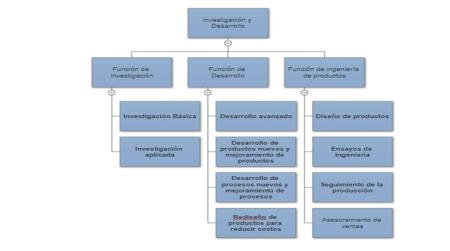
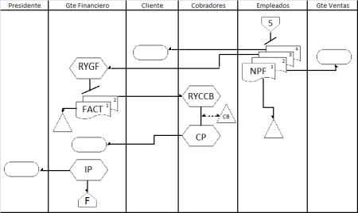

Sistemas y Metodos
17 apuntes · 510 preguntas de multiple choice · material completo para el parcial
Definiciones generales — Sistemas y Métodos
Introducción y contexto
Las organizaciones modernas necesitan normas y procedimientos que avalen sus operaciones para lograr los objetivos de la alta dirección. Toda organización es un sistema en el cual las personas se interrelacionan y existe una coordinación lógica con un fin común.
En criollo: una empresa es básicamente un grupo de gente que coordina lo que hace para llegar a un objetivo compartido. Sin coordinación, no es una organización, es un caos.
Sistemas de información gerencial
Los sistemas de información gerencial (SIG) proveen la información necesaria a la dirección para lograr los objetivos propuestos.
Esa información debe cumplir los siguientes roles:
- Apoyo a las operaciones: sostener el funcionamiento diario de la empresa.
- Información para la administración general: darle a los mandos medios y altos los datos que necesitan para gestionar.
- Apoyo a la toma de decisiones de la Alta Dirección: información estratégica para las decisiones más importantes.
- Planeamiento y control: permitir planificar actividades futuras y controlar que se cumplan los objetivos.
- Soporte tecnológico adecuado: la información debe estar soportada por equipos de computación, comunicaciones, software, bases de datos y manuales administrativos.
En criollo: el SIG es el sistema de información de la empresa. Si la empresa fuera un cuerpo humano, el SIG sería el sistema nervioso: lleva la información desde las "extremidades" (operaciones) hasta el "cerebro" (alta dirección) para que pueda tomar decisiones.
Conceptos clave para el parcial
Organización = sistema social de dos o más personas que trabajan coordinadamente para alcanzar una meta.
Sistema de información gerencial = conjunto de herramientas y procesos que proveen información a la dirección para planificar, controlar y tomar decisiones.
Requisitos de la información gerencial: apoyo operativo, apoyo administrativo, soporte a decisiones de alta dirección, planeamiento y control, soporte tecnológico.
Glosario rápido
| Término | Definición |
|---|---|
| Organización | Sistema en el que las personas se interrelacionan con una coordinación lógica para alcanzar objetivos |
| SIG | Sistema de Información Gerencial: provee información a la dirección para lograr objetivos |
| Alta Dirección | Nivel más alto de la jerarquía organizacional, responsable de las decisiones estratégicas |
| Planeamiento | Proceso de definir objetivos y cómo alcanzarlos |
| Control | Proceso de verificar que los resultados se ajusten a lo planificado |
| Manuales administrativos | Documentos que formalizan procedimientos, funciones y sistemas de la organización |
Multiple Choice — 30 preguntas
1. ¿Cuál es la función principal de los sistemas de información gerencial (SIG)?
2. Según el apunte, ¿cuáles son los cinco aspectos que debe contemplar la información gerencial?
3. Una organización es definida en el apunte como:
4. ¿Cuál de los siguientes NO es un aspecto que debe contemplar la información gerencial según el apunte?
5. ¿En qué debe estar soportada la información gerencial, según el apunte?
6. La coordinación lógica dentro de una organización tiene por objetivo:
7. El soporte de la información gerencial a la toma de decisiones de la Alta Dirección se refiere a:
8. El aspecto de "planeamiento y control adecuado" en la información gerencial se relaciona con:
9. ¿Cómo se describe a una organización en relación con los sistemas?
10. ¿Qué tipo de información busca cubrir el soporte tecnológico de los SIG?
11. Una empresa que tiene datos de ventas pero no los sistematiza ni los pone a disposición de la dirección:
12. Los manuales administrativos son parte del soporte de la información gerencial porque:
13. La información que "brindan apoyo para la administración general" se refiere a:
14. ¿Por qué una organización necesita "normas y procedimientos"?
15. Si una empresa tiene excelente software pero sus manuales administrativos están desactualizados, ¿cuál es el problema?
16. El concepto de "control" en el contexto del SIG implica:
17. La diferencia fundamental entre "apoyo a operaciones" y "apoyo a la toma de decisiones de la Alta Dirección" es:
18. ¿Cuál afirmación refleja mejor la relación entre organización e información?
19. ¿Qué papel juega la "coordinación lógica" dentro de la organización?
20. ¿Por qué es importante que la información esté soportada por "bases de datos"?
21. Cuando el apunte menciona "comunicaciones" como parte del soporte tecnológico, se refiere a:
22. Un sistema de información gerencial efectivo debe:
23. ¿Qué define principalmente a una "organización" según el apunte?
24. El término "directivas de la alta dirección" hace referencia a:
25. ¿Por qué el apunte subraya que la información debe permitir el "planeamiento y control" de acuerdo al tipo de operaciones?
26. La ausencia de sistemas de información gerencial en una organización conlleva:
27. ¿Cuál es el rol de los "equipos de computación" dentro del soporte de la información gerencial?
28. La información gerencial orientada al "apoyo operativo" sirve principalmente para:
29. ¿Qué aspecto hace que los manuales administrativos sean parte del soporte tecnológico de la información?
30. Una empresa que recopila datos de ventas, los procesa con software, los analiza y los presenta a la dirección para decidir estrategias está aplicando:
Casos prácticos — 15 preguntas de aplicación
1. Una empresa de retail recopila ventas de sus 50 sucursales, procesa los datos con su ERP, analiza tendencias por categoría y presenta tableros a la dirección para decidir promociones. ¿Qué está aplicando?
2. Una pyme tiene gente buena pero cada uno trabaja de manera aislada y sin coordinación. ¿Qué requisito le falta para considerarse "organización" según el apunte?
3. El sistema informático de una empresa permite emitir comprobantes diarios, registrar movimientos de caja y entregar información a operadores. ¿Qué rol del SIG cubre principalmente?
4. Los gerentes medios reciben reportes de ventas, costos y stock para gestionar sus áreas. ¿Qué rol del SIG se está cumpliendo?
5. El directorio de una empresa accede a tableros con escenarios y proyecciones para decidir si entrar a un nuevo país. ¿Qué rol del SIG es?
6. Una compañía usa indicadores para planificar ventas del próximo año y verificar mes a mes el cumplimiento. ¿Qué rol del SIG ejerce?
7. Una empresa moderniza sus servidores, software, comunicaciones y bases de datos para que los demás roles del SIG funcionen mejor. ¿Qué rol está fortaleciendo?
8. Una nueva CEO quiere implantar normas y procedimientos para que sus operaciones se alineen con los objetivos de la dirección. ¿Qué necesidad organizacional describe el apunte?
9. El SIG de una compañía atiende exclusivamente al área operativa y no llega a la dirección. ¿Qué inconveniente práctico se observa?
10. Una empresa argumenta que su sistema cumple los cinco roles: opera al día, abastece a mandos medios y altos, da soporte a decisiones estratégicas, permite planificar y controlar y se sostiene en buena tecnología. ¿Cómo se evalúa?
11. Una start-up argentina pretende crecer pero aún no escribió manuales administrativos. ¿Qué afirma el apunte sobre estos manuales en relación con el SIG?
12. Un empresario dice "una organización es solo un grupo de personas". ¿Qué corrección haría el apunte?
13. Un equipo de IT presenta a la dirección un dashboard que mezcla operación, gestión y planificación. ¿Qué ventaja del SIG ilustra este caso?
14. Tras un cambio gerencial, la nueva dirección quiere claridad sobre sistemas, métodos y normas. ¿Qué rol cumplen "Sistemas y Métodos" en este contexto, según el apunte?
15. Una empresa decide invertir en software, comunicaciones y bases de datos sin redefinir manuales ni procesos. ¿Qué riesgo prevé el apunte si el "soporte tecnológico" no se acompaña?
Flashcards — 21 preguntas abiertas
1. ¿Qué necesitan las organizaciones modernas para lograr los objetivos de la alta dirección?
2. Definí "organización" desde el enfoque de sistemas.
3. ¿Qué es un Sistema de Información Gerencial (SIG)?
4. Mencioná los cinco roles que debe cumplir la información gerencial.
5. ¿Qué tipos de soporte requiere la información gerencial según el apunte?
6. ¿Qué función tiene el rol "Apoyo a las operaciones" del SIG?
7. ¿Qué entrega el SIG a los mandos medios y altos?
8. ¿Qué rol del SIG aporta información estratégica a la Alta Dirección?
9. ¿Cómo describe el apunte la función "Planeamiento y control"?
10. ¿Por qué se compara al SIG con el "sistema nervioso" de la organización?
11. ¿Qué rol cumple "Sistemas y Métodos" dentro de la organización?
12. ¿Qué pasa si una organización tiene gente capaz pero sin coordinación?
13. ¿Qué relación existe entre SIG y planificación/control?
14. ¿Por qué es importante que el SIG tenga "soporte tecnológico adecuado"?
15. ¿Qué requisitos debe cumplir un SIG para ser considerado "efectivo"?
16. ¿Qué es la Alta Dirección en una organización?
17. ¿Cómo define el apunte al "Planeamiento"?
18. ¿Cómo define el apunte al "Control"?
19. ¿Qué son los "Manuales administrativos"?
20. ¿Qué elemento es fundamental en la definición de una organización según el apunte?
21. ¿Cuál es la diferencia entre un grupo de personas y una organización?
Tipos de Estructura Organizacional
Diseño organizacional
El diseño organizacional permite a la alta dirección determinar qué estructura se adapta mejor a los fines y propósitos de la compañía, verificando:
- La estrategia de la organización.
- El personal que realizará las tareas.
- El uso de la tecnología para producción, administración y control.
- El logro de los objetivos propuestos.
En criollo: el diseño organizacional es básicamente decidir "cómo se arma la empresa". No es lo mismo organizar una startup de 5 personas que una multinacional. La estructura tiene que estar alineada con lo que la empresa quiere lograr.
Mediante la estructura organizacional se divide, organiza y coordinan las actividades de la organización.
La División del Trabajo
El concepto de división del trabajo fue mencionado por Adam Smith en La Riqueza de las Naciones. Smith propone que:
Varias personas realizando una parte de un proceso total serán más eficientes que si una sola persona realiza la tarea completa.
Ejemplo clásico de Adam Smith (fábrica de alfileres):
- Si 10 personas realizan todo el proceso completo cada una: producen 20 alfileres por día cada una.
- Si esas mismas 10 personas realizan cada una una parte pequeña del proceso total de forma coordinada: producen 48.000 alfileres al día en conjunto.
Esta misma lógica le permitió a Henry Ford diseñar su famosa línea de montaje para fabricar el "Ford T".
En criollo: la división del trabajo es uno de los conceptos más poderosos de la administración. Cuando cada uno se especializa en una parte del proceso y coordina con los demás, la productividad se dispara. Ford lo llevó a su máxima expresión con la línea de ensamblaje.
Hoy, sin esta división del trabajo, sería imposible imaginar los procesos tanto de empresas manufactureras como de servicios.
Punto clave para el parcial
Estructura organizacional = cómo se divide, organiza y coordina el trabajo en la organización.
Diseño organizacional = proceso de tomar decisiones para crear esa estructura.
La división del trabajo (especialización) es el principio fundamental que hace posible la eficiencia en organizaciones complejas.
Adam Smith → concepto de división del trabajo. Henry Ford → aplicación práctica en la línea de montaje.
Glosario rápido
| Término | Definición |
|---|---|
| Diseño organizacional | Proceso de decidir cómo estructurar la organización para alcanzar sus objetivos |
| Estructura organizacional | Forma en que el trabajo se divide, organiza y coordina formalmente |
| División del trabajo | Descomponer un proceso en partes especializadas para aumentar la eficiencia |
| Adam Smith | Economista escocés que conceptualizó la división del trabajo en "La Riqueza de las Naciones" |
| Línea de montaje | Aplicación de la división del trabajo en la producción industrial; ejemplo: Ford T |
| Henry Ford | Industrialista que aplicó la división del trabajo en la línea de ensamblaje del Ford T |
| Especialización | Concentración de cada trabajador en una tarea o parte limitada del proceso total |
Multiple Choice — 30 preguntas
1. ¿Qué permite el diseño organizacional a la alta dirección?
2. ¿Quién mencionó primero el concepto de división del trabajo?
3. En el ejemplo de la fábrica de alfileres de Adam Smith, ¿cuál es el resultado de 10 personas realizando cada una el proceso completo?
4. En el ejemplo de la fábrica de alfileres, ¿cuál es el resultado cuando las 10 personas realizan partes especializadas del proceso coordinadamente?
5. ¿En qué industria aplicó Henry Ford el principio de división del trabajo?
6. ¿Cuál es la función de la estructura organizacional?
7. ¿Cuál de los siguientes factores NO es considerado en el diseño organizacional según el apunte?
8. La diferencia entre "diseño organizacional" y "estructura organizacional" es que:
9. ¿Por qué la división del trabajo aumenta la eficiencia?
10. Adam Smith publicó el concepto de división del trabajo en:
11. El ejemplo del Ford T ilustra que la división del trabajo:
12. ¿Cuál es la relación entre el diseño organizacional y los objetivos de la empresa?
13. Hoy en día, ¿sería posible imaginar los procesos empresariales sin la división del trabajo?
14. Cuando el apunte menciona "el uso de la tecnología para la producción, administración y control" como factor del diseño organizacional, se refiere a:
15. ¿Qué tipo de organizaciones se ven influenciadas por la necesidad de dividir el trabajo, según el apunte?
16. La "estrategia" como factor del diseño organizacional implica que:
17. ¿Por qué es importante el "personal que realizará las tareas" como factor del diseño organizacional?
18. En el ejemplo del Ford T, ¿qué tipo de estructura de trabajo se implementó?
19. ¿Cuál es el objetivo final del diseño organizacional según el apunte?
20. La "coordinación" en el contexto de la división del trabajo es esencial porque:
21. Adam Smith observó que 10 personas haciendo todo el proceso producen 20 alfileres/día/persona vs. 48.000 al coordinarse con división de trabajo. ¿Cuántas veces más productivo es el segundo enfoque?
22. ¿Cuál de los siguientes es el principal beneficio de la división del trabajo?
23. ¿En qué obra de qué autor aparece por primera vez el concepto de división del trabajo relevante para este apunte?
24. El diseño organizacional considera la tecnología disponible porque:
25. La "línea de montaje" del Ford T es un ejemplo histórico de:
26. ¿Qué significa que la estructura organizacional "coordina las actividades"?
27. ¿Cuál es la relación entre especialización y coordinación en la división del trabajo?
28. Si una empresa de servicios financieros divide su trabajo en: atención al cliente, análisis de riesgo, aprobación de créditos y administración de cuentas, está aplicando:
29. El ejemplo de Adam Smith demuestra que la clave no es solo dividir el trabajo, sino también:
30. ¿Cuál es la implicancia práctica del diseño organizacional para los gerentes?
Casos prácticos — 15 preguntas de aplicación
1. Una start-up de 5 personas crece a 60 y empieza a ver caos en quién hace qué. La dirección debe decidir cómo dividir, organizar y coordinar el trabajo. ¿Qué proceso está iniciando?
2. En la fábrica del ejemplo de Adam Smith, 10 personas pasan de producir 200 alfileres/día (cada una el proceso completo) a 48.000/día al especializarse. ¿Qué fenómeno se demuestra?
3. Henry Ford diseña una línea de ensamblaje donde cada trabajador hace un paso específico para producir el Ford T. ¿Qué principio aplica?
4. Una empresa quiere producir más sin contratar más personal. ¿Qué dice el apunte que puede ayudar a aumentar la productividad?
5. La directora financiera quiere alinear la estructura con la nueva estrategia de internacionalización y con el personal disponible. ¿Qué dimensiones debe verificar al diseñar la estructura?
6. Una pyme decide montar una línea de envasado donde cada empleado hace un paso fijo y simple. ¿A qué referente y aplicación se asemeja la decisión?
7. Una empresa de servicios contables quiere mejorar la eficiencia distribuyendo tareas: uno carga datos, otro audita, otro emite reportes. ¿Es válido aplicar la división del trabajo en servicios?
8. Una organización exige a su estructura que se adapte al uso de tecnología para producción, administración y control. ¿Qué dimensión del diseño organizacional invoca?
9. Cada año la dirección revisa si la estructura ayuda a cumplir los objetivos propuestos. ¿Qué dimensión del diseño organizacional aplica?
10. Un gerente argumenta que la estructura "se elige una sola vez y dura para siempre". ¿Qué objeción del apunte aplica?
11. Una empresa de manufactura adopta la línea de montaje. ¿Qué efecto esperable describe el apunte?
12. Una organización quiere clarificar quién hace qué y cómo se coordinan las tareas. ¿Qué diseño debe trabajar?
13. En "La Riqueza de las Naciones" Adam Smith propone que varias personas haciendo cada una una parte de un proceso son más eficientes. ¿Qué consecuencia tiene esto para la administración moderna?
14. Una empresa que crece rápido debería revisar su diseño organizacional cuando…
15. ¿Cómo se diferencia "diseño organizacional" de "estructura organizacional" según el apunte?
Flashcards — 15 preguntas abiertas
1. ¿Qué es el diseño organizacional?
2. Mencioná las cuatro dimensiones que verifica el diseño organizacional.
3. ¿Qué hace la estructura organizacional con las actividades?
4. ¿Quién mencionó originalmente la división del trabajo y en qué obra?
5. ¿Qué propone Adam Smith sobre la división del trabajo?
6. Resumí el ejemplo de la fábrica de alfileres.
7. ¿Cómo aplicó Henry Ford la división del trabajo?
8. ¿Por qué la división del trabajo es clave en la organización moderna?
9. Diferenciá "diseño organizacional" y "estructura organizacional".
10. ¿Qué es la especialización en la organización?
11. ¿Por qué la línea de montaje fue revolucionaria?
12. ¿Qué papel tiene la coordinación en la división del trabajo?
13. ¿Qué responsabilidad tiene la alta dirección sobre la estructura?
14. ¿Cuándo conviene revisar el diseño organizacional?
15. ¿Qué relación existe entre Adam Smith y Henry Ford en este apunte?
La Organización — Descripción de Puestos y Tipos de Equipos
Equipos de trabajo en la organización
Los equipos de trabajo permiten a la organización ordenar las tareas y determinar las funciones de cada área. El desempeño del empleado en estos equipos le permite al supervisor realizar la evaluación anual del empleado, lo que lleva a:
- Correcciones a los objetivos propuestos.
- Revisión de los alcances de dichos objetivos.
- En caso de merecerlo, la asignación de premios o méritos.
En criollo: los equipos son la forma en que la empresa organiza quién hace qué. Y el desempeño dentro del equipo es lo que después mide el jefe cuando hace la evaluación anual.
Los Comités
Los Comités conforman un equipo formal de la compañía. Aunque no figuran en el organigrama de la empresa (no representan una función operativa), son importantes porque:
- Generalmente están conformados por gerencia media y alta.
- Su función principal es la discusión y toma de decisiones de acuerdo con las metas estipuladas por la alta dirección.
- La pertenencia a un Comité es un reconocimiento a las aptitudes y experiencia del participante, por lo cual es altamente valorable.
En criollo: un Comité es como un "grupo de trabajo de alto nivel" que no figura en el organigrama pero existe. Lo integran gerentes y es donde se toman decisiones importantes. Estar en uno es un reconocimiento.
Características del Comité:
- No figura en el organigrama.
- Conformado por gerencia media y alta.
- Función: discusión y toma de decisiones.
- Participación = reconocimiento a aptitudes y experiencia.
Task Force (Equipos de Proyectos)
Las task force o equipos de proyectos son otro tipo de equipo formal:
- Están conformados por gerencia media y empleados con experiencia.
- No forman parte del organigrama de la empresa.
- Son grupos multidisciplinarios asignados a un proyecto de mediana o corta duración.
- Su objetivo es la concreción de proyectos a nivel operativo, administrativo o sistémico, que se encuentren dentro de los objetivos generales de la compañía.
En criollo: la task force es como un "comando especial" temporal. Juntás gente de distintas áreas (contabilidad, sistemas, producción) para resolver un problema concreto. Terminado el proyecto, el equipo se disuelve.
Características de la task force:
- Carácter temporal y multidisciplinario.
- No figura en el organigrama.
- Conformada por gerencia media y empleados con experiencia.
- Proyectos de corta o mediana duración.
- Objetivos específicos y acotados.
Comparación Comité vs. Task Force
| Característica | Comité | Task Force |
|---|---|---|
| Figura en organigrama | No | No |
| Composición | Gerencia media y alta | Gerencia media y empleados con experiencia |
| Función | Discusión y toma de decisiones | Concreción de proyectos específicos |
| Duración | Generalmente permanente | Temporal (mediana o corta duración) |
| Carácter | Alta jerarquía | Multidisciplinario operativo |
Punto clave para el parcial: tanto los Comités como las task force NO figuran en el organigrama, aunque son equipos formales de la empresa.
El organigrama y los equipos informales
El organigrama representa la estructura formal de la organización. Los equipos como Comités y task force, aunque son formales (están sancionados por la dirección), no aparecen en el organigrama porque no representan una función operativa permanente de la empresa.
Glosario rápido
| Término | Definición |
|---|---|
| Equipo de trabajo | Grupo formal dentro de la organización que ordena tareas y funciones |
| Comité | Equipo formal de gerencia media/alta, no figura en el organigrama, dedicado a discutir y tomar decisiones |
| Task force | Equipo temporal multidisciplinario para ejecutar proyectos específicos, no figura en el organigrama |
| Organigrama | Representación gráfica de la estructura formal de la organización |
| Evaluación anual | Proceso por el que el supervisor evalúa el desempeño del empleado en el equipo |
Multiple Choice — 30 preguntas
1. ¿Cuál es la función principal de los equipos de trabajo según el apunte?
2. ¿Los Comités figuran en el organigrama de la empresa?
3. ¿Quiénes conforman habitualmente un Comité?
4. ¿Cuál es la principal función de un Comité dentro de la organización?
5. ¿Qué significa que la pertenencia a un Comité es "altamente valorable"?
6. ¿Qué son las task force o equipos de proyectos?
7. ¿Las task force figuran en el organigrama de la empresa?
8. ¿Quiénes conforman una task force?
9. El carácter "multidisciplinario" de las task force significa que:
10. ¿En qué tipo de proyectos trabajan las task force?
11. ¿Cuál es la diferencia principal entre un Comité y una task force?
12. El desempeño del empleado en los equipos de trabajo es utilizado por el supervisor para:
13. ¿Por qué tanto los Comités como las task force no figuran en el organigrama?
14. ¿Cuál de los siguientes es un objetivo típico de una task force?
15. ¿Cuál es una característica que comparten Comités y task force?
16. La evaluación anual del empleado permite, entre otras cosas:
17. ¿A qué se refiere el apunte cuando menciona proyectos "a nivel operativo, administrativo o sistémico" en las task force?
18. ¿Por qué la participación en un Comité representa un "reconocimiento" para el empleado?
19. Un gerente de producción y un gerente de finanzas reunidos para decidir cómo optimizar costos es un ejemplo de:
20. Un equipo formado por empleados de marketing, sistemas y producción para lanzar un nuevo producto en 6 meses es un ejemplo de:
21. ¿Cuál de las siguientes afirmaciones sobre los equipos de trabajo es INCORRECTA?
22. ¿Cuál es el impacto del desempeño en los equipos de trabajo sobre la carrera del empleado?
23. Los proyectos asignados a una task force se caracterizan por estar:
24. ¿Qué sucede con la task force una vez que concluye el proyecto?
25. ¿Cuál es la diferencia de composición entre un Comité y una task force?
26. ¿Qué implica que las task force sean "grupos multidisciplinarios"?
27. ¿Cuál es la relación entre los equipos de trabajo y el organigrama?
28. Si un empleado tiene buen desempeño en su equipo de trabajo, ¿qué puede obtener según el apunte?
29. ¿Cuál de los siguientes NO es un nivel en el que puede operar un proyecto de task force?
30. ¿Por qué es importante que los supervisores evalúen anualmente el desempeño de los empleados en los equipos?
Casos prácticos — 15 preguntas de aplicación
1. Una empresa convoca a gerentes de Producción, RRHH y Finanzas a un grupo permanente que se reúne cada quincena para discutir y tomar decisiones alineadas con la dirección. ¿Qué tipo de equipo formal es?
2. La empresa arma un equipo multidisciplinario por 3 meses para resolver un proyecto de actualización de software con personas de Sistemas, Operaciones y Finanzas. ¿Qué tipo de equipo formal es?
3. Un empleado nuevo nota que ni el comité directivo ni la task force aparecen en el organigrama. ¿Qué le explicaría el apunte?
4. Una analista es invitada a un comité por su trayectoria. La empresa le comunica que su designación es un reconocimiento. ¿Qué afirma el apunte sobre este caso?
5. Una task force concluye exitosamente con la migración a un nuevo sistema. ¿Qué pasa con el equipo según el apunte?
6. El supervisor evalúa el desempeño anual de los miembros de un equipo. ¿Qué consecuencias previstas en el apunte tiene esa evaluación?
7. Una empresa quiere armar un equipo para resolver una caída del 20% en la satisfacción del cliente. La crisis es puntual y se busca una respuesta multidisciplinaria. ¿Qué tipo de equipo conviene?
8. Para tomar decisiones recurrentes sobre la política de Seguridad e Higiene de la planta, la empresa busca un equipo permanente con representantes de varias áreas. ¿Qué tipo de equipo formal le sirve?
9. Un comité está integrado por gerencia media/alta y una task force está integrada por gerencia media + empleados con experiencia. ¿Qué demuestra esta diferencia de composición?
10. Un empleado argumenta que como las task forces no figuran en el organigrama "no son formales". ¿Qué se le respondería desde el apunte?
11. Una empresa busca asignar a una persona experimentada a un grupo formal con el objetivo de concretar un proyecto sistémico de mediana duración. ¿Qué equipo es el adecuado?
12. En el organigrama una empresa tiene Producción, Ventas y Finanzas, pero existen también un Comité de Calidad y un equipo de proyecto que migra el ERP. ¿Qué demuestra este caso?
13. El gerente decide invitar a un empleado experto en lugar de un gerente para un proyecto de mejora del proceso de cobranzas. ¿Qué tipo de equipo está armando y por qué tiene sentido?
14. Una empresa que tiene cierta jerarquía rígida puede mejorar la flexibilidad mediante:
15. Tras el cierre del proyecto, un miembro de la task force vuelve a su área original con conocimientos nuevos. ¿Qué muestra esto?
Flashcards — 21 preguntas abiertas
1. ¿Qué función cumplen los equipos de trabajo dentro de la organización?
2. ¿Qué resultados puede arrojar la evaluación anual del desempeño?
3. Definí "Comité" según el apunte.
4. ¿Por qué se considera "altamente valorable" pertenecer a un Comité?
5. Mencioná las cuatro características clave de un Comité.
6. Definí "Task force" según el apunte.
7. Mencioná las cinco características de una task force.
8. Comparativa Comité vs Task Force: dos diferencias clave.
9. ¿Qué tienen en común Comités y task forces?
10. ¿Qué representa el organigrama de una organización?
11. ¿Por qué un equipo formal puede no figurar en el organigrama?
12. ¿Qué diferencias hay en la composición típica de un comité y una task force?
13. ¿Qué tipo de proyectos asume típicamente una task force?
14. ¿Por qué la evaluación anual depende del desempeño en los equipos?
15. ¿Por qué decimos que comités y task forces aportan flexibilidad?
16. ¿Cuál es la duración típica de una task force?
17. ¿Qué significa que una task force sea "multidisciplinaria"?
18. ¿Qué diferencia hay entre "función operativa permanente" y los equipos como comités o task forces?
19. ¿Por qué la pertenencia a un Comité requiere que el participante tenga experiencia y aptitudes reconocidas?
20. ¿Cuál es el rol específico de los "empleados con experiencia" dentro de una task force?
21. ¿Qué significa que los comités y task forces sean "equipos formales sancionados por la dirección"?
Tipos de Organización
1. Conceptos fundamentales de la organización
Definición clave: Una organización es un sistema social, compuesto por dos o más personas que trabajan juntas, de manera coordinada y estructurada, para alcanzar una meta o un conjunto de metas específicas.
Toda organización, sin importar su tamaño o fin (lucrativo o no), comparte tres características fundamentales:
- Tienen un propósito o meta definida.
- Tienen un plan o método para alcanzar esas metas.
- Adquieren y asignan recursos para lograr sus objetivos.
La administración es el proceso de darle forma a estas organizaciones, asegurando que cumplan sus metas de manera racional y eficiente. La persona responsable de dirigir estas actividades es el gerente.
En criollo: toda organización, ya sea un kiosco, una ONG o una multinacional, tiene algo en común: tiene un propósito, un plan para lograrlo y recursos para ejecutarlo. Sin alguno de esos tres, no es una organización, es un grupo de gente junta.
2. Eficiencia vs. Eficacia
Son la métrica fundamental del desempeño gerencial y organizacional.
| Concepto | Definición | Pregunta clave | Ejemplo |
|---|---|---|---|
| Eficiencia | Usar la menor cantidad de recursos posibles para obtener un resultado. "Hacer las cosas bien". | ¿Estamos minimizando recursos? | Fábrica que produce 100 autos con 1000 hs-hombre vs. otra que necesita 1200 para lo mismo |
| Eficacia | Definir y alcanzar los objetivos correctos. "Hacer las cosas que se deben hacer". | ¿Estamos haciendo lo correcto? | Empresa de software que desarrolla una app excelente... que nadie necesita: eficiente pero no eficaz |
La clave del éxito: ser eficiente Y eficaz simultáneamente. De nada sirve fabricar de forma muy económica un producto que nadie quiere, ni fabricar el producto deseado a un costo que lo haga invendible.
En criollo: eficiencia es "hacer bien las cosas", eficacia es "hacer las cosas correctas". Si estudiás todo lo que no entra en el parcial (eficiente en tiempo de estudio) pero no estudiás lo que importa (no eficaz), sacás un 2.
3. La organización y su entorno
Ninguna organización es una isla. Todas operan dentro de un entorno formado por elementos externos que pueden afectar sus objetivos.
Microambiente (ambiente de operaciones o específico)
Actores más cercanos e inmediatos que afectan la capacidad de servir a los clientes:
- Clientes: sus necesidades y poder de compra definen la oferta.
- Proveedores: su calidad, costo y fiabilidad impactan en la organización.
- Competencia: otras organizaciones que disputan los mismos clientes o recursos.
- Grupos reguladores: agencias gubernamentales, sindicatos, grupos de interés.
Macroambiente (ambiente general)
Fuerzas sociales más amplias que afectan a todo el microambiente:
- Fuerzas económicas: inflación, tasas de interés, crecimiento económico.
- Fuerzas político-legales: leyes, estabilidad política, regulaciones.
- Fuerzas socioculturales: valores, estilos de vida, tendencias demográficas.
- Fuerzas tecnológicas: innovaciones, automatización, I+D.
- Fuerzas ecológicas: regulaciones medioambientales, sostenibilidad, cambio climático.
En criollo: el microambiente son los jugadores directos con los que interactuás: tus clientes, tus proveedores, tu competencia. El macroambiente son las "reglas del juego" más grandes: la economía, las leyes, la tecnología. No los controlás, pero te afectan.
4. Análisis del entorno competitivo: Las 5 Fuerzas de Porter
Michael Porter desarrolló un modelo que identifica cinco fuerzas que determinan la intensidad de la competencia y la rentabilidad en un sector:
- Competidores tradicionales: rivalidad entre empresas existentes en el sector. Ejemplo: Coca-Cola vs. Pepsi.
- Nuevos participantes en el mercado: amenaza de nuevas empresas que ingresan. Ejemplo: aerolíneas low-cost que desafiaron a las tradicionales.
- Productos y servicios sustitutos: productos de otros sectores que satisfacen la misma necesidad. Ejemplo: Zoom como sustituto de viajes de negocios.
- Proveedores: poder de negociación de los proveedores. Ejemplo: Microsoft y Windows tienen alto poder sobre fabricantes de PC.
- Clientes: poder de negociación de los compradores. Ejemplo: Walmart tiene enorme poder sobre sus proveedores de alimentos.
En criollo: Porter dice que la rentabilidad de tu empresa no solo depende de si competís bien contra tus rivales directos, sino de 4 fuerzas más: los que pueden entrar a tu mercado, los productos que te pueden reemplazar, tus proveedores y tus clientes. Si todos estos tienen mucho poder, tu rentabilidad es baja.
5. Diseño y estructura organizacional: elementos clave
- División del trabajo (especialización): descomponer una tarea compleja en subtareas simples. Adam Smith y la fábrica de alfileres.
- Departamentalización: agrupar tareas y puestos en departamentos lógicos. Formas: por funciones, productos, clientes, área geográfica o procesos.
- Jerarquía: línea de autoridad y responsabilidad. Define quién reporta a quién.
- Coordinación: integración de actividades de los diferentes departamentos para que trabajen sincronizadamente hacia las metas.
6. Tipos de estructuras organizacionales
A. Estructura lineal (o piramidal)
- La más simple y antigua. Autoridad fluye directamente de la cima a la base.
- Ventajas: simple, clara asignación de autoridad, toma de decisiones rápida.
- Desventajas: rígida, sobrecarga a directivos, no fomenta la especialización.
- Ideal para: empresas muy pequeñas (tienda familiar, pequeño taller).
B. Estructura funcional
- Agrupa empleados según la función o especialidad que desempeñan (Finanzas, Marketing, RRHH, Operaciones).
- Ventajas: fomenta la especialización y eficiencia dentro de cada función.
- Desventajas: puede crear "silos" (departamentos que no se comunican bien), respuesta lenta a cambios del mercado.
- Ideal para: organizaciones de tamaño mediano con número limitado de productos.
C. Estructura por producto/mercado (divisional)
- Organiza la empresa en divisiones semiautónomas, cada una enfocada en un producto, mercado, cliente o región geográfica.
- Cada división opera casi como una empresa independiente, con su propio gerente y departamentos funcionales.
- Ventajas: mayor enfoque en resultados específicos, mayor adaptabilidad, libera a la alta dirección de la gestión diaria.
- Desventajas: duplicación de recursos y costos (cada división tiene su propio marketing, etc.), puede generar competencia destructiva entre divisiones.
- Ideal para: grandes corporaciones con cartera de productos diversificada (Nestlé, General Electric).
D. Estructura matricial
- Estructura híbrida que combina dos formas de departamentalización (generalmente funcional + producto/proyecto).
- Cada empleado tiene dos jefes: gerente funcional (vertical) y gerente de proyecto/producto (horizontal). Sistema de mando múltiple.
- Ventajas: muy flexible, responde rápido a cambios, uso eficiente de especialistas en diferentes proyectos.
- Desventajas: rompe con el principio de unidad de mando, puede generar confusión y conflictos de poder. Requiere alta capacidad de comunicación.
- Ideal para: entornos complejos y dinámicos (agencias de publicidad, consultoras, NASA).
En criollo:
- Lineal = el clásico "el jefe manda y listo". Simple pero rígido.
- Funcional = agrupás por especialidad (todos los de marketing juntos). Eficiente pero genera silos.
- Divisional = cada línea de producto es casi una empresa aparte. Más autónoma pero más costosa.
- Matricial = la más compleja: dos jefes, mucha flexibilidad pero también mucho potencial de conflicto.
7. La dualidad de la organización: formal e informal
En toda organización coexisten dos estructuras superpuestas:
Organización formal
Es la estructura oficial y deliberadamente planificada definida por la dirección.
- Se basa en división del trabajo, autoridad formal y reglas predefinidas.
- Se representa visualmente mediante el organigrama.
- Beneficios: clarifica objetivos y responsabilidades, optimiza el uso de recursos, evita superposición de tareas.
- Limitaciones: puede reprimir la iniciativa individual y no satisfacer las necesidades sociales.
Organización informal
Es la red de relaciones sociales y personales que surgen espontáneamente entre los miembros.
- No es planificada, surge de la amistad o intereses comunes.
- Posee líderes informales y se basa en valores de grupo en lugar de reglas escritas.
- Beneficios: satisface necesidades sociales, mejora la comunicación a través del "radiopasillo", puede generar mayor compromiso y resolver problemas ágilmente.
- Limitaciones: puede generar rumores dañinos, resistencia al cambio, conflictos, conformidad por encima del rendimiento.
Clave gerencial: Un gerente inteligente no intenta eliminar la organización informal, sino que aprende a entenderla, alinearla con los objetivos formales y utilizar sus canales de comunicación para el beneficio de la organización.
En criollo: la organización informal es el "chat del grupo de trabajo que no existe oficialmente". Tiene sus propias reglas, sus propios líderes y su propia comunicación. El buen gerente no lo ignora ni lo destruye: lo conoce y lo aprovecha.
Glosario rápido
| Término | Definición |
|---|---|
| Organización | Sistema social de 2+ personas que trabajan coordinadamente para alcanzar metas |
| Gerente | Persona responsable de dirigir las actividades para que la organización cumpla sus metas |
| Eficiencia | Usar la menor cantidad de recursos posibles para obtener un resultado ("hacer bien las cosas") |
| Eficacia | Alcanzar los objetivos correctos ("hacer las cosas que se deben hacer") |
| Microambiente | Actores cercanos: clientes, proveedores, competencia, grupos reguladores |
| Macroambiente | Fuerzas generales: económicas, políticas, sociales, tecnológicas, ecológicas |
| 5 Fuerzas de Porter | Modelo para analizar la rentabilidad y competencia en un sector |
| Departamentalización | Agrupación de tareas y puestos en departamentos lógicos |
| Estructura matricial | Combina departamentalización funcional y por proyecto; empleados con dos jefes |
| Organización formal | Estructura oficial planificada, representada en el organigrama |
| Organización informal | Red de relaciones sociales espontáneas fuera de la estructura oficial |
| "Silos" | Departamentos que no se comunican bien entre sí; problema de la estructura funcional |
| Principio de unidad de mando | Cada empleado debe recibir órdenes de un solo superior |
Multiple Choice — 30 preguntas
1. ¿Cuántas características fundamentales comparte toda organización según el apunte?
2. La diferencia entre eficiencia y eficacia es que:
3. Una empresa desarrolla un producto innovador sin demanda en el mercado. Fue muy cuidadosa con los costos. ¿Qué describe mejor su situación?
4. ¿Cuál de los siguientes pertenece al microambiente de una organización?
5. ¿Cuál de los siguientes pertenece al macroambiente de una organización?
6. Las 5 Fuerzas de Porter fueron desarrolladas para:
7. ¿Cuál de las 5 Fuerzas de Porter describe la amenaza de empresas low-cost ingresando al mercado aéreo?
8. ¿Cuál es la principal desventaja de la estructura funcional?
9. La estructura matricial rompe con:
10. ¿Cuál es la estructura organizacional ideal para una empresa consultora con múltiples proyectos simultáneos y especialistas que trabajan en distintos proyectos al mismo tiempo?
11. La organización informal se caracteriza por:
12. ¿Cómo debe manejar un gerente inteligente la organización informal?
13. ¿Cuál es la estructura organizacional más antigua y simple?
14. Una corporación multinacional como General Electric, con múltiples líneas de negocios (energía, aviación, salud), tendría más probablemente una estructura:
15. ¿Cuál es la principal ventaja de la estructura divisional?
16. El "radiopasillo" o rumor es un mecanismo de la:
17. La "departamentalización" consiste en:
18. ¿Cuál es la principal limitación de la organización formal?
19. ¿Cuál de las siguientes NO es una forma de departamentalización mencionada en el apunte?
20. Las "fuerzas ecológicas" del macroambiente incluyen:
21. Una empresa con un solo dueño-gerente que dirige a 5 empleados directamente tendría una estructura:
22. ¿Cuál es el beneficio de la organización informal para la comunicación organizacional?
23. Si Zoom y Microsoft Teams representan una amenaza para las aerolíneas (reducción de viajes de negocios), ¿qué Fuerza de Porter ejemplifican?
24. La organización formal se representa visualmente mediante:
25. ¿Cuántos elementos clave componen el diseño de la estructura organizacional según el apunte?
26. La "coordinación" en la estructura organizacional busca:
27. Una aerolínea de bajo costo que ingresa al mercado donde antes solo operaban aerolíneas tradicionales es un ejemplo de la fuerza de Porter llamada:
28. ¿Cuál es la principal ventaja del "liderazgo informal" dentro de la organización informal?
29. ¿Por qué la estructura funcional puede ser problemática en entornos de mercado cambiantes?
30. La administración es definida en el apunte como:
Casos prácticos — 15 preguntas de aplicación
1. Una fábrica produce 100 autos con 1.000 horas-hombre, mientras otra necesita 1.200 horas-hombre para los mismos 100 autos. ¿Qué concepto se compara?
2. Una startup desarrolla una app excelente y muy económica que… nadie necesita. ¿Qué le falta?
3. Una empresa de delivery se ve afectada por el aumento del precio del combustible y nuevas regulaciones laborales. ¿Qué nivel del entorno la impacta?
4. Una empresa decide subir el precio porque su principal proveedor de chips, único en el mercado, le cambió condiciones. ¿Qué fuerza de Porter aprieta?
5. Las aerolíneas tradicionales pierden mercado ante low-costs que entran agresivamente al sector. ¿Qué fuerza de Porter las afecta?
6. Las videollamadas (Zoom, Teams) reemplazan reuniones presenciales y disminuyen la demanda de viajes corporativos. ¿Qué fuerza de Porter actúa sobre las aerolíneas?
7. Walmart concentra una porción enorme de las ventas y exige rebajas a sus proveedores de alimentos. ¿Qué fuerza de Porter ejerce?
8. Un taller pequeño con un solo dueño que reparte las tareas a sus tres ayudantes. ¿Qué estructura tiene?
9. Una empresa media organiza a su personal en Marketing, Operaciones, Finanzas y RRHH, agrupados por especialidad. ¿Qué estructura usa y cuál es su riesgo principal?
10. Una multinacional como Nestlé organiza divisiones por categoría (cafés, lácteos, cuidado personal). Cada una tiene su propio gerente y áreas. ¿Qué estructura aplica?
11. En una agencia, cada empleado responde a un gerente funcional (de su disciplina) y a un gerente de proyecto (del cliente). ¿Qué estructura es y qué principio rompe?
12. Adam Smith describe cómo en una fábrica de alfileres se aumenta la producción descomponiendo la tarea en pasos especializados. ¿Qué elemento del diseño organizacional ilustra?
13. Un gerente nuevo descubre que circula un "radiopasillo" sobre cambios inminentes y que existen líderes informales con mucha influencia. ¿Cuál es la actitud recomendada por el apunte?
14. Para representar la jerarquía oficial, la dirección publica un documento donde se ven los puestos, áreas y dependencias. ¿Qué herramienta de la organización formal utiliza?
15. Una empresa con 10 productos diversificados decide pasar a una estructura por divisiones autónomas. ¿Qué desventaja debe prever?
Flashcards — 25 preguntas abiertas
1. Definí "organización".
2. Mencioná las tres características fundamentales de toda organización.
3. Diferenciá eficiencia y eficacia.
4. ¿Qué actores forman el microambiente?
5. ¿Qué fuerzas integran el macroambiente?
6. Mencioná las cinco fuerzas de Porter.
7. Mencioná cuatro elementos clave del diseño organizacional.
8. Caracterizá la estructura lineal o piramidal.
9. Caracterizá la estructura funcional.
10. Caracterizá la estructura divisional.
11. Caracterizá la estructura matricial.
12. ¿Qué es el principio de unidad de mando?
13. Diferenciá organización formal e informal.
14. Mencioná beneficios y limitaciones de la organización informal.
15. ¿Qué actitud debe tener un gerente frente a la organización informal?
16. Definí "administración" y explicá el rol del gerente.
17. ¿Qué es la división del trabajo o especialización?
18. ¿Qué es el organigrama y qué representa?
19. ¿Qué es la jerarquía en una organización?
20. ¿Qué es la coordinación en el diseño organizacional?
21. ¿Qué son los "silos" en una organización?
22. Mencioná las formas principales de departamentalización.
23. Define el concepto de "entorno" u "ambiente" en las organizaciones.
24. ¿Qué son los líderes informales?
25. ¿Qué es el "radiopasillo" en una organización?
El Modelo ACME
¿Qué es el Modelo ACME?
El Modelo ACME es la descripción de las distintas áreas en las que se puede dividir una organización, detallando sus funciones y subfunciones. Es un modelo mecanicista propio de la Escuela Neoclásica de administración.
Sus creadores buscaron establecer un organigrama estándar para ser utilizado en todo tipo de organizaciones.
En criollo: el ACME es como un "organigrama universal" que los teóricos neoclásicos inventaron para mostrar todas las áreas que puede tener una empresa. Es didáctico pero ya está superado: hoy en día ninguna empresa real funciona exactamente así.
Estado actual del modelo: Ha sido superado en el tiempo y en muchos casos es catalogado de obsoleto. Solo podría aplicarse en la actualidad en mega-compañías, ya que el desarrollo de tantas áreas y funciones solo puede aplicarse en grandes estructuras organizacionales. Sin embargo, su valor es didáctico: permite comprender todas las tareas que puede realizar una organización.
Las 7 Áreas del Modelo ACME
El modelo divide a la empresa en una matriz de 7 áreas de actividad:
| # | Área | Funciones | Sub-funciones |
|---|---|---|---|
| 1 | Investigación y Desarrollo | 3 | 10 |
| 2 | Producción | 6 | 35 |
| 3 | Comercialización | 6 | 22 |
| 4 | Finanzas y Control | 2 | 11 |
| 5 | Administración de Personal | 5 | 21 |
| 6 | Relaciones Externas | 2 | 6 |
| 7 | Secretaría y Legales | 2 | 7 |
Para el parcial: memorizá las 7 áreas en orden. Son las más preguntadas.
Desarrollo de cada área
1. Investigación y Desarrollo
Actividad: Aplicación de los procesos, operaciones y técnicas científicas y tecnológicas para crear productos, procesos y servicios que pueden beneficiar a una empresa.
Funciones:
- 1.1 Investigación: Exploración científica de la naturaleza con el propósito de incrementar los conocimientos sobre el universo.
- 1.2 Desarrollo: Aplicación de los conocimientos científicos y tecnológicos para crear productos nuevos o modificar los existentes, de manera que cubran mejor las necesidades técnicas o económicas.
- 1.3 Ingeniería de productos: Especificación, interpretación y modificación de la naturaleza, funcionamiento y calidad de los productos, con fines de fabricación y comercialización.
En criollo: I+D es el área que investiga qué nuevos productos o mejoras se pueden hacer. Investigación pregunta "¿qué se puede hacer?"; Desarrollo convierte eso en algo concreto; Ingeniería de Productos lo adapta para que se pueda fabricar y vender.
2. Producción
Actividad: Desarrollo de los métodos y planes más económicos para la fabricación de los productos autorizados, coordinación de la mano de obra, obtención y coordinación de materiales, instalaciones, herramientas y servicios, fabricación de productos y entrega a comercialización o al cliente.
Funciones:
- 2.1 Ingeniería de fábrica: Especificación, instalación, mantenimiento y construcción de edificios, servicios e instalaciones necesarias para fabricar los productos.
- 2.2 Ingeniería industrial: Planeamiento de la utilización de hombres, instalaciones, herramientas y accesorios para alcanzar la cantidad y calidad deseada al mínimo costo.
- 2.3 Compras: Obtención de la cantidad y calidad de materiales, suministros, servicios y equipos necesarios para las operaciones, al mínimo costo.
- 2.4 Planeamiento y control de la producción: Preparación, emisión y supervisión del cumplimiento del calendario para mano de obra, materiales, instalaciones e instrucciones necesarias para cumplir las órdenes de producción.
- 2.5 Fabricación: Manufactura de los productos a vender, cambiando la forma, composición o combinación de materiales, partes o conjuntos.
- 2.6 Control de calidad: Establecer límites aceptables de variación en los atributos de un producto o informar el estado en que se mantiene el producto dentro de esos límites.
En criollo: Producción es el área que hace físicamente el producto. Tiene 6 funciones: desde el mantenimiento de la fábrica (2.1) y la ingeniería industrial (2.2) hasta las compras de insumos (2.3), la planificación de qué y cuándo fabricar (2.4), la fabricación propiamente dicha (2.5) y el control de calidad (2.6).
3. Comercialización
Actividad: Dirección y estímulo de la corriente de mercaderías del productor al consumidor o usuario.
Funciones:
- 3.1 Investigación del mercado: Reunión, registro y análisis de los hechos relacionados con la transferencia y venta de productos.
- 3.2 Publicidad: Presentación no personal y promoción de ideas, productos o servicios, por cuenta de un tercero.
- 3.3 Promoción de ventas: Suplementación y coordinación de ventas y propaganda personal, para mayor efectividad.
- 3.4 Planeamiento de ventas: Planeamiento para comercializar los productos convenientes en el lugar, cantidad, tiempo y precio adecuados.
- 3.5 Operaciones de venta: Transferencia de los productos a clientes a cambio de dinero.
- 3.6 Distribución física: Movimiento de los productos desde el lugar de almacenamiento al punto de consumo o utilización.
En criollo: Comercialización es todo lo que tiene que ver con hacer llegar el producto al cliente: investigás el mercado, hacés publicidad, promocionás, planificás las ventas, las ejecutás y distribuís el producto.
4. Finanzas y Control
Actividad: Planificación, dirección y medición de los resultados de las operaciones monetarias de la compañía.
Funciones:
- 4.1 Finanzas: Obtención de fondos de operación al mínimo costo, inversión de fondos sobrantes y mantenimiento de una buena reputación pecuniaria.
- 4.2 Control: Mantenimiento de registros y preparación de informes para cumplir requisitos legales e impositivos y medir los resultados de las operaciones; proveer servicios contables para la planificación y control.
En criollo: Finanzas y Control solo tiene 2 funciones: una se encarga de conseguir la plata y manejarla bien (4.1), y la otra lleva los registros contables y mide resultados (4.2).
5. Administración de Personal
Actividad: Desarrollo y administración de políticas y programas que provean una estructura organizativa eficiente, empleados calificados, tratamiento equitativo, oportunidades de progreso, satisfacción de trabajo y adecuada seguridad de empleo.
Funciones:
- 5.1 Reclutamiento: Lograr que todos los puestos estén cubiertos por personal competente, a un costo razonable.
- 5.2 Administración de sueldos y jornales: Lograr que todos los empleados estén remunerados adecuada y equitativamente.
- 5.3 Relaciones industriales: Asegurar las relaciones de trabajo entre la dirección y los empleados, y la satisfacción en el trabajo.
- 5.4 Planeamiento y desarrollo de la organización: Asegurar que la compañía esté eficientemente organizada e integrada por personal capaz.
- 5.5 Servicios para empleados: Mantenimiento del bienestar general de los empleados en sus tareas y asistencia en problemas de seguridad y bienestar personal.
En criollo: es lo que hoy llamamos Recursos Humanos. Recluta, paga salarios, gestiona las relaciones laborales, planifica la organización y cuida el bienestar del personal.
6. Relaciones Externas
Actividad: Planificación, ejecución y coordinación de las relaciones de la compañía con todo el público o elementos seleccionados, con el fin de lograr la aceptación de la compañía, sus objetivos y su conducta.
Funciones:
- 6.1 Comunicaciones e información: Planificación, recomendación o aprobación de las noticias que se suministran a la prensa que pueden influir en la opinión pública hacia la compañía.
- 6.2 Coordinación de actividades públicas: Recomendación y coordinación de la participación de la compañía en programas que crearán buena voluntad o proporcionarán ventajas económicas.
En criollo: es lo que hoy llamamos Relaciones Públicas o Comunicación Institucional. Gestiona la imagen de la empresa ante el mundo exterior.
7. Secretaría y Legales
Actividad: Cumplimiento de los deberes establecidos en los estatutos y reglamentos de la sociedad, y asesoramiento sobre las fases de sus operaciones desde un punto de vista legal.
Funciones:
- 7.1 Secretaría: Asesoramiento, preparación y protección de los anuncios y registros que documentan acciones o propósitos de los propietarios.
- 7.2 Legales: Asesoramiento, preparación de documentos, representación de la compañía en relación a la supervisión y obligaciones estatutarias.
En criollo: es el área jurídica y secretaría corporativa. Se ocupa de los documentos legales, los estatutos y de representar a la empresa ante la ley.

Resumen visual del ACME
MODELO ACME — 7 Áreas
├── 1. Investigación y Desarrollo (3 funciones: Investigación, Desarrollo, Ingeniería de Productos)
├── 2. Producción (6 funciones: Ing. Fábrica, Ing. Industrial, Compras, Plan./Control Prod., Fabricación, Control Calidad)
├── 3. Comercialización (6 funciones: Inv. Mercado, Publicidad, Promoción, Plan. Ventas, Op. Venta, Distribución)
├── 4. Finanzas y Control (2 funciones: Finanzas, Control)
├── 5. Administración de Personal (5 funciones: Reclutamiento, Sueldos, Rel. Industriales, Plan. Org., Servicios)
├── 6. Relaciones Externas (2 funciones: Comunicaciones, Coord. Actividades Públicas)
└── 7. Secretaría y Legales (2 funciones: Secretaría, Legales)
Glosario rápido
| Término | Definición |
|---|---|
| Modelo ACME | Modelo de organización de 7 áreas de la Escuela Neoclásica; estándar universal de estructura empresarial |
| Escuela Neoclásica | Corriente de pensamiento administrativo basada en la eficiencia y estructuras formales |
| Ingeniería de fábrica | Función de Producción: mantenimiento y gestión de instalaciones físicas |
| Ingeniería industrial | Función de Producción: optimización del uso de personas, instalaciones y herramientas |
| Control de calidad | Función de Producción: establecer y verificar límites aceptables de variación en el producto |
| Distribución física | Función de Comercialización: movimiento de productos del almacenamiento al punto de consumo |
| Relaciones industriales | Función de RRHH: gestión de las relaciones entre dirección y empleados |
Multiple Choice — 30 preguntas
1. ¿Cuántas áreas tiene el Modelo ACME?
2. ¿A qué escuela de pensamiento administrativo pertenece el Modelo ACME?
3. ¿Cuál es el objetivo original del Modelo ACME?
4. ¿En qué tipo de organizaciones podría aplicarse el Modelo ACME en la actualidad?
5. ¿Cuántas funciones tiene el área de Producción en el Modelo ACME?
6. ¿Qué área del Modelo ACME se encarga de la "reunión, registro y análisis de hechos relacionados con la transferencia y venta de productos"?
7. La función "Control de calidad" pertenece al área de:
8. ¿Cuál de las siguientes es una función del área de Administración de Personal?
9. El área de Finanzas y Control tiene exactamente:
10. La función "Distribución física" en el Modelo ACME corresponde al área de:
11. ¿Qué función del área de Producción se encarga de "obtener materiales, suministros y servicios al mínimo costo"?
12. El área de "Relaciones Externas" del Modelo ACME es equivalente a lo que hoy llamamos:
13. ¿Cuántas funciones tiene el área de Investigación y Desarrollo?
14. La función "Planeamiento y control de la producción" (2.4) tiene como objetivo:
15. ¿Qué área del Modelo ACME se ocupa de los estatutos, reglamentos y representación legal de la empresa?
16. La función "Publicidad" en el Modelo ACME se define como:
17. ¿Cuál es la función de "Ingeniería de productos" (1.3) en el área de Investigación y Desarrollo?
18. El Modelo ACME es considerado "obsoleto" en muchos casos porque:
19. La función "Relaciones industriales" (5.3) en el área de Administración de Personal busca:
20. ¿Cuál área del ACME tiene la mayor cantidad de funciones?
21. La función "Operaciones de venta" (3.5) en el área de Comercialización se define como:
22. ¿Qué valor tiene el Modelo ACME en la actualidad según el apunte?
23. ¿A qué área del Modelo ACME corresponde la "Ingeniería de fábrica"?
24. La función "Finanzas" (4.1) en el área de Finanzas y Control se encarga de:
25. ¿Cuántas sub-funciones tiene el área de Producción?
26. La función "Planeamiento de ventas" (3.4) tiene como objetivo:
27. ¿Cuántas áreas del Modelo ACME tienen solo 2 funciones?
28. La función "Servicios para empleados" (5.5) del área de Administración de Personal busca:
29. ¿Cuál es la actividad general del área de Comercialización en el Modelo ACME?
30. La "Ingeniería industrial" (2.2) en el área de Producción del Modelo ACME tiene como objetivo:
Casos prácticos — 15 preguntas de aplicación
1. Una compañía organiza un equipo encargado de explorar nuevos materiales y diseñar prototipos de productos novedosos. ¿A qué área del Modelo ACME pertenece?
2. El equipo de fábrica realiza el mantenimiento de los edificios e instalaciones que producen los productos. ¿A qué función del Modelo ACME corresponde?
3. El área que define qué insumos comprar, en qué cantidad y a qué proveedores pertenece a:
4. Una empresa quiere asegurarse de que sus productos no salgan al mercado fuera de los límites aceptables de variación. ¿Qué función ACME aplica?
5. Un equipo elabora estudios sobre hábitos de consumo y participación de la marca en el mercado. ¿Qué función ACME ejerce?
6. El área que ejecuta la transferencia de productos a clientes a cambio de dinero es:
7. El director financiero gestiona la obtención de fondos al mínimo costo, invierte excedentes y mantiene buena reputación pecuniaria. ¿Qué área y función del ACME es?
8. Un equipo arma los registros contables, prepara informes legales/impositivos y mide los resultados operativos. ¿Qué función del ACME ejerce?
9. El área de RRHH inicia un programa para mejorar el clima laboral y resolver disputas con representantes sindicales. ¿Qué función ACME se aplica?
10. Una empresa contrata un equipo para gestionar la prensa, los comunicados y la imagen pública. ¿A qué área ACME pertenece?
11. El abogado de la compañía representa a la empresa frente a entes regulatorios y revisa los estatutos. ¿Qué área del ACME corresponde?
12. Una pyme con 12 empleados quiere implementar el Modelo ACME tal como lo describe el apunte. ¿Qué advertencia conceptual aplicaría?
13. Una compañía decide armar el cronograma maestro del año para mano de obra, materiales e instrucciones de fabricación. ¿Qué función del ACME le corresponde?
14. Una empresa busca asegurar que sus productos lleguen del depósito al punto de consumo del cliente final. ¿Qué función ACME ejecuta?
15. El área de RRHH lanza un programa de seguros, beneficios y bienestar general del personal. ¿Qué función ACME aplica?
Flashcards — 25 preguntas abiertas
1. ¿Qué es el Modelo ACME?
2. ¿Por qué se considera al ACME "obsoleto" o limitado hoy?
3. Enumerá las 7 áreas del Modelo ACME en orden.
4. Mencioná las tres funciones del área Investigación y Desarrollo.
5. Mencioná las seis funciones del área Producción.
6. Mencioná las seis funciones del área Comercialización.
7. Mencioná las dos funciones del área Finanzas y Control.
8. Mencioná las cinco funciones del área Administración de Personal.
9. Mencioná las dos funciones del área Relaciones Externas.
10. Mencioná las dos funciones del área Secretaría y Legales.
11. ¿Qué es la "Ingeniería industrial" (2.2) según ACME?
12. ¿Qué es el "Control de calidad" (2.6) en el ACME?
13. ¿Qué es la "Distribución física" (3.6) en el ACME?
14. ¿Cuántas funciones y subfunciones tiene cada una de las 7 áreas del ACME (resumen)?
15. ¿Qué utilidad tiene aún hoy estudiar el Modelo ACME?
16. ¿Qué es la "Investigación" (1.1) en el área de I+D del ACME?
17. ¿Qué es el "Desarrollo" (1.2) en el área de I+D del ACME?
18. ¿Qué es la "Ingeniería de productos" (1.3) en el ACME?
19. ¿Qué es la "Compras" (2.3) en el área de Producción del ACME?
20. ¿Qué es el "Planeamiento y control de la producción" (2.4) en el ACME?
21. ¿Qué es la "Investigación del mercado" (3.1) en Comercialización del ACME?
22. ¿Qué es la "Publicidad" (3.2) en Comercialización del ACME?
23. ¿Qué es la "Promoción de ventas" (3.3) en Comercialización del ACME?
24. ¿Qué es la "Ingeniería de fábrica" (2.1) en el ACME?
25. ¿Qué es la "Escuela Neoclásica" en administración?
Tipos de Puestos y Tipos de Equipos
1. El puesto de trabajo: la célula de la organización
La unidad fundamental de la estructura organizacional es el puesto de trabajo.
Definición: un puesto de trabajo es una posición específica y formal dentro del organigrama de una empresa. Implica un conjunto predefinido de tareas, deberes y responsabilidades asignados a la persona que lo ocupa.
Componentes del puesto de trabajo
Tareas (el qué se hace)
- Son las acciones y actividades concretas que el ocupante debe ejecutar.
- Ejemplo: para el puesto "Analista de Marketing Digital": gestionar redes sociales, redactar copys, analizar métricas y generar reportes mensuales.
Responsabilidad (sobre qué se rinde cuentas)
- La obligación de responder por los resultados de las tareas asignadas.
- Ejemplo: el analista es responsable de aumentar un 15% la interacción en Instagram.
Autoridad (qué decisiones puede tomar)
- El grado de autonomía y poder conferido al puesto para usar recursos, dar órdenes y tomar decisiones sin consultar a un superior.
- Ejemplo: el analista puede decidir el contenido diario, pero necesita aprobación del gerente para lanzar una campaña con presupuesto mayor a $500 USD.
En criollo: el puesto define "qué hacés (tareas), por qué resultados respondés (responsabilidad) y hasta dónde podés decidir solo (autoridad)". Sin estos tres componentes claros, hay caos.
2. Puesto vs. Rol: una diferencia crucial
| Concepto | Descripción |
|---|---|
| Puesto | La descripción formal y estática. El "documento" que detalla lo que se espera de la posición |
| Rol | La dimensión dinámica y conductual. La forma en que la persona vive e interpreta ese puesto en su interacción diaria |
El rol incluye comportamientos y expectativas que no siempre están escritos.
Ejemplo práctico (dos vendedores de salón en la misma empresa):
- Vendedor A (cumple el puesto): atiende a los clientes que se acercan, procesa las ventas y mantiene su sector ordenado.
- Vendedor B (desempeña un rol activo): además de lo anterior, se acerca a clientes indecisos, recuerda sus nombres, los informa sobre promociones futuras y colabora con stock para anticipar faltantes.
Ambos ocupan el mismo puesto, pero su rol y su impacto en la organización son visiblemente diferentes.
En criollo: el puesto es el contrato. El rol es cómo lo vivís. Dos personas con el mismo puesto pueden tener roles completamente distintos.
3. Grupo vs. Equipo: la diferencia que importa
Grupo de trabajo
Se caracteriza porque sus miembros interactúan principalmente para compartir información y tomar decisiones que ayuden a cada uno a desempeñar mejor su labor individual. Su rendimiento = suma de los esfuerzos individuales.
| Característica | Grupo |
|---|---|
| Metas | Individuales |
| Responsabilidad | Individual |
| Liderazgo | Único y fuerte |
| Rendimiento | Suma de aportes individuales |
Ejemplo: representantes de ventas que se reúnen semanalmente. Cada uno tiene su meta individual. El éxito de Juan no afecta directamente el resultado de María.
Equipo de trabajo
Va un paso más allá. Es un conjunto de personas con habilidades complementarias, comprometidas con un propósito común y metas de rendimiento por las que se sienten mutuamente responsables. Genera sinergia: el resultado colectivo supera la suma de aportes individuales (1 + 1 = 3).
| Característica | Equipo |
|---|---|
| Meta | Colectiva |
| Responsabilidad | Individual y mutua |
| Liderazgo | Compartido |
| Rendimiento | Mayor que la suma de aportes individuales (sinergia) |
Ejemplo: equipo de desarrollo de software con programadores, diseñadores UX/UI y testers. El éxito del proyecto depende de que todos trabajen coordinadamente. Si el diseño es malo, la programación se ve afectada.
En criollo: en un grupo, cada uno trabaja para sus propios objetivos y comparte info cuando puede. En un equipo, el éxito de uno depende del éxito del otro. La diferencia clave es la responsabilidad mutua y la sinergia.
4. Tipos de equipos formales en la organización
Grupos de trabajo (Work Groups)
- Equipos más tradicionales, ligados a la estructura jerárquica.
- Definición: un equipo compuesto por un gerente y los empleados que le reportan directamente.
- Propósito: operar una función específica y continua de la organización.
- Duración: permanente.
- Composición: unifuncional (todos pertenecen a la misma área).
- Ejemplos: Departamento de Contabilidad, Gerencia de Créditos, equipo de Mantenimiento de planta.
Task Force (Fuerzas de tarea)
- Equipos de "misión específica", diseñados para la agilidad y la resolución de problemas complejos.
- Propósito: resolver un problema concreto o ejecutar un proyecto con principio y fin claros.
- Duración: temporal. Se disuelve al cumplir su misión.
- Composición: multifuncional. Miembros de diferentes áreas.
- Ejemplos:
- Equipo para el lanzamiento de un nuevo producto (Marketing, Ventas, Producción, Finanzas).
- Task force para investigar una caída del 20% en la satisfacción del cliente.
- Equipo para organizar la mudanza de las oficinas.
Comités
- Equipos formales orientados al gobierno, supervisión y asesoramiento.
- Propósito: gobernar, asesorar, coordinar y tomar decisiones sobre temas transversales que afectan a varias áreas.
- Duración: generalmente permanente o de largo plazo (aunque puede ser temporal).
- Composición: multifuncional.
- Ejemplos:
- Comité de Seguridad e Higiene (permanente, con RRHH, Operaciones y representantes de empleados).
- Comité de Ética.
- Comité de Presupuesto (anual).
Tabla comparativa de los tres tipos de equipos formales
| Característica | Grupos de Trabajo | Task Force | Comités |
|---|---|---|---|
| Duración | Permanente | Temporal | Permanente o largo plazo |
| Composición | Unifuncional | Multifuncional | Multifuncional |
| Propósito | Función continua | Proyecto específico | Gobierno, asesoramiento, coordinación |
| Jerarquía | Ligado al organigrama | No en el organigrama | No en el organigrama |
| Ejemplo | Dpto. de Contabilidad | Equipo de lanzamiento de producto | Comité de Presupuesto |
Glosario rápido
| Término | Definición |
|---|---|
| Puesto de trabajo | Posición formal en el organigrama con tareas, responsabilidades y autoridad predefinidas |
| Rol | Forma dinámica en que una persona vive e interpreta su puesto |
| Tareas | El "qué" del puesto: acciones y actividades concretas a ejecutar |
| Responsabilidad | El "por qué" del puesto: obligación de responder por los resultados |
| Autoridad del puesto | El "hasta dónde": grado de autonomía para tomar decisiones |
| Grupo de trabajo | Personas que comparten información para sus objetivos individuales |
| Equipo de trabajo | Personas con habilidades complementarias y responsabilidad mutua por objetivos colectivos |
| Sinergia | El resultado colectivo del equipo supera la suma de aportes individuales |
| Task force | Equipo temporal multifuncional para un proyecto específico |
| Comité | Equipo formal permanente para gobierno, asesoramiento y coordinación |
Multiple Choice — 30 preguntas
1. ¿Cuál es la unidad fundamental de la estructura organizacional?
2. Los tres componentes del puesto de trabajo son:
3. La "autoridad" como componente del puesto de trabajo se refiere a:
4. La diferencia entre "puesto" y "rol" es que:
5. ¿Cuál es la característica que distingue a un equipo de un grupo?
6. En un grupo de trabajo, las metas son:
7. La responsabilidad mutua es característica de:
8. ¿Cuál es el tipo de equipo formal más ligado a la estructura jerárquica de la empresa?
9. Una task force se disuelve cuando:
10. ¿Cuál es la composición de los grupos de trabajo (work groups)?
11. Un Comité de Seguridad e Higiene que se reúne mensualmente con representantes de RRHH, Operaciones y empleados es un ejemplo de:
12. ¿Cuál de los siguientes es un ejemplo de task force?
13. La responsabilidad en el contexto del puesto de trabajo implica:
14. El liderazgo en un equipo de trabajo suele ser:
15. ¿Cuál de los siguientes NO es un ejemplo de comité?
16. La "sinergia" en un equipo de trabajo significa:
17. ¿Cuál de los siguientes SÍ figura en el organigrama de la empresa?
18. Dos personas con el mismo puesto pero con roles diferentes demuestran que:
19. La "composición multifuncional" de una task force significa que:
20. ¿Cuál es la principal ventaja de los comités sobre las task forces?
21. La "tareas" como componente del puesto responde a la pregunta:
22. En una organización, ¿qué tipo de equipo formal tiene duración permanente y composición unifuncional?
23. ¿Por qué el Vendedor B del ejemplo del apunte desempeña un rol diferente al Vendedor A aunque tengan el mismo puesto?
24. ¿Cuál de las siguientes afirmaciones sobre la responsabilidad mutua en un equipo es correcta?
25. Si un equipo de desarrollo de software no entrega el proyecto porque el diseño fue malo y eso afectó la programación, esto ejemplifica:
26. ¿Cuál es la función principal de un comité según el apunte?
27. ¿En qué se diferencia el puesto de trabajo del "título" o "cargo" de un empleado?
28. ¿Cuál de los siguientes equipos formales tiene composición multifuncional y duración permanente?
29. La "autoridad" del puesto determina:
30. ¿Por qué el concepto de "rol" es dinámico mientras el "puesto" es estático?
Casos prácticos — 15 preguntas de aplicación
1. Dos vendedores ocupan exactamente el mismo puesto. Uno solo atiende a quien se acerca; el otro recuerda nombres, anticipa stock y aborda clientes indecisos. ¿Qué concepto del apunte explica esa diferencia?
2. Una analista puede aprobar campañas de hasta USD 500 sin consultar; por encima debe consultar al gerente. ¿Qué componente del puesto define ese límite?
3. Una empleada está obligada a responder por aumentar 15% la interacción en Instagram. ¿Qué componente del puesto se refleja?
4. Cinco vendedores se reúnen semanalmente: cada uno tiene su cuota individual y comparten información que no afecta el resultado del otro. ¿Qué tipo de unidad humana es?
5. Un equipo de software con desarrolladores, UX y testers depende de la coordinación de todos para entregar el producto. ¿Qué tipo de unidad humana es?
6. Una empresa arma un equipo con representantes de Marketing, Ventas, Producción y Finanzas para lanzar un producto en 6 meses, y se disolverá al concluir. ¿Qué tipo de equipo formal es?
7. El departamento de Contabilidad tiene gerente, jefes y analistas y opera todo el año. ¿Qué tipo de equipo formal es?
8. La empresa crea un Comité de Seguridad e Higiene con representantes de RRHH, Operaciones y empleados. ¿Qué características tiene este equipo?
9. En un grupo todos buscan resultados individuales y la responsabilidad es individual. En un equipo, ¿cuál es la diferencia clave?
10. Una start-up recién contrata a un Analista de Marketing Digital y le entrega un documento con tareas, deberes y responsabilidades. ¿Qué está formalizando?
11. Una empresa quiere atender un problema puntual: la satisfacción del cliente cayó 20%. Necesita un equipo ágil para diagnosticarlo y actuar. ¿Qué configuración es la más adecuada?
12. En un equipo de proyecto, el liderazgo va rotando entre miembros según el momento del trabajo. ¿Qué característica del equipo se refleja?
13. Un comité anual de Presupuesto con miembros de Finanzas, Operaciones, RRHH y Marketing decide la asignación de recursos para el siguiente año. ¿Qué tipo de equipo formal es y cuál es su composición?
14. Una persona que ocupa el puesto "Analista" agrega informes propios, conecta áreas y propone mejoras no escritas en su descripción. ¿Qué dice esto sobre puesto vs rol?
15. Una empresa identifica que necesita gobernar un tema transversal (ética) que afecta a toda la organización a largo plazo. ¿Qué tipo de equipo formal sería más apropiado?
Flashcards — 23 preguntas abiertas
1. Definí "puesto de trabajo".
2. Mencioná los tres componentes del puesto.
3. Diferenciá puesto y rol.
4. ¿Qué caracteriza a un grupo de trabajo según el apunte?
5. ¿Qué caracteriza a un equipo de trabajo?
6. Comparativa: tres diferencias clave entre grupo y equipo.
7. ¿Qué es un Grupo de Trabajo (Work Group)?
8. ¿Qué es una Task Force?
9. ¿Qué es un Comité?
10. Comparativa de los tres tipos de equipos formales (duración y composición).
11. ¿Por qué se dice que el equipo genera "sinergia" mientras el grupo no?
12. ¿Qué significa que el rol incluya "comportamientos no escritos"?
13. ¿Qué significa "habilidades complementarias" en un equipo?
14. ¿Por qué un Task Force se desarma al cumplir su misión?
15. ¿Qué relación tienen los comités con la jerarquía formal?
16. ¿Por qué el puesto de trabajo es considerado la "célula" de la organización?
17. ¿Qué ocurre cuando no están claros los tres componentes de un puesto (tareas, responsabilidad, autoridad)?
18. Diferenciá "unifuncional" de "multifuncional" en la clasificación de equipos formales.
19. ¿Cuáles son los propósitos específicos de cada tipo formal: Grupo de Trabajo, Task Force y Comité?
20. ¿Cómo afecta la responsabilidad mutua a la sinergia de un equipo?
21. Ejemplificá cómo dos personas en el mismo puesto pueden tener roles completamente distintos.
22. ¿Cuál es la diferencia clave entre Grupos de Trabajo y Task Forces en relación al organigrama?
23. Mencioná las características que distinguen a un equipo de alto desempeño, sinérgico y exitoso.
La Organización: Poder y Autoridad
El poder en las organizaciones
Para que una organización pueda alcanzar sus metas, necesita una estructura y reglas que permitan establecer cómo serán las comunicaciones y los procesos.
El poder es un fenómeno presente en todas las organizaciones y puede presentarse de diferentes formas:
- Poder por conocimiento: quien lo ejerce lo hace basándose en el conocimiento que posee.
- Poder de referente: quien lo ejerce es un referente para los demás.
- Poder de recompensa y castigo: formas más tradicionales de influir al otro mediante recompensas o castigos.
- Poder legítimo: se da cuando el influenciado reconoce el derecho del influyente para ejercerlo.
En criollo: el poder en una empresa puede venir de muchos lados. No siempre el que manda es el que sabe más ni el que tiene más cargo. A veces la persona que más "poder" tiene es quien tiene el conocimiento clave o quien todos respetan.
Autoridad formal
Del poder legítimo surge la autoridad formal, que se da dentro de las organizaciones como resultado del reconocimiento del derecho legítimo o por la aceptación de los empleados.
En criollo: la autoridad formal es el poder "oficial" que te da el cargo que tenés. Es el poder que viene con el organigrama. Cuando el jefe de finanzas da una orden, tiene autoridad formal porque todos reconocen que tiene derecho a hacerlo por su cargo.
Tipos de autoridad en la organización
Dentro de la organización, la autoridad se distribuye según los puestos donde se ejerce:
Autoridad lineal
- Fluye directamente por la cadena de mando.
- Es la autoridad de mando directo sobre los subordinados.
Autoridad de staff
- Corresponde a personas o departamentos que brindan asesoramiento, servicios y apoyo a los gerentes de línea.
- No tienen autoridad para dar órdenes directas a los departamentos de línea.
- Ejemplo: el departamento de RRHH asesora al gerente de producción pero no le ordena a quién contratar.
Autoridad funcional
- Otorga a un miembro del staff el derecho de controlar actividades específicas en otros departamentos.
- Se concede para garantizar uniformidad y cumplimiento de políticas en toda la organización.
- Ejemplo: el director de Finanzas puede exigir a todos los departamentos que presenten informes de gastos en un formato específico.
En criollo: la autoridad lineal es la del jefe directo (manda sobre sus subordinados). La autoridad de staff asesora sin mandar. La autoridad funcional es una mezcla: el staff puede mandar pero solo en temas específicos (por ejemplo, el de finanzas puede obligar a todos a presentar los gastos de cierta manera, aunque no sea su jefe directo).
Delegación de autoridad
Cuanto más grande es la organización, más difícil es que una sola persona pueda cubrir todas las actividades. Por eso es necesario implementar la delegación: distribuir la autoridad.
Beneficios de la delegación:
- Los gerentes pueden dedicarse a otras responsabilidades.
- Los empleados tienen la posibilidad de crecer y tomar decisiones más rápidas.
- Los procesos se ejecutan con mayor calidad y velocidad.
Delegar es un proceso que requiere planificación. Para que sea eficaz:
1. Los gerentes deben decidir qué actividad es factible de delegar.
2. Decidir a quién delegar.
3. Brindar los recursos que requiere para hacerlo.
4. Intervenir si es necesario.
5. Dar el feedback sobre lo realizado.
En criollo: delegar no es "pasarle el trabajo a otro y olvidarte". Es un proceso consciente: elegís qué delegás, a quién, le das los recursos necesarios, supervisás y le dás retroalimentación. Si no hacés eso, no delegaste, tiraste el trabajo encima de otro.
Punto clave para el parcial
Poder → capacidad de influir en el comportamiento de otros (puede ser formal o informal).
Autoridad formal → poder legitimado por la estructura formal (cargo en el organigrama).
Tipos de autoridad: lineal (mando directo), staff (asesoramiento sin mando directo), funcional (mando en temas específicos).
Delegación = distribuir autoridad + responsabilidad a los niveles inferiores para mejorar la gestión.
Glosario rápido
| Término | Definición |
|---|---|
| Poder | Capacidad de influir en el comportamiento de otros; puede basarse en conocimiento, referencia, recompensa/castigo o legitimidad |
| Autoridad formal | Poder legitimado por el cargo en la estructura formal; reconocido por la organización |
| Autoridad lineal | Fluye por la cadena de mando; el gerente tiene mando directo sobre sus subordinados |
| Autoridad de staff | Asesora y apoya sin tener mando directo sobre los departamentos de línea |
| Autoridad funcional | Permite al staff controlar actividades específicas en otros departamentos |
| Delegación | Proceso de distribuir autoridad y responsabilidad a niveles inferiores de la jerarquía |
| Poder legítimo | Poder basado en el reconocimiento del derecho de quien lo ejerce |
Multiple Choice — 30 preguntas
1. ¿Qué tipo de poder surge cuando el influenciado reconoce el derecho del influyente para ejercerlo?
2. ¿Qué es la autoridad formal en una organización?
3. La autoridad que fluye directamente por la cadena de mando se llama:
4. ¿Cuál es la principal característica de la autoridad de staff?
5. Un departamento de RRHH que asesora al gerente de producción sobre una política de contratación, sin poder ordenarle a quién contratar, ejerce:
6. ¿Qué es la autoridad funcional?
7. La delegación de autoridad se hace necesaria principalmente porque:
8. ¿Cuáles son los beneficios de delegar autoridad?
9. Para que la delegación sea eficaz, el gerente debe:
10. El poder basado en el conocimiento técnico de una persona es:
11. ¿Cuál de las siguientes afirmaciones sobre la autoridad lineal es correcta?
12. El director de Finanzas que exige a todos los departamentos presentar los informes de gastos en un formato específico ejerce:
13. El "poder de referencia" en una organización se basa en:
14. ¿Qué sucede cuando se delega autoridad correctamente?
15. ¿Por qué el apunte menciona que la delegación "requiere planificación"?
16. La autoridad formal surge de:
17. ¿Cuál es la diferencia entre poder y autoridad?
18. ¿Qué ocurre en las organizaciones con el poder basado en "recompensa y castigo"?
19. La estructura de la organización debe ayudar a:
20. ¿Cuándo es necesario que el gerente que delegó intervenga nuevamente?
21. La autoridad funcional rompe con:
22. ¿Por qué la delegación permite que "los procesos se ejecuten con mayor calidad y velocidad"?
23. Un empleado que todos respetan y siguen por su experiencia y actitud positiva, aunque no tenga cargo formal de liderazgo, ejerce:
24. ¿Cuál de las siguientes NO es un paso del proceso de delegación según el apunte?
25. ¿Por qué la autoridad de staff "no tiene autoridad para dar órdenes directas a los departamentos de línea"?
26. El "feedback" como parte del proceso de delegación sirve para:
27. ¿En cuál de los siguientes casos la autoridad lineal tiene mando directo?
28. La necesidad de delegar autoridad aumenta con:
29. ¿Qué significa que el poder legítimo es reconocido por la organización?
30. La distribución de la autoridad dentro de la organización (lineal, staff, funcional) responde a:
Casos prácticos — 15 preguntas de aplicación
1. Una analista de datos sin cargo formal de jefatura es la única que entiende los modelos predictivos del negocio; sus opiniones definen muchas decisiones. ¿Qué tipo de poder ejerce?
2. Un compañero del equipo es altamente respetado por su ética y habilidades interpersonales; sus colegas lo siguen aunque no tenga jerarquía. ¿Qué tipo de poder es?
3. Un gerente influye en sus empleados con un sistema claro de bonos por cumplimiento y descuentos por incumplimientos. ¿Qué forma de poder está combinando?
4. Cuando los empleados aceptan que el director tiene el derecho de decidir por su cargo en el organigrama, ¿qué tipo de poder se reconoce?
5. Un gerente delega tareas a un colaborador sin darle los recursos ni feedback posterior. El colaborador se ve sobrepasado y no puede ejecutar bien. ¿Qué pasos del proceso de delegación se omitieron?
6. Una empresa creció rápido y la directora ya no llega a todo. Decide pasar autoridad de varias decisiones a sus gerentes intermedios. ¿Qué proceso está aplicando?
7. El director de operaciones envía instrucciones a los gerentes de planta y estos a sus supervisores. ¿Qué tipo de autoridad se ejerce?
8. El área de Asesoría Legal no manda al gerente de ventas, pero le brinda apoyo y dictamina sobre contratos. ¿Qué autoridad ejerce?
9. El director de Finanzas exige que TODAS las áreas presenten gastos con cierto formato y calendario, aunque no son sus subordinados. ¿Qué tipo de autoridad ejerce?
10. Una organización en crecimiento debe decidir qué tareas pasar a sus mandos medios. La directora dedica una jornada a definir qué actividades son delegables y a quién, asignar recursos y planificar feedback. ¿Qué demuestra este caso?
11. Una empresa familiar muestra que, además del cargo formal, el yerno influye sobre decisiones por ser hijo del fundador. ¿Qué nos enseña este caso sobre el poder?
12. Un líder delega bien una tarea: el empleado crece, los procesos son más rápidos y el gerente se libera para tareas más estratégicas. ¿Qué beneficios de la delegación se cumplen?
13. Una compañía necesita respaldar las comunicaciones internas y los procesos para alcanzar sus metas. ¿Qué afirma el apunte sobre la estructura?
14. En la empresa, el referente del equipo no tiene cargo pero es citado siempre como "el que sabe del producto". ¿Qué dos tipos de poder explican mejor su influencia?
15. Un gerente le pide a otro departamento que cumpla cierta política. Como no es su jefatura directa, el otro acepta solo porque hay una regla corporativa que le da ese derecho específico. ¿Qué tipo de autoridad opera?
Flashcards — 25 preguntas abiertas
1. ¿Qué necesita una organización para alcanzar sus metas, según el apunte?
2. Mencioná las cuatro formas de poder que enumera el apunte.
3. ¿En qué se basa el "poder por conocimiento"?
4. ¿En qué consiste el "poder legítimo"?
5. Definí "autoridad formal" según el apunte.
6. Mencioná los tres tipos de autoridad y diferencialos brevemente.
7. ¿Qué es la autoridad lineal?
8. ¿Qué es la autoridad de staff?
9. ¿Qué es la autoridad funcional?
10. ¿Qué es la delegación de autoridad y por qué es necesaria?
11. Mencioná tres beneficios de delegar.
12. Detallá los cinco pasos para delegar eficazmente.
13. ¿Qué relación hay entre poder legítimo y autoridad formal?
14. ¿Por qué decimos que delegar no es lo mismo que "tirar el trabajo encima"?
15. ¿Cómo se distribuye la autoridad dentro de la organización?
16. ¿En qué consiste el "poder de referente"?
17. ¿En qué se diferencia el "poder de recompensa y castigo" de otras formas de poder?
18. Explicá la diferencia entre autoridad de staff y autoridad funcional.
19. Mencioná un ejemplo de autoridad de staff mencionado en el apunte.
20. Mencioná un ejemplo de autoridad funcional mencionado en el apunte.
21. ¿Por qué es necesaria la planificación en el proceso de delegación?
22. ¿Qué rol juega la "aceptación de los empleados" en la autoridad formal?
23. ¿Cómo se relaciona la autoridad formal con el organigrama?
24. ¿Qué implica la responsabilidad en el proceso de delegación?
25. ¿Por qué la cadena de mando es fundamental en la autoridad lineal?
Poder y Autoridad en las Organizaciones (ampliado)
1. Poder, influencia y autoridad: conceptos fundamentales
Poder
Definición: el poder es la capacidad potencial de un individuo o grupo para modificar el comportamiento o las actitudes de otros.
- Es una capacidad, no algo que se usa constantemente.
- Su mera existencia puede afectar el comportamiento de los demás.
- Definición ampliada: habilidad de A para hacer que B haga algo que de otra manera no haría. No requiere necesariamente un cargo formal.
- Ejemplo: un empleado con conocimiento técnico indispensable tiene poder. Aunque no sea el jefe, puede influir en las decisiones del equipo.
En criollo: el poder es como tener una pistola en la cartera. No la estás usando siempre, pero el hecho de que esté ahí ya cambia cómo se comportan los demás con vos. El poder es una potencial, no tiene que ejercerse para existir.
Influencia
Definición: la influencia es la manifestación activa del poder. Es el proceso en acción.
- Si el poder es la capacidad, la influencia es el ejercicio de esa capacidad.
- Resulta en un cambio real en el comportamiento o actitudes de otra persona.
- Ejemplo: cuando el empleado experto convence al equipo de cambiar una decisión técnica, está ejerciendo influencia (transformó su poder en acción que cambió la conducta del grupo).
En criollo: la influencia es el poder en movimiento. Poder = tener la pistola. Influencia = usarla para que alguien haga algo.
Autoridad
Definición: la autoridad es un tipo específico de poder legitimado por la estructura formal. Es el derecho a dar órdenes y esperar que sean obedecidas, conferido por un cargo o posición. Es poder institucionalizado.
- Diferencia con el poder: mientras el poder puede ser multidireccional, la autoridad es jerárquica y fluye de arriba hacia abajo a través de la cadena de mando formal.
- Ejemplo: la gerente de un departamento tiene autoridad para asignar tareas, aprobar vacaciones y evaluar. Este derecho viene del cargo, no de sus cualidades personales.
En criollo: la autoridad es el poder "oficial". Es el poder que viene con el cargo. Cuando el jefe manda, los demás obedecen porque el cargo le da ese derecho. La autoridad es poder con "papeles".
2. Las fuentes del poder organizacional (French y Raven)
Los sociólogos John French y Bertram Raven desarrollaron la clasificación más influyente sobre las fuentes del poder:
Poder de recompensa
- Basado en la capacidad de distribuir recompensas que otros valoran.
- Pueden ser tangibles (dinero, ascensos) o intangibles (reconocimiento, proyectos interesantes).
- Ejemplo: jefe de ventas que ofrece bonificación al vendedor que supere la cuota mensual.
Poder coercitivo
- La contracara del poder de recompensa: se basa en la capacidad de aplicar castigos o consecuencias negativas.
- Motor: el miedo. Amenazas de despido, asignación de tareas desagradables, críticas públicas.
- Problema: aunque puede ser efectivo a corto plazo, genera resentimiento, disminuye la satisfacción laboral y puede crear un ambiente de trabajo tóxico.
- Ejemplo: supervisor que amenaza con quitar el home office si no se cumple un plazo.
Poder legítimo
- Deriva de la posición formal en la jerarquía. Es sinónimo de autoridad.
- Los miembros aceptan que la persona en ese cargo tiene el derecho de ejercer influencia dentro de ciertos límites.
- Ejemplo: el CEO puede establecer la dirección estratégica de la compañía.
Poder de experto
- Proviene de tener conocimientos, habilidades o pericia especial en un área determinada.
- No depende de un cargo: un programador junior puede tener más poder de experto en un lenguaje que su gerente.
- En tiempos de crisis, el experto puede dictar las acciones a seguir independientemente de su rango.
- Ejemplo: en una crisis de ciberseguridad, el experto en sistemas dirige las acciones aunque no sea el CEO.
Poder de referencia
- Basado en las cualidades personales: admiración, respeto, lealtad. Carisma, integridad, habilidades interpersonales.
- La gente sigue a esta persona porque la admira y quiere ser como ella.
- Fuertemente asociado con el liderazgo transformacional.
- Ejemplo: un miembro del equipo respetado universalmente por su ética y actitud positiva que se convierte en líder informal.
En criollo, las 5 fuentes del poder de French y Raven:
- Recompensa = "si hacés esto, te doy algo bueno"
- Coercitivo = "si no hacés esto, te pasa algo malo"
- Legítimo = "hacé esto porque soy tu jefe"
- Experto = "hacé esto porque yo sé más del tema"
- Referencia = "hacé esto porque me respetás y confías en mí"
3. Tipos de autoridad en la estructura organizacional
Autoridad lineal
- Fluye directamente por la cadena de mando.
- Relación directa jefe-subordinado.
- Ejemplo: director de operaciones → gerentes de planta → supervisores de producción.
Autoridad de staff
- Individuos o departamentos que brindan asesoramiento, servicios y apoyo a los gerentes de línea.
- No tienen autoridad para dar órdenes directas a los departamentos de línea.
- Su objetivo: aumentar la eficacia de la línea.
- Ejemplo: RRHH asesora al gerente de producción sobre conflictos laborales, pero no le ordena a quién contratar.
Autoridad funcional
- Forma especializada de autoridad que rompe la regla de la unidad de mando.
- Otorga a un miembro del staff el derecho de controlar actividades específicas en otros departamentos, para garantizar uniformidad y cumplimiento de políticas.
- Ejemplo: el director de Finanzas puede exigir que todos los departamentos presenten informes de gastos en un formato específico antes de una fecha determinada.
4. Jerarquía, centralización y descentralización
Jerarquía
Organización de personas en diferentes rangos o niveles de importancia, uno por encima del otro. Establece quién reporta a quién. Ejemplos clásicos: ejército, iglesia.
Centralización
Grado en el que la toma de decisiones está concentrada en un único punto, generalmente en los niveles más altos.
| Ventajas | Desventajas |
|---|---|
| Control estricto y visión unificada | Ralentiza la toma de decisiones |
| Uniformidad en las decisiones | Sobrecarga a los altos directivos |
| Útil en tiempos de crisis | Desmotiva a niveles inferiores |
Ejemplo: cadena de comida rápida que dicta desde la sede central cada detalle del menú, precios y promociones.
Descentralización
Transferencia de la autoridad para la toma de decisiones a los niveles más bajos de la jerarquía.
Tipos:
- Vertical: el poder de decisión se delega hacia abajo en la cadena de mando.
- Horizontal: el poder fluye hacia personas fuera de la línea de mando (analistas, especialistas de staff, expertos).
| Ventajas | Desventajas |
|---|---|
| Agiliza la toma de decisiones | Posible pérdida de control |
| Mayor adaptabilidad a condiciones locales | Inconsistencia con objetivos globales |
| Aumenta motivación y desarrollo de empleados |
Ejemplo: cadena hotelera que permite al gerente de cada hotel decidir precios, contrataciones locales y alianzas.
En criollo: centralización = todo lo decide el jefe máximo → control total pero lento. Descentralización = cada nivel puede decidir lo suyo → ágil pero menos control. La mayoría de las empresas buscan un punto intermedio.
5. Coordinación: la integración de esfuerzos
La coordinación es el proceso de integrar las actividades de las diferentes partes de una organización para alcanzar sus metas eficientemente.
A medida que las organizaciones se especializan (diferenciación), la necesidad de coordinación (integración) aumenta.
Mecanismos de coordinación (Henry Mintzberg)
| Mecanismo | Descripción | Cuándo se usa |
|---|---|---|
| Ajuste mutuo | Coordinación por comunicación informal | Organizaciones muy simples o muy complejas |
| Supervisión directa | Un gerente asume la responsabilidad del trabajo de otros dando órdenes y supervisando | Estructuras jerárquicas |
| Estandarización de procesos | Se especifica el contenido del trabajo (manuales, protocolos) | Líneas de ensamblaje, manufactura |
| Estandarización de resultados | Se especifican los resultados pero no cómo se logran | Vendedor con cuota de ventas |
| Estandarización de habilidades | Se especifica la formación del trabajador | Hospitales (cirujanos y anestesistas) |
En criollo: Mintzberg dice que las organizaciones coordinan su trabajo de 5 maneras. La más informal es el "ajuste mutuo" (la gente se habla entre sí). La más formal es la "estandarización": ya sea de los procesos (manual de procedimientos), de los resultados (te pongo una meta y listo) o de las habilidades (formación estándar para todos).
Glosario rápido
| Término | Definición |
|---|---|
| Poder | Capacidad potencial de modificar el comportamiento o actitudes de otros |
| Influencia | Manifestación activa del poder; produce un cambio real en la conducta |
| Autoridad | Poder legitimado por la estructura formal; derecho a dar órdenes por cargo o posición |
| Poder de recompensa | Basado en la capacidad de distribuir recompensas valoradas |
| Poder coercitivo | Basado en la capacidad de aplicar castigos o consecuencias negativas |
| Poder legítimo | Deriva de la posición formal en la jerarquía |
| Poder de experto | Basado en conocimientos o pericia especial |
| Poder de referencia | Basado en cualidades personales que generan admiración y respeto |
| Centralización | Decisiones concentradas en los niveles más altos |
| Descentralización | Transferencia del poder de decisión a niveles más bajos |
| Ajuste mutuo | Coordinación por comunicación informal |
| Estandarización de procesos | Coordinación mediante la especificación del contenido del trabajo |
| Mintzberg | Teórico que describió 5 mecanismos de coordinación |
| French y Raven | Sociólogos que clasificaron las 5 fuentes del poder organizacional |
Multiple Choice — 30 preguntas
1. Según French y Raven, ¿cuántas fuentes de poder existen?
2. El poder de recompensa se basa en:
3. El uso excesivo del poder coercitivo genera:
4. La diferencia entre poder e influencia es que:
5. La autoridad se diferencia del poder en que:
6. Un programador junior que es el único que domina un lenguaje de programación clave tiene:
7. ¿Cuándo se activa el poder de referencia?
8. La centralización tiene como principal ventaja:
9. La descentralización vertical implica:
10. ¿Cuál es el mecanismo de coordinación de Mintzberg que usa comunicación informal?
11. La "estandarización de habilidades" como mecanismo de coordinación implica:
12. Un vendedor con una cuota de ventas mensual (el resultado está definido, pero puede elegir cómo alcanzarlo) es un ejemplo de:
13. ¿Por qué la autoridad fluye "de arriba hacia abajo" mientras el poder puede ser multidireccional?
14. La "estandarización de procesos" como mecanismo de coordinación se aplica cuando:
15. ¿Cuál es la principal desventaja de la descentralización?
16. El poder legítimo es sinónimo de:
17. ¿Por qué el poder de experto es especialmente importante en el mundo actual?
18. La jerarquía organizacional establece:
19. ¿En qué tipo de organizaciones el "ajuste mutuo" puede ser el mecanismo de coordinación principal?
20. ¿Cuál de las siguientes describe mejor la relación entre diferenciación e integración?
21. Un hospital donde cirujanos y anestesistas saben exactamente qué esperar el uno del otro gracias a su formación estandarizada es un ejemplo de:
22. ¿Cuál es la principal diferencia entre la descentralización vertical y horizontal?
23. ¿Por qué el poder coercitivo puede "funcionar a corto plazo" pero es problemático a largo plazo?
24. La "supervisión directa" como mecanismo de coordinación es característica de:
25. Que un empleado tenga "poder" sin necesariamente tener "autoridad" demuestra que:
26. ¿Cuándo se justifica la centralización según el apunte?
27. La distinción entre "poder", "influencia" y "autoridad" es importante en la gestión organizacional porque:
28. ¿Por qué el poder de referencia está asociado con el "liderazgo transformacional"?
29. La afirmación "hacer que B haga algo que de otra manera no haría" define:
30. ¿Cuál de los mecanismos de Mintzberg es el más formal y estructurado?
Casos prácticos — 15 preguntas de aplicación
1. Un programador junior es la única persona que conoce un sistema crítico legacy. Aunque no tiene cargo de jefatura, sus opiniones suelen orientar las decisiones del equipo. ¿Qué fuente de poder tiene?
2. El gerente de ventas anuncia un bono extra al equipo si supera la cuota mensual. ¿Qué fuente de poder está usando?
3. Una supervisora amenaza con quitar el home office a quienes no entreguen el reporte a tiempo. ¿Qué fuente de poder ejerce y qué riesgo puede generar?
4. El CEO comunica a toda la empresa la nueva estrategia de los próximos 5 años, y todos lo aceptan por la posición que ocupa. ¿Qué fuente de poder utiliza?
5. Una empleada sin cargo formal es admirada por su ética e integridad; sus compañeros la siguen y consultan. ¿Qué fuente de poder tiene?
6. En una crisis de ciberseguridad, la decisión la toma de hecho el experto en sistemas, no el CEO. ¿Por qué se da esto?
7. Una directora financiera exige que todos los departamentos presenten gastos en un formato y fecha determinada, aunque no tiene jefatura sobre ellos. ¿Qué tipo de autoridad ejerce?
8. El director de operaciones da órdenes a sus gerentes de planta y estos a sus supervisores. ¿Qué tipo de autoridad opera?
9. El área de RRHH asesora al gerente de producción sobre conflictos laborales pero no le ordena a quién contratar. ¿Qué autoridad ejerce RRHH?
10. Una cadena de comida rápida define desde su sede central cada detalle del menú, precios y promociones. ¿Qué nivel de centralización tiene?
11. Una cadena hotelera permite que cada gerente local fije precios, contrate personal y firme alianzas locales. ¿Qué decisión organizativa tomó?
12. Una pyme con dos socios decide todo charlando entre ellos sin reglas formales. ¿Qué mecanismo de coordinación de Mintzberg domina?
13. Una línea de ensamblaje automotriz se rige por manuales de procedimiento que detallan cada paso. ¿Qué mecanismo de Mintzberg utiliza?
14. Un hospital coordina cirujanos y anestesistas mediante la formación específica que cada uno trae a la mesa. ¿Qué mecanismo aplica?
15. El equipo experto en ciencia de datos influyó para que la empresa adoptara un nuevo modelo. ¿Qué tipo de descentralización se observa al transferir poder de decisión a especialistas fuera de la línea de mando?
Flashcards — 20 preguntas abiertas
1. Definí poder, influencia y autoridad y diferencialos.
2. ¿Cuál es la diferencia clave entre poder y autoridad?
3. Enumerá las cinco fuentes del poder de French y Raven.
4. ¿En qué se basa el poder coercitivo y cuáles son sus riesgos?
5. ¿Qué caracteriza al poder de experto y por qué es independiente del cargo?
6. ¿En qué se basa el poder de referencia?
7. Mencioná los tres tipos de autoridad organizacional.
8. ¿Qué es la autoridad de staff y cuál es su objetivo?
9. ¿Qué es la autoridad funcional?
10. Definí jerarquía organizacional.
11. Diferenciá centralización y descentralización.
12. Mencioná tres ventajas y tres desventajas de la centralización.
13. Mencioná las ventajas y desventajas de la descentralización.
14. Diferenciá descentralización vertical y horizontal.
15. Enumerá los cinco mecanismos de coordinación de Mintzberg.
16. ¿En qué se basa el poder de recompensa? Mencioná ejemplos de recompensas.
17. ¿Qué es el poder legítimo y de dónde proviene?
18. ¿Cuál es la relación entre especialización, diferenciación e integración en la coordinación?
19. ¿Cuándo se utiliza el mecanismo de "ajuste mutuo" para coordinar el trabajo?
20. ¿Cuál es la diferencia entre estandarización de procesos, de resultados y de habilidades?
La Dirección: Liderazgo, Motivación, Comunicación y Negociación
Liderazgo
El liderazgo gerencial es el proceso de dirigir las actividades laborales de los miembros de un grupo y de influir en ellas.
En criollo: el liderazgo es básicamente cómo un jefe logra que su equipo haga las cosas — no solo dando órdenes, sino influyendo.
Las cuatro implicaciones importantes de esta definición:
- El liderazgo involucra a otras personas (empleados o colaboradores). Los miembros del grupo ayudan a definir la posición del líder con su voluntad de aceptar las órdenes.
- El liderazgo entraña una distribución desigual del poder. Los miembros del grupo no carecen de poder; también dan forma a las actividades del grupo.
- La capacidad para usar las diferencias del poder para influir en la conducta de los seguidores.
- Una combinación de los tres anteriores: el liderazgo es una cuestión de valores, a fin de que los seguidores conozcan esos valores al ejecutar acciones.
Estilos de liderazgo
Los estilos de liderazgo son los diversos patrones que prefieren los líderes para el proceso de influir en los trabajadores y dirigirlos.
De acuerdo con la rejilla administrativa de Blake y Mouton, se establecen cinco estilos considerando interés por las personas (eje Y) e interés por la producción (eje X):
| Estilo | Posición en rejilla | Descripción |
|---|---|---|
| Administración empobrecida | (1,1) | Mínimo interés en personas y en producción. El líder hace lo mínimo indispensable. |
| Club campestre | (1,9) | Alto interés en personas, bajo en producción. Prioriza el bienestar del equipo sobre los resultados. |
| Mitad del camino | (5,5) | Equilibrio moderado entre personas y producción. Término medio sin excelencia en ninguno. |
| Tareas y eficiencia | (9,1) | Alto interés en producción, bajo en personas. Foco total en resultados, ignora el bienestar. |
| Administración en equipo | (9,9) | Alto interés en personas Y en producción. Estilo ideal: logra resultados construyendo equipo. |
En criollo: Blake y Mouton dijeron "los jefes pueden ser más o menos 'gente' y más o menos 'resultadistas'". El mejor jefe (9,9) es el que logra que el equipo quiera trabajar bien — no el que solo aprieta.
Motivación
Motivación: los factores que ocasionan, canalizan y sostienen la conducta de una persona.
Teoría de las necesidades: se refiere a aquello que necesitan o requieren las personas para llevar vidas gratificantes, en particular con relación a su trabajo.
Jerarquía de las necesidades de Maslow: la motivación según la cual las personas están motivadas para satisfacer cinco principales jerarquías de necesidades (ver pirámide en apunte 11):
| Nivel | Necesidad | Ejemplo laboral |
|---|---|---|
| 5 (más alta) | Autorrealización | Proyectos desafiantes, crecimiento personal |
| 4 | Estima | Reconocimiento, ascensos, título |
| 3 | Social | Trabajo en equipo, buenas relaciones |
| 2 | Seguridad | Contrato fijo, obra social |
| 1 (base) | Fisiológicas | Sueldo que alcance para comer y vivir |
En criollo: Maslow dice que primero cubrís lo básico (comer, dormir), después necesitás sentirte seguro, después pertenecer, después que te valoren, y recién entonces podés pensar en "ser lo que querés ser". En el trabajo igual: si no pagás bien, nada de lo otro motiva.
Comunicación
La comunicación se centra en tres puntos esenciales:
- La comunicación necesita la participación de personas.
- La comunicación significa compartir diversos significados.
- La comunicación necesita de símbolos (tipos de lenguaje).
La comunicación formal dentro de una organización debe estar respaldada por los gerentes y, normalmente, controlada por ellos.
La comunicación vertical es aquella que sube o baja por la cadena de mando.
En criollo: comunicación hacia arriba (un empleado le informa al jefe) o hacia abajo (el jefe da instrucciones al empleado). Diferente a la comunicación horizontal (entre pares).
Negociación
La vida diaria ofrece innumerables ejemplos de negociación: con padres, comerciantes, compañeros de trabajo o estudio, profesores, jefes, instituciones.
Las buenas estrategias para negociar pueden reducir o eliminar los problemas derivados de la ruptura de la comunicación.
En criollo: negociar es parte del día a día, no solo de los negocios. Saber negociar bien evita conflictos y cierra brechas cuando la comunicación falla.
Glosario rápido
| Término | Definición |
|---|---|
| Liderazgo gerencial | Proceso de dirigir e influir en las actividades laborales de un grupo |
| Rejilla administrativa | Herramienta de Blake y Mouton que cruza interés por personas vs. producción (5 estilos) |
| Motivación | Factores que ocasionan, canalizan y sostienen la conducta de una persona |
| Teoría de necesidades | Marco que explica la motivación en función de lo que las personas necesitan |
| Jerarquía de Maslow | 5 niveles de necesidades (fisiológicas → seguridad → social → estima → autorrealización) |
| Comunicación formal | Canal oficial de comunicación dentro de la organización, respaldado por gerentes |
| Comunicación vertical | Comunicación que sube o baja por la cadena de mando |
| Negociación | Proceso de resolver diferencias o lograr acuerdos entre partes con intereses distintos |
Multiple Choice — 30 preguntas
1. ¿Cuál es la definición de liderazgo gerencial?
2. ¿Cuántas implicaciones importantes tiene la definición de liderazgo gerencial según el apunte?
3. Según la primera implicación del liderazgo, ¿qué ayudan a definir los miembros del grupo?
4. La segunda implicación del liderazgo afirma que:
5. ¿Qué herramienta usan Blake y Mouton para identificar los estilos de liderazgo?
6. En la rejilla administrativa de Blake y Mouton, los dos ejes que se consideran son:
7. ¿Cuántos estilos de liderazgo establece la rejilla administrativa de Blake y Mouton?
8. El estilo de liderazgo "administración empobrecida" en la rejilla de Blake y Mouton corresponde a la posición:
9. ¿Cuál es el estilo de liderazgo considerado ideal en la rejilla de Blake y Mouton?
10. El estilo "club campestre" en la rejilla de Blake y Mouton se caracteriza por:
11. El estilo "administración de tareas y eficiencia" en la rejilla de Blake y Mouton (posición 9,1) se caracteriza por:
12. El estilo "administración de mitad del camino" (5,5) representa:
13. ¿Cómo se define la motivación según el apunte?
14. ¿A qué se refiere la "teoría de las necesidades" en el contexto de la motivación?
15. La jerarquía de necesidades de Maslow propone que las personas están motivadas para satisfacer:
16. ¿Qué necesidad representa la cima de la pirámide de Maslow?
17. En el contexto laboral, ¿qué ejemplo representa la satisfacción de la necesidad de seguridad según Maslow?
18. ¿Cuántos puntos esenciales tiene la comunicación según el apunte?
19. ¿Cuál de los siguientes NO es uno de los tres puntos esenciales de la comunicación?
20. ¿Cómo se define la comunicación formal dentro de una organización?
21. ¿Qué es la comunicación vertical dentro de una organización?
22. La comunicación que un empleado envía a su jefe directo informando el avance de un proyecto es un ejemplo de:
23. ¿Qué efecto tienen las buenas estrategias de negociación según el apunte?
24. Un gerente que se preocupa mucho por el bienestar de su equipo pero presta poca atención a los resultados de producción corresponde al estilo:
25. Un supervisor que exige máxima productividad, impone plazos estrictos y no le importa el estado emocional del equipo se ubica en el estilo:
26. ¿Por qué según Maslow un buen sueldo por sí solo no es suficiente para motivar a un empleado experimentado?
27. La cuarta implicación del liderazgo señala que el liderazgo es:
28. Un líder que logra que su equipo esté altamente motivado y a la vez supera las metas de producción aplica el estilo:
29. ¿Cuál de las siguientes afirmaciones sobre la negociación es correcta según el apunte?
30. La tercera implicación del liderazgo se refiere a:
Casos prácticos — 15 preguntas de aplicación
1. Una jefa nueva pretende liderar pero el equipo no acepta sus indicaciones. ¿Qué implicación del liderazgo está mostrando este caso?
2. Un líder logra que el equipo dé lo mejor porque comunica claramente los valores que sostienen las acciones. ¿Qué implicación del liderazgo se ilustra?
3. Una gerenta hace lo mínimo y nada le importa demasiado: ni los resultados ni el equipo. ¿Qué estilo de Blake y Mouton refleja?
4. El líder negocia metas realistas y hace concesiones para mantener la moral, sin destacar en nada. ¿Qué estilo refleja?
5. Un líder logra resultados destacados al construir equipo: alinea a la gente con los objetivos y el compromiso es alto. ¿Qué estilo del Managerial Grid representa?
6. Una empresa ofrece a sus empleados ascensos, reconocimiento público y placas. ¿Qué nivel de la pirámide de Maslow está atendiendo?
7. Una pyme ofrece contratos fijos, obra social y un ambiente físicamente seguro. ¿Qué nivel de necesidades de Maslow cubre primordialmente?
8. En una organización los empleados pueden trabajar en proyectos desafiantes y desarrollar nuevas ideas con autonomía. ¿Qué nivel de Maslow se está alimentando?
9. Una empresa promueve el trabajo en equipo y el buen clima laboral mediante actividades de integración. ¿Qué necesidad atiende?
10. El gerente convoca al equipo para informar las nuevas metas, recibir consultas y comprobar que se entendió. ¿Qué tipo de comunicación está realizando?
11. Un empleado le envía un informe a su jefe inmediato sobre el avance del proyecto. ¿Qué dirección tiene esa comunicación?
12. Dos áreas en conflicto llegan a un acuerdo gracias a una buena negociación que evita un quiebre mayor. ¿Qué afirma el apunte sobre el rol de las buenas estrategias de negociación?
13. Un líder señala que aunque tiene jerarquía formal, los miembros del grupo también "dan forma a las actividades" con su poder informal. ¿Qué implicación del liderazgo evidencia?
14. Para enviar un mensaje claro a sus equipos remotos, una empresa decide combinar correos institucionales, lenguaje sencillo y videos explicativos. ¿Qué tres puntos esenciales de la comunicación está cubriendo?
15. Una nueva supervisora prioriza ser querida por todos y nunca da feedback negativo, aunque la productividad cae. ¿Qué estilo de Blake y Mouton aplica?
Flashcards — 26 preguntas abiertas
1. Definí "liderazgo gerencial" según el apunte.
2. Enumerá las cuatro implicaciones del liderazgo.
3. ¿Qué son los "estilos de liderazgo"?
4. ¿Cuáles son los cinco estilos de liderazgo según Blake y Mouton?
5. ¿Qué dimensiones miden los ejes de la rejilla administrativa?
6. Definí motivación.
7. ¿Qué propone la teoría de las necesidades?
8. Enumerá los cinco niveles de la pirámide de Maslow desde la base.
9. ¿Qué dice Maslow sobre el orden de satisfacción de las necesidades?
10. ¿Cuáles son los tres puntos esenciales de la comunicación?
11. ¿Qué caracteriza a la comunicación formal en una organización?
12. ¿Qué es la comunicación vertical?
13. ¿Qué función cumplen las buenas estrategias de negociación según el apunte?
14. ¿Por qué se dice que el estilo (9,9) es el ideal en Blake y Mouton?
15. Mencioná tres ámbitos cotidianos donde se ejerce negociación según el apunte.
16. Describe el estilo "Administración empobrecida" (1,1) en la rejilla de Blake y Mouton.
17. ¿Cuál es la característica principal del estilo "Club campestre" (1,9)?
18. ¿Qué define al estilo "Mitad del camino" (5,5) en Blake y Mouton?
19. Describe el estilo "Tareas y eficiencia" (9,1).
20. ¿Qué caracteriza al estilo "Administración en equipo" (9,9) según Blake y Mouton?
21. Definí "negociación" según el apunte.
22. ¿Qué es la comunicación horizontal en una organización?
23. Según la definición de liderazgo, ¿cómo se distribuye el poder entre el líder y sus seguidores?
24. ¿Qué rol cumplen los símbolos en la comunicación?
25. ¿Cuál es la relación entre valores y liderazgo según el apunte?
26. ¿Cuáles son las capacidades clave del líder para desarrollar el potencial del grupo y alcanzar objetivos comunes?
Fundamentos de la Dirección y Habilidades Gerenciales
1. El rol del líder y sus habilidades fundamentales
La dirección va más allá de administrar recursos: implica guiar, inspirar y coordinar personas. Un líder eficaz domina estas habilidades interconectadas:
| Habilidad | Definición |
|---|---|
| Liderazgo | Capacidad de influir en un grupo para que logre las metas propuestas. Crear una visión y motivar a otros a seguirla |
| Motivación | Entender y canalizar los factores que impulsan el comportamiento de las personas |
| Comunicación | Compartir significados a través de mensajes. Herramienta fundamental para alinear al equipo |
| Delegación | Asignar autoridad y responsabilidad. No es "pasar trabajo", sino empoderar y desarrollar a otros |
| Negociación | Manejar conflictos y llegar a acuerdos satisfactorios para todas las partes |
| Toma de decisiones | Proceso racional de identificar problemas, evaluar alternativas y seleccionar el curso de acción más adecuado |
2. Liderazgo: la Rejilla Administrativa (Managerial Grid) de Blake y Mouton
El Gráfico administrativo (Managerial Grid) de Blake y Mouton clasifica los estilos de liderazgo en una matriz de dos dimensiones:
- Eje X — Preocupación por la producción: énfasis en la eficiencia, resultados, metas y productividad.
- Eje Y — Preocupación por la gente: grado en que el líder considera las necesidades y bienestar del equipo.
Los 5 estilos de liderazgo:
| Estilo | Coordenadas | Descripción | Ejemplo |
|---|---|---|---|
| Dirección empobrecida | (1.1) | Mínima preocupación por producción Y por gente. Apatía e indiferencia. | Gerente ausente que deja que el equipo resuelva todo solo |
| Dirección de tareas (autoritaria) | (9.1) | Máxima producción, mínima gente. Las personas son un medio para el fin. | Supervisor que cronometra cada tarea, ignora opiniones y bienestar |
| Club campestre | (1.9) | Máxima preocupación por la gente, mínima producción. Ambiente agradable pero baja productividad. | Jefe que evita el feedback negativo, prioriza ser querido sobre las metas |
| Equipo (ideal) | (9.9) | Máxima preocupación por AMBOS. Producción lograda integrando tareas con necesidades humanas. | Líder que involucra al equipo, valora aportes y alinea metas personales con objetivos del proyecto |
| Mitad de camino (péndulo) | (5.5) | Equilibrio. Rendimiento adecuado sin presionar demasiado. "Sé justo, pero firme." | Gerente que negocia metas realistas y hace concesiones para mantener la moral |
En criollo: la rejilla de Blake y Mouton dice que los líderes pueden preocuparse más o menos por dos cosas: la producción (resultados) y la gente (el equipo). El ideal es el (9.9): máxima preocupación por ambas. El peor es el (1.1): no le importa nada.
3. Motivación: el motor de la conducta humana
Definición: la motivación es el conjunto de factores que ocasionan, canalizan y sostienen la conducta de una persona.
El ciclo motivacional:
- Necesidad (privación): una carencia genera tensión.
- Impulso: la tensión se convierte en un motivo que nos moviliza a actuar.
- Acciones: la conducta para alcanzar la meta y reducir la tensión.
- Satisfacción: la necesidad se satisface y el impulso disminuye hasta que surge una nueva necesidad.
La Pirámide de Maslow (Jerarquía de necesidades)
Abraham Maslow propuso que las necesidades humanas están jerarquizadas y debemos satisfacer las más básicas antes de aspirar a las superiores.
| Nivel | Necesidades | Ejemplo laboral |
|---|---|---|
| 5 (cima) | Autorrealización | Tareas desafiantes, autonomía, crecimiento creativo |
| 4 | Estima (reconocimiento) | Ascenso, premio, elogio público |
| 3 | Sociales (afiliación) | Trabajo en equipo, buen clima laboral |
| 2 | Seguridad | Estabilidad laboral, ambiente seguro, seguro médico |
| 1 (base) | Fisiológicas | Salario que cubra alimentación, descanso |
En criollo: Maslow dice que no podés motivar a alguien con "desafíos creativos" (nivel 5) si no le estás pagando un sueldo que le permita comer (nivel 1). Primero lo básico, luego lo superior.
Teoría de las expectativas (Victor Vroom)
Las personas eligen cómo comportarse basándose en sus expectativas. La motivación es producto de 3 factores:
1. Expectativa: si me esfuerzo, ¿podré lograr el objetivo?
2. Instrumentalidad: si logro el objetivo, ¿recibiré una recompensa?
3. Valencia: ¿valoro esa recompensa?
Si alguno de estos tres factores es cero, la motivación será nula.
En criollo: Vroom dice que la motivación requiere tres "sí": "sí puedo lograrlo", "sí, si lo logro me recompensan" y "sí, esa recompensa la quiero". Si falla uno solo, no hay motivación.
Teoría del reforzamiento (B. F. Skinner)
El comportamiento es una función de sus consecuencias:
- La conducta seguida por consecuencias positivas (reforzamiento) tiende a repetirse.
- La conducta seguida por consecuencias negativas o ninguna consecuencia tiende a no repetirse.
Técnicas:
- Reforzamiento positivo: dar una recompensa (el mejor vendedor del mes recibe un bono).
- Castigo: aplicar una consecuencia negativa.
Recompensas intrínsecas vs. extrínsecas
| Tipo | Descripción | Ejemplo |
|---|---|---|
| Extrínseca | Tangible, proporcionada por un tercero | Dinero, ascenso |
| Intrínseca | Satisfacción personal derivada de la tarea | Sentimiento de logro, orgullo |
Un buen líder sabe equilibrar ambos tipos de recompensas.
4. Comunicación: el sistema nervioso de la organización
Definición: proceso mediante el cual se comparten significados a través de mensajes simbólicos.
Tipos de comunicación
| Tipo | Característica |
|---|---|
| Formal | Sigue la estructura jerárquica oficial (correos institucionales, informes, reuniones formales) |
| Informal | Surge espontáneamente de las relaciones sociales. Conversaciones de pasillo, rumores ("radiopasillo") |
La comunicación formal puede ser interna (dentro de la empresa) o externa (con clientes, proveedores, etc.).
La comunicación vertical es aquella que sube o baja por la cadena de mando.
El proceso de comunicación (5 elementos)
- Emisor (quién): origina el mensaje.
- Mensaje (dice qué): la información que se transmite.
- Medio (en qué forma): el canal utilizado (oral, escrito, digital).
- Receptor (a quién): recibe el mensaje.
- Retroalimentación (con qué efecto): respuesta del receptor que permite saber si el mensaje fue comprendido.
5. Negociación y toma de decisiones
Negociación
La negociación surge de un conflicto (desacuerdo sobre recursos, metas o valores). Es aplicar habilidades de comunicación y liderazgo para resolver conflictos.
Enfoques de negociación:
- Duro: posición rígida, desconfianza, objetivo único = ganar.
- Suave: evitar el conflicto a toda costa, ceder fácilmente.
En criollo: el enfoque "duro" es el típico "no cedo nada". El "suave" es "cedo todo para no pelear". Ninguno es ideal. El mejor enfoque (aunque no está nombrado explícitamente en este apunte) es el de principios: buscar soluciones ganar-ganar.
Proceso racional de toma de decisiones
- Definir el problema: identificar clara y precisamente la situación a resolver.
- Analizar el problema: recopilar información y comprender causas y alcance.
- Evaluar las alternativas: generar cursos de acción posibles y valorar pros y contras.
- Elegir las alternativas: seleccionar la opción más efectiva y eficiente.
- Aplicar la decisión: poner en marcha el curso de acción y comunicarlo a los involucrados.
- (Retroalimentación — implícita): monitorear los resultados y hacer ajustes si necesario.
Glosario rápido
| Término | Definición |
|---|---|
| Liderazgo | Capacidad de influir en un grupo para que logre metas propuestas |
| Motivación | Factores que ocasionan, canalizan y sostienen la conducta de una persona |
| Managerial Grid (Blake y Mouton) | Matriz que clasifica 5 estilos de liderazgo según preocupación por producción vs. gente |
| Pirámide de Maslow | Jerarquía de 5 niveles de necesidades humanas |
| Expectativa (Vroom) | Creencia de que el esfuerzo llevará al logro del objetivo |
| Instrumentalidad (Vroom) | Creencia de que el logro del objetivo traerá la recompensa prometida |
| Valencia (Vroom) | Valor que el individuo le asigna a la recompensa |
| Reforzamiento (Skinner) | Consecuencia positiva que aumenta la probabilidad de repetición de una conducta |
| Recompensa extrínseca | Recompensa tangible dada por terceros (dinero, ascenso) |
| Recompensa intrínseca | Satisfacción personal interna derivada de la tarea |
| Comunicación vertical | Comunicación que sube o baja por la cadena de mando |
| Retroalimentación (comunicación) | Respuesta del receptor que confirma si el mensaje fue comprendido |
Multiple Choice — 30 preguntas
1. ¿Cuál es el estilo de liderazgo "ideal" según la Rejilla Administrativa de Blake y Mouton?
2. En la Rejilla de Blake y Mouton, el estilo (1.1) se llama:
3. Un líder que prioriza el ambiente agradable y evita el feedback negativo para no herir susceptibilidades, sacrificando la productividad, tiene el estilo:
4. Según Maslow, ¿qué nivel de necesidades se satisface con un buen salario que cubra alimentación y vivienda?
5. ¿Cuál es la necesidad en la cima de la pirámide de Maslow?
6. Según la Teoría de las Expectativas de Vroom, si el empleado no valora la recompensa ofrecida (valencia = 0), la motivación será:
7. En la teoría de Vroom, la "instrumentalidad" se refiere a:
8. Según Skinner, una conducta seguida por consecuencias positivas:
9. ¿Cuál de las siguientes es una recompensa INTRÍNSECA?
10. El proceso de comunicación tiene 5 elementos. ¿Cuál de los siguientes NO es uno de ellos?
11. La "comunicación vertical" en una organización es aquella que:
12. ¿Cuál es la diferencia entre comunicación formal e informal?
13. La motivación según el apunte es el conjunto de factores que:
14. El ciclo motivacional comienza con:
15. Un gerente que negocia metas realistas con su equipo, ofrece algunas recompensas pero también exige cumplimiento, manteniendo un equilibrio entre producción y gente, tiene el estilo de liderazgo:
16. La "retroalimentación" en el proceso de comunicación sirve para:
17. ¿Cuál es la primer paso en el proceso racional de toma de decisiones?
18. La negociación surge a raíz de:
19. ¿Cuál de las siguientes es la correcta definición de liderazgo según el apunte?
20. La necesidad de "estima" en la pirámide de Maslow incluye:
21. Un supervisor que cronometra cada tarea, impone reglas rígidas y no muestra interés por las opiniones de sus subordinados tiene el estilo de liderazgo:
22. ¿Por qué es importante que el líder sepa tanto motivar con recompensas extrínsecas como con intrínsecas?
23. ¿Cuál de los 5 elementos del proceso de comunicación asegura que el mensaje fue comprendido?
24. En la Teoría de las Expectativas de Vroom, la "expectativa" es:
25. ¿Cuál de los siguientes NO es un paso del proceso racional de toma de decisiones?
26. La delegación como habilidad gerencial implica:
27. La satisfacción en el ciclo motivacional implica que:
28. ¿Cuál de los siguientes ejemplifica un enfoque "duro" de negociación?
29. La necesidad de "afiliación" o "social" en Maslow se satisface en el contexto laboral con:
30. Un líder con estilo (9.9) según Blake y Mouton se diferencia del estilo (9.1) en que:
Casos prácticos — 15 preguntas de aplicación
1. Un supervisor cronometra cada tarea, ignora las opiniones del equipo y solo le importa el resultado. ¿Qué estilo de liderazgo de Blake y Mouton aplica?
2. Un jefe evita el feedback negativo, prioriza ser querido y la productividad cae. ¿Qué estilo refleja?
3. Una líder integra a su equipo en las decisiones, alinea metas personales con objetivos del proyecto y logra excelentes resultados. ¿Qué estilo de Blake y Mouton refleja?
4. Un gerente está ausente, no marca rumbo y deja que el equipo "se arregle". La calidad y el clima se deterioran. ¿Qué estilo es?
5. Una empresa paga sueldos por debajo del costo de vida y aun así espera que sus empleados se entusiasmen con "tareas creativas y autonomía". ¿Qué teoría motivacional explica por qué fracasa?
6. Una empresa anuncia un bono al mejor vendedor del trimestre. Tres vendedores piensan: "si me esfuerzo voy a llegar", "si llego me lo dan" y "ese bono lo quiero". ¿Qué teoría motivacional explica que estarán motivados?
7. En la misma empresa hay un vendedor que dice: "el bono no me importa porque ya tengo lo que necesito". ¿Qué factor está en cero según Vroom?
8. Cada vez que un empleado entrega un proyecto a tiempo, el jefe lo felicita públicamente. El comportamiento se repite. ¿Qué teoría explica la dinámica?
9. Una empresa ofrece dinero, ascensos y un reconocimiento público. ¿Qué tipo de recompensas son?
10. Un programador siente orgullo y satisfacción personal cuando resuelve un bug complejo, sin ningún incentivo externo. ¿Qué tipo de recompensa lo motiva?
11. Un gerente envía mensajes a su equipo pero no recibe respuestas ni preguntas: no sabe si entendieron. ¿Qué elemento del proceso de comunicación falta?
12. En el office circulan rumores sobre una posible reestructuración antes de cualquier comunicado oficial. ¿Qué tipo de comunicación es?
13. En una negociación con un proveedor, una de las partes se planta en su posición y desconfía. La otra cede a todo para evitar el conflicto. ¿Qué enfoques aplican respectivamente?
14. Un equipo enfrenta un problema operativo: identifica la situación, recopila datos, evalúa alternativas, elige y ejecuta. ¿Qué proceso está aplicando?
15. Un líder asigna a su segundo no solo una tarea sino también la autoridad para tomar decisiones del proyecto. ¿Qué habilidad gerencial está aplicando?
Flashcards — 25 preguntas abiertas
1. Mencioná las seis habilidades fundamentales de un líder según el apunte.
2. ¿Qué dimensiones miden los ejes del Managerial Grid de Blake y Mouton?
3. Enumerá los cinco estilos de liderazgo del Managerial Grid con sus coordenadas.
4. Definí motivación.
5. Detallá las cuatro etapas del ciclo motivacional.
6. Enumerá los cinco niveles de la pirámide de Maslow de la base a la cima.
7. ¿Cuáles son los tres factores de la teoría de las expectativas de Vroom?
8. ¿Qué propone la teoría del reforzamiento de Skinner?
9. Diferenciá recompensa intrínseca y extrínseca.
10. Definí comunicación e indicá los cinco elementos de su proceso.
11. Diferenciá comunicación formal e informal y citá ejemplos.
12. ¿Qué es la comunicación vertical y la formal interna/externa?
13. ¿Qué es la negociación y cuáles son los enfoques duro y suave?
14. Detallá las cinco etapas del proceso racional de toma de decisiones.
15. ¿Qué es delegar correctamente?
16. Describí el estilo de liderazgo "Equipo" (9.9) del Managerial Grid con su característica principal y ejemplo.
17. Describí el estilo de liderazgo "Dirección de tareas" (9.1) del Managerial Grid con su característica principal y ejemplo.
18. Describí el estilo de liderazgo "Club campestre" (1.9) del Managerial Grid con su característica principal y ejemplo.
19. Describí el estilo de liderazgo "Dirección empobrecida" (1.1) del Managerial Grid con su característica principal y ejemplo.
20. Explicá la diferencia entre reforzamiento positivo y castigo en la teoría de Skinner.
21. ¿De dónde surge la negociación en una organización?
22. ¿Cuáles son las necesidades fisiológicas en la pirámide de Maslow y qué ejemplo laboral se da?
23. ¿Cuáles son las necesidades de autorrealización en la pirámide de Maslow y qué ejemplo laboral se da?
24. Explicá por qué la jerarquía de Maslow es importante para la dirección de personas.
25. Enumerá los elementos clave del proceso de comunicación y explicá por qué la retroalimentación es esencial.
Planificación: Introducción
Las metas y su importancia
Las metas son importantes por cuatro motivos:
- Las metas proporcionan un sentido de dirección. Sin metas, la organización no sabe hacia dónde va.
- Las metas permiten enfocar los esfuerzos de la organización. Concentran los recursos en lo que importa.
- Las metas guían los planes y decisiones. Toda decisión se evalúa según si contribuye o no a alcanzar las metas.
- Las metas sirven para evaluar el avance de los objetivos a lograr. Son el parámetro para medir si se está progresando.
En criollo: sin metas, una organización es como un barco sin timón. Las metas dicen "para allá vamos", enfocan los esfuerzos, guían cada decisión y permiten saber si el barco está avanzando en la dirección correcta.
Los tres niveles de estrategia
La planificación estratégica opera en tres niveles jerárquicos dentro de la organización:
1. Estrategia a nivel corporativo
Son las estrategias formuladas por la alta dirección, para supervisar los intereses y las operaciones de las corporaciones con múltiples negocios.
- Ejemplo: una empresa holding que decide en qué industrias va a invertir (tecnología, alimentos, energía).
En criollo: es la estrategia del "jefe de jefes". Cuando la empresa tiene varios negocios distintos, alguien tiene que decidir cuáles mantener, cuáles crecer y cuáles abandonar.
2. Estrategia a nivel de la unidad de negocios
Estrategia formulada para alcanzar las metas de un negocio concreto.
- Ejemplo: la división de alimentos de esa holding define cómo va a competir en el mercado de snacks saludables.
En criollo: cada unidad de negocio juega en su propia cancha y define cómo va a ganar contra sus competidores directos.
3. Estrategia a nivel funcional
Estrategia formulada para un área específica de funciones (Marketing, RR.HH., Finanzas, Operaciones), con el propósito de poner en práctica la estrategia de la unidad de negocios.
- Ejemplo: el área de Marketing de la división de alimentos define las campañas publicitarias para posicionar los snacks.
En criollo: cada departamento traduce la estrategia grande en acciones concretas de su área.
El proceso de la administración estratégica
El proceso de administración estratégica tiene dos grandes componentes:
1. Planificación estratégica
Es el nombre asignado a la actividad de planeamiento dentro de una organización. Comprende el proceso de establecimiento de metas y formulación de estrategias.
2. Implantación de la estrategia
Este proceso incluye los pasos de la administración y control estratégico. No basta con planificar: hay que ejecutar y verificar.
Control: introducción
El control es el proceso para asegurarse de que las actividades se ajusten a las actividades proyectadas.
Una de las razones por las que se requiere el control es para asegurar que los planes no se desvíen de su objetivo y, en el caso de que así suceda, realizar las correcciones pertinentes para ajustarlos y volver al objetivo inicial.
En criollo: el control es el "radar" de la organización. Sin control, podés planificar perfectamente pero nunca te enterás si lo que planeaste se está cumpliendo realmente.
Tipos de control
1. Controles financieros
Análisis monetario del flujo de bienes y servicios que ingresan y egresan de la organización.
2. Presupuesto
Estado cuantitativo formal de los recursos asignados para las actividades proyectadas para un plazo de tiempo estipulado.
En criollo: el presupuesto es el "plan en números". Antes de arrancar, decís cuánto dinero tenés para cada cosa. Después comparás con lo que realmente gastaste.
3. Auditorías
Verificación de los procesos de la organización que evalúan (externa o internamente) las cuentas y los estados financieros.
| Tipo de control | ¿Qué mide? | Ejemplo |
|---|---|---|
| Controles financieros | Flujo monetario de ingresos y egresos | Estado de resultados, balance |
| Presupuesto | Recursos asignados vs. proyectados en un plazo | Presupuesto anual de marketing |
| Auditorías | Veracidad de cuentas y estados financieros | Auditoría externa anual |
Glosario rápido
| Término | Definición |
|---|---|
| Metas | Fines que dan dirección, enfocan esfuerzos, guían decisiones y permiten evaluar el avance |
| Estrategia corporativa | Formulada por alta dirección para corporaciones con múltiples negocios |
| Estrategia de unidad de negocio | Formulada para alcanzar metas de un negocio concreto |
| Estrategia funcional | Formulada para un área específica (Marketing, RR.HH., etc.) |
| Planificación estratégica | Establecimiento de metas y formulación de estrategias |
| Implantación de la estrategia | Ejecución y control estratégico |
| Control | Proceso para asegurar que las actividades se ajusten a lo proyectado |
| Controles financieros | Análisis monetario de flujos de la organización |
| Presupuesto | Estado cuantitativo de recursos asignados para actividades proyectadas |
| Auditorías | Verificación externa o interna de cuentas y estados financieros |
Multiple Choice — 30 preguntas
1. ¿Cuántos motivos se mencionan en el apunte para justificar la importancia de las metas?
2. ¿Cuál de los siguientes NO es uno de los motivos por los que las metas son importantes?
3. Las metas "guían los planes y decisiones". ¿Qué significa esto en la práctica?
4. ¿Cuántos niveles de estrategia se mencionan en el apunte?
5. ¿Quiénes formulan la estrategia a nivel corporativo?
6. La estrategia a nivel corporativo se aplica principalmente a:
7. La estrategia a nivel de unidad de negocios está formulada para:
8. La estrategia a nivel funcional tiene como propósito:
9. ¿Qué área de la organización sería responsable de formular una estrategia a nivel funcional en una empresa de alimentos?
10. ¿Qué comprende la planificación estratégica según el apunte?
11. ¿Cuál es la diferencia entre planificación estratégica e implantación de la estrategia?
12. ¿Cómo se define el control según el apunte?
13. ¿Cuál es una de las razones principales por las que se requiere el control en una organización?
14. ¿Qué son los controles financieros?
15. ¿Cómo se define el presupuesto según el apunte?
16. ¿Qué son las auditorías según el apunte?
17. ¿Las auditorías pueden ser internas o externas?
18. Una empresa que revisa al final del trimestre si sus ventas reales coinciden con las proyectadas está aplicando:
19. ¿Qué nivel de estrategia correspondería a la decisión de una empresa de telecomunicaciones de ingresar al mercado de servicios financieros digitales?
20. ¿Qué nivel de estrategia correspondería a que el departamento de RR.HH. de una empresa defina un plan de capacitación para el próximo año?
21. ¿Qué ocurre cuando el control detecta una desviación respecto al plan original?
22. El proceso de administración estratégica incluye:
23. ¿Qué relación existe entre los tres niveles de estrategia?
24. Un gerente de ventas que compara los resultados mensuales de su equipo con las metas establecidas al inicio del año está ejerciendo:
25. ¿Por qué la cuarta razón de la importancia de las metas (evaluar el avance) es fundamental?
26. Si una empresa automotriz tiene divisiones de autos, motos y servicios financieros, ¿quién formula la estrategia corporativa?
27. ¿En qué se diferencia el presupuesto de los controles financieros?
28. La segunda razón de la importancia de las metas ("permiten enfocar los esfuerzos de la organización") implica que:
29. El plan del departamento de Finanzas para reducir costos operativos en un 15% durante el próximo año es un ejemplo de estrategia:
30. ¿Cuál de las siguientes afirmaciones sobre el proceso de administración estratégica es correcta?
Casos prácticos — 15 preguntas de aplicación
1. Una holding decide en qué industrias va a invertir (tecnología, alimentos, energía) y cuáles abandonar. ¿Qué nivel de estrategia es?
2. La división de alimentos de una holding define cómo competir en el mercado de snacks saludables contra otros fabricantes. ¿Qué nivel de estrategia ejerce?
3. El área de Marketing de la división de alimentos diseña las campañas publicitarias para posicionar los snacks. ¿Qué nivel de estrategia aplica?
4. Una empresa carece de metas claras y cada empleado prioriza tareas distintas. ¿Cuál de los cuatro motivos sobre la importancia de las metas se está incumpliendo de manera más evidente?
5. Antes de una decisión, el gerente se pregunta: "¿Esto contribuye a la meta de aumentar 10% nuestras ventas?". ¿Qué función de las metas se observa?
6. Una empresa elaboró un plan estratégico ambicioso pero al final del año nadie sabe si se cumplió porque no hay seguimiento. ¿Qué le falta al ciclo?
7. El departamento de finanzas analiza el flujo monetario de ingresos y egresos del trimestre para ver el desempeño de la empresa. ¿Qué tipo de control aplica?
8. Antes de iniciar el año, la empresa documenta los recursos asignados para cada actividad proyectada por área. ¿Qué herramienta de control está utilizando?
9. Una firma externa visita la empresa para evaluar la veracidad de los estados contables. ¿Qué tipo de control se está realizando?
10. El equipo gerencial tiene una idea clara del negocio pero no la traduce en metas concretas. ¿Qué consecuencia es esperable según los cuatro motivos del apunte?
11. El plan empresarial detectó al control de avance que dos áreas se desviaron del rumbo. ¿Qué debe hacer el control en este punto?
12. Una pyme con un único producto define su estrategia para ganar mercado contra dos competidores directos. ¿Qué nivel de estrategia es?
13. El comité ejecutivo desarrolla la planificación: define metas y formula estrategias para los próximos 5 años. ¿Qué etapa del proceso de administración estratégica está ejecutando?
14. Tras planificar, los gerentes ejecutan la estrategia y monitorean su cumplimiento mediante controles. ¿Qué etapa están desarrollando?
15. Una empresa quiere medir si las metas trimestrales se están cumpliendo. ¿Qué función de las metas se aprovecha en este caso?
Flashcards — 25 preguntas abiertas
1. Enumerá los cuatro motivos por los que las metas son importantes.
2. ¿Cuáles son los tres niveles de estrategia?
3. ¿Qué caracteriza a la estrategia corporativa?
4. ¿Qué caracteriza a la estrategia de unidad de negocios?
5. ¿Qué caracteriza a la estrategia funcional?
6. ¿Qué dos grandes componentes tiene el proceso de administración estratégica?
7. ¿Qué es la planificación estratégica según el apunte?
8. ¿Qué incluye la implantación de la estrategia?
9. ¿Qué es el control y por qué se requiere?
10. Mencioná los tres tipos de control que enumera el apunte.
11. ¿Qué son los controles financieros?
12. ¿Qué es un presupuesto en términos de control?
13. ¿Qué es una auditoría?
14. ¿Por qué decimos que la planificación sin control es un ejercicio inútil?
15. ¿Qué relación existe entre los tres niveles de estrategia?
16. Explicá cómo las metas permiten enfocar los esfuerzos de la organización.
17. ¿Cuál es la diferencia entre una auditoría externa y una auditoría interna?
18. ¿Cómo se relacionan el presupuesto y los controles financieros?
19. ¿Qué significa que el control es un proceso de "corrección" y no solo de "medición"?
20. Explicá por qué las metas son fundamentales para guiar decisiones en una organización.
21. ¿Cuál es el rol de la estrategia funcional respecto a la estrategia de unidad de negocios?
22. ¿Por qué se dice que el control es el "radar" de una organización?
23. ¿A quién le corresponde formular la estrategia a nivel corporativo?
24. ¿Qué significa que un presupuesto es "formal" y "cuantitativo"?
25. ¿Cuál es el ciclo completo de la administración estratégica según el apunte?
La Planificación y el Control en la Gestión Organizacional
1. La planificación: trazando el rumbo de la organización
La planificación es la función fundamental del proceso administrativo. No se trata simplemente de predecir el futuro, sino de construir el futuro deseado de la organización. Implica definir a dónde se quiere llegar (objetivos) y cómo se va a llegar (estrategias y planes).
Conceptos fundamentales
Planificación organizacional: el proceso sistemático de establecer objetivos y trazar el camino para alcanzarlos, considerando los recursos disponibles y el entorno en que opera la empresa. Es un proceso continuo de toma de decisiones.
En criollo: planificar no es hacer una lista de deseos. Es decidir adónde querés ir, cuántos recursos tenés para llegar, y armar el mapa del camino — sabiendo que el entorno cambia y que el proceso nunca termina.
Administración estratégica: concepto más amplio que engloba la planificación. Se define como "el arte y la ciencia de formular, implementar y evaluar decisiones multifuncionales que le permiten a una organización alcanzar sus objetivos". La planificación es el primer paso de la administración estratégica. Su esencia es adaptar los recursos y habilidades internos a las oportunidades y riesgos del entorno cambiante.
Metas, misión y visión: el norte de la organización
Misión: la razón de ser de la organización. Describe qué hace, para quién lo hace y cómo lo hace. Es la meta general que justifica su existencia y se fundamenta en sus premisas y valores.
Ejemplo de misión (Google): "Organizar la información mundial y hacerla universalmente accesible y útil."
En criollo: la misión es el "para qué existimos". Es lo que haría que si cerraras la empresa, le faltara algo al mundo.
Visión: describe lo que la organización aspira a ser en el futuro. Es una imagen inspiradora del destino deseado.
Ejemplo de visión (LinkedIn): "Crear oportunidades económicas para cada profesional del mercado laboral mundial."
En criollo: la visión es el "a dónde queremos llegar". Es la foto del futuro que todos en la empresa deben tener clara para trabajar en la misma dirección.
Metas y objetivos: los fines específicos hacia los cuales se dirige la acción. Son los resultados concretos y medibles que la organización se propone alcanzar en un plazo determinado. Guían las decisiones, enfocan los esfuerzos y sirven como parámetros para evaluar el desempeño.
| Concepto | ¿Qué es? | Ejemplo |
|---|---|---|
| Misión | Razón de ser; qué hace, para quién y cómo | "Organizar la información mundial" (Google) |
| Visión | Lo que aspira a ser en el futuro | "Crear oportunidades económicas para cada profesional" (LinkedIn) |
| Metas/Objetivos | Resultados concretos y medibles en un plazo determinado | "Aumentar ventas un 15% en 2025" |
2. Tipos de planes: de la estrategia a la acción
La planificación se despliega en tres niveles jerárquicos, cada uno con alcance y horizonte temporal distintos.
Nivel estratégico
- Definición: el plan maestro. Define objetivos generales a largo plazo y cómo se posicionará la empresa en su entorno competitivo.
- Responsables: nivel superior (alta dirección, CEO, directorio).
- Horizonte temporal: largo plazo (3 a 5 años o más).
- Características: planes amplios, genéricos, enfocan la organización como un todo. Decisiones complejas y no programadas.
- Ejemplo: la decisión de una automotriz de entrar en el mercado de vehículos eléctricos y convertirse en líder en 10 años.
Nivel táctico
- Definición: traduce los planes estratégicos en planes más específicos para las distintas áreas o departamentos (Marketing, Finanzas, Operaciones, etc.).
- Responsables: nivel medio (gerentes de división o de área).
- Horizonte temporal: mediano plazo (1 a 3 años).
- Características: más detallados que los estratégicos. Coordinan recursos para implementar la estrategia. Decisiones programadas y no programadas.
- Ejemplo: el plan del departamento de Marketing para lanzar la nueva línea de autos eléctricos en 2 años.
Nivel operativo
- Definición: se enfoca en el "cómo hacer". Establece procedimientos, procesos y cronogramas para las tareas cotidianas que respaldan los planes tácticos.
- Responsables: nivel técnico o de primera línea (supervisores, jefes de equipo).
- Horizonte temporal: corto plazo (diario, semanal, mensual, hasta 1 año).
- Características: muy detallados, específicos, orientados a la acción. Decisiones principalmente programadas, basadas en reglas y procedimientos.
- Ejemplo: el plan del supervisor de producción para organizar los turnos de la semana.
| Nivel | Responsables | Horizonte | Características |
|---|---|---|---|
| Estratégico | Alta dirección / CEO / Directorio | Largo plazo (3-5+ años) | Amplio, genérico, toda la organización, decisiones no programadas |
| Táctico | Gerentes medios / de área | Mediano plazo (1-3 años) | Más detallado, coordina recursos, puede ser programado o no |
| Operativo | Supervisores / primera línea | Corto plazo (diario a 1 año) | Muy detallado, específico, decisiones programadas |
En criollo: estratégico = "dónde queremos estar en 5 años"; táctico = "qué hace cada área este año para llegar"; operativo = "qué hacemos hoy y mañana para cumplir el plan del área".
3. Herramientas para el diagnóstico y la formulación estratégica
Antes de planificar, es crucial entender la situación actual. Dos herramientas clave:
Análisis FODA
FODA es una metodología que permite analizar la situación competitiva de una empresa identificando factores internos (fortalezas y debilidades) y externos (oportunidades y amenazas).
| Factor | Origen | Definición | Ejemplo |
|---|---|---|---|
| Fortalezas | Interno | Atributos que dan ventaja competitiva | Marca reconocida, bajos costos, alta calidad |
| Oportunidades | Externo | Factores del entorno aprovechables | Nuevos mercados, tratados de libre comercio |
| Debilidades | Interno | Atributos que ponen en desventaja | Poca publicidad, fácil de imitar, nuevo en el mercado |
| Amenazas | Externo | Factores del entorno que perjudican | Nuevos competidores, crisis económica |
El objetivo del FODA no es solo listar estos puntos, sino formular estrategias:
- Usar fortalezas para aprovechar oportunidades.
- Superar debilidades aprovechando oportunidades.
- Usar fortalezas para mitigar amenazas.
- Reducir debilidades y evitar amenazas.
En criollo: el FODA es una radiografía de la empresa. Mirás para adentro (¿en qué somos buenos? ¿en qué somos malos?) y para afuera (¿qué pasa en el mercado que nos puede ayudar o hundir?). Después juntás eso para armar estrategias inteligentes.
Cadena de valor (Porter)
La cadena de valor es un modelo de Michael Porter que describe el conjunto de actividades que una empresa realiza para crear valor para sus clientes. Se divide en dos tipos:
Actividades primarias (directamente implicadas en la creación y entrega del producto):
1. Logística interna: recepción, almacenamiento y gestión de insumos.
2. Operaciones: transformación de los insumos en el producto final.
3. Logística externa: procesamiento de pedidos, almacenamiento y distribución del producto terminado.
4. Marketing y ventas: actividades para persuadir a los clientes a comprar (publicidad, fuerza de ventas).
5. Servicios posventa: soporte al cliente después de la compra (instalación, reparaciones).
Actividades de soporte (respaldan a las primarias):
1. Infraestructura de la empresa: planificación, finanzas, contabilidad.
2. Gestión de recursos humanos: reclutamiento, capacitación y remuneración del personal.
3. Desarrollo de tecnología: investigación y desarrollo, diseño de productos.
4. Compras (abastecimiento): adquisición de los insumos necesarios.
Analizar la cadena de valor permite identificar dónde se crea valor, encontrar fuentes de ventaja competitiva y optimizar procesos para ser más eficiente o diferenciarse.
En criollo: la cadena de valor de Porter es como desgranar todo lo que hace la empresa, desde que compra los insumos hasta que da soporte postventa. Si en algún eslabón sos mejor que la competencia, ahí está tu ventaja.
4. El control: verificando el camino y corrigiendo desvíos
El control es el proceso que asegura que las actividades reales se ajusten a las actividades planificadas. Es el mecanismo para medir el desempeño y tomar acciones correctivas si es necesario.
La planificación sin control es un ejercicio inútil.
Fases del proceso de control (ciclo de 4 fases)
i. Establecimiento de parámetros de medición (indicadores)
Se definen los estándares con los que se medirá el desempeño. Deben derivar de los objetivos de la planificación.
- Ejemplo: si el objetivo es "aumentar las ventas en un 10% en el trimestre", el indicador es el porcentaje de crecimiento de ventas.
ii. Medir los resultados
Se recopila información sobre el desempeño real.
- Ejemplo: al final del trimestre se mide que las ventas crecieron un 8%.
iii. Evaluar el resultado (comparación)
Se compara el desempeño real con el estándar para identificar desviaciones.
- Ejemplo: la desviación es -2% (8% real vs. 10% esperado).
iv. Retroalimentar (tomar medidas correctivas)
Si hay desviaciones significativas, se toman acciones para corregir el rumbo. Puede implicar cambiar cómo se ejecutan las tareas o revisar el plan original.
- Ejemplo: se analiza por qué no se llegó al 10% y se implementa un nuevo plan de promociones.
Tipos de controles
Controles financieros:
- Balance general: muestra activos, pasivos y patrimonio en un momento dado.
- Estado de resultados: resume ingresos y egresos durante un período para determinar utilidad o pérdida neta.
Controles presupuestarios:
Comparan los resultados reales con las proyecciones financieras (presupuestos). Controlan ingresos, egresos, compras y utilidades.
Auditorías:
Verificaciones formales y sistemáticas.
- Externas: realizadas por auditores independientes para verificar la exactitud de estados financieros.
- Internas: realizadas por personal de la empresa para evaluar eficiencia de procesos, cumplimiento de políticas y calidad de la gestión.
El Balanced Scorecard (Cuadro de Mando Integral)
Es una herramienta de control estratégico que va más allá de los indicadores puramente financieros. Propone una visión "balanceada" del desempeño organizacional midiendo cuatro perspectivas interrelacionadas que se derivan de la visión y la estrategia:
| Perspectiva | Pregunta clave | Ejemplo de indicador |
|---|---|---|
| Financiera | ¿Cómo deberíamos aparecer ante los inversionistas? | Rentabilidad, crecimiento de ingresos |
| Del cliente | ¿Cómo deberíamos ser vistos por nuestros clientes? | Satisfacción del cliente, cuota de mercado |
| De procesos internos | ¿En qué procesos debemos sobresalir? | Calidad, eficiencia operativa, innovación |
| De aprendizaje y crecimiento | ¿Cómo mantenemos nuestra capacidad de cambiar y progresar? | Capacitación de empleados, cultura, tecnología |
En criollo: el Balanced Scorecard dice "no mirés solo los números". Una empresa puede estar ganando plata hoy pero si los clientes están insatisfechos, los procesos son un caos y los empleados no aprenden nada, mañana va a estar en problemas. Hay que medir todo.
Esta herramienta ayuda a las organizaciones a traducir su estrategia en un conjunto coherente de indicadores y asegura que todos los esfuerzos estén alineados con los objetivos a largo plazo.
Glosario rápido
| Término | Definición |
|---|---|
| Planificación | Proceso sistemático de establecer objetivos y trazar el camino para alcanzarlos |
| Administración estratégica | Arte y ciencia de formular, implementar y evaluar decisiones multifuncionales |
| Misión | Razón de ser de la organización (qué hace, para quién y cómo) |
| Visión | Lo que la organización aspira a ser en el futuro |
| Plan estratégico | Plan maestro de largo plazo (3-5+ años), formulado por la alta dirección |
| Plan táctico | Traduce la estrategia a planes de área, mediano plazo (1-3 años), gerentes medios |
| Plan operativo | Establece procedimientos cotidianos, corto plazo, supervisores |
| FODA | Análisis de Fortalezas, Oportunidades, Debilidades y Amenazas |
| Cadena de valor | Modelo de Porter que describe actividades primarias y de soporte para crear valor |
| Control | Proceso de asegurar que actividades reales se ajusten a lo planificado |
| Balanced Scorecard | Herramienta de control con 4 perspectivas: financiera, clientes, procesos internos, aprendizaje |
Multiple Choice — 30 preguntas
1. ¿Cuál es la función fundamental del proceso administrativo según este apunte?
2. La planificación se define como:
3. ¿Cuál es la esencia de la administración estratégica según el apunte?
4. ¿Cuál es la relación entre planificación y administración estratégica?
5. ¿Cómo se define la misión de una organización?
6. ¿Cuál de los siguientes es un ejemplo de visión organizacional?
7. ¿Qué caracteriza al plan estratégico en cuanto a su horizonte temporal?
8. ¿Quiénes son los responsables de formular el plan estratégico?
9. ¿Qué tipo de decisiones predominan en el nivel estratégico?
10. El plan táctico se caracteriza por:
11. ¿Cuál es el horizonte temporal típico del plan táctico?
12. El plan operativo se enfoca en:
13. En el análisis FODA, ¿cuáles son los factores internos?
14. La facilidad con que los competidores pueden copiar el producto de una empresa es un ejemplo de:
15. La firma de un tratado de libre comercio que abre nuevos mercados para una empresa es un ejemplo de:
16. ¿Cuántas actividades primarias tiene la cadena de valor de Porter según el apunte?
17. ¿Cuál de las siguientes es una actividad de SOPORTE en la cadena de valor de Porter?
18. La transformación de insumos en el producto final corresponde a cuál actividad primaria de la cadena de valor:
19. ¿Cuántas fases tiene el proceso de control según el apunte?
20. ¿Cuál es la primera fase del proceso de control?
21. ¿Qué ocurre en la fase de "retroalimentar" del proceso de control?
22. El balance general es un instrumento de:
23. ¿Cuántas perspectivas tiene el Balanced Scorecard?
24. ¿Qué perspectiva del Balanced Scorecard pregunta "¿en qué procesos de negocio debemos sobresalir?"?
25. ¿Por qué el Balanced Scorecard se llama "balanceado"?
26. Una empresa descubre que su mayor ventaja está en el servicio postventa (clientes satisfechos que vuelven a comprar). Según la cadena de valor, ¿en qué actividad primaria está esa ventaja?
27. Si una empresa planificó vender 1000 unidades en el mes pero vendió 800, ¿en qué fase del control se identifica esa diferencia de 200 unidades?
28. ¿Qué distingue una auditoría externa de una interna?
29. La misión de Google es "Organizar la información mundial y hacerla universalmente accesible y útil". ¿Por qué esto es una misión y no una visión?
30. ¿Cuál de las siguientes combina correctamente nivel de plan → responsable → horizonte?
Casos prácticos — 15 preguntas de aplicación
1. Una empresa que revisa al final del trimestre si sus ventas reales coinciden con las proyectadas está aplicando:
2. El directorio de una automotriz decide entrar al mercado de vehículos eléctricos para ser líder en 10 años. ¿Qué tipo de plan está formulando?
3. El gerente de Marketing planifica el lanzamiento de la nueva línea de autos eléctricos para los próximos 2 años, alineado con la estrategia corporativa. ¿Qué nivel de planificación es?
4. Un supervisor de producción organiza los turnos de la próxima semana y los procedimientos diarios para alcanzar la cuota mensual. ¿Qué nivel de planificación está ejerciendo?
5. Una empresa lista: marca reconocida (interno positivo), nuevo tratado de libre comercio (externo positivo), poca publicidad (interno negativo) y nuevos competidores (externo negativo). ¿Qué herramienta está aplicando?
6. En su FODA, una pyme detecta como fortaleza su atención personalizada y como oportunidad la digitalización del rubro. La estrategia más coherente es:
7. Un fabricante decide analizar todas las actividades de su empresa, desde la recepción de insumos hasta el servicio postventa, para identificar dónde puede ser más eficiente o diferenciarse. ¿Qué modelo está usando?
8. El gerente clasifica el ingreso de mercaderías al depósito como una actividad primaria. ¿Cuál corresponde?
9. El equipo de RRHH realiza reclutamiento, capacitación y plan de carrera. En la cadena de valor de Porter, esta actividad es:
10. El objetivo trimestral era +10% en ventas y se logró +8%. ¿En qué fase del ciclo de control está la empresa al detectar esta brecha y planear acciones correctivas?
11. El directorio quiere ver una visión "balanceada" del desempeño con indicadores financieros, de clientes, procesos internos y aprendizaje del personal. ¿Qué herramienta de control implementa?
12. La empresa contrata una firma externa para verificar que sus estados financieros son correctos. ¿Qué tipo de control aplica?
13. Una empresa describe en su sitio web: "Existimos para organizar la información mundial y hacerla accesible y útil". ¿Qué concepto está expresando?
14. Otra empresa publica: "Aspiramos a crear oportunidades económicas para cada profesional del mundo". ¿Qué concepto refleja?
15. El directorio define como objetivo "aumentar las ventas un 15% en 2025" con indicadores claros y plazo. ¿Qué características tiene un buen objetivo según el apunte?
Flashcards — 26 preguntas abiertas
1. Definí planificación organizacional.
2. ¿Qué es la administración estratégica?
3. Diferenciá misión y visión.
4. ¿Qué son metas u objetivos?
5. Caracterizá el plan estratégico (responsable, horizonte, alcance).
6. Caracterizá el plan táctico.
7. Caracterizá el plan operativo.
8. ¿Qué es el FODA y cuáles son sus cuatro componentes?
9. ¿Cuál es el objetivo del FODA más allá de listar factores?
10. Mencioná las cinco actividades primarias de la cadena de valor de Porter.
11. Mencioná las cuatro actividades de soporte de la cadena de valor.
12. Definí "control" en el marco del proceso administrativo.
13. Detallá las cuatro fases del proceso de control.
14. Mencioná los principales tipos de control descritos en el apunte.
15. ¿Qué es el Balanced Scorecard y cuáles son sus cuatro perspectivas?
16. ¿Cuál es el propósito principal del análisis de cadena de valor de Porter?
17. ¿Qué son los indicadores o parámetros de medición en el proceso de control?
18. Diferenciá balance general y estado de resultados como herramientas de control financiero.
19. ¿Cuál es la diferencia entre auditoría externa e interna?
20. ¿Cómo se relacionan jerarquía de planes con horizonte temporal?
21. ¿Qué diferencia hay en el tipo de decisiones según el nivel de planificación?
22. ¿Por qué se dice que "la planificación sin control es un ejercicio inútil"?
23. ¿Cuáles son las dos fases críticas del proceso de control donde se toma conciencia del problema?
24. ¿Cómo se vincula el Balanced Scorecard con la estrategia organizacional?
25. ¿Por qué el Balanced Scorecard es "balanceado"? ¿Qué evita mirar solo perspectivas financieras?
26. ¿Qué aspectos importantes brinda el control de gestión a una organización?
El Proceso Administrativo: Introducción y Definiciones
Administración de operaciones
Operaciones: las actividades de transformación que se realizan en una organización.
En criollo: "operaciones" es todo lo que hace la empresa para convertir materias primas, información o esfuerzo humano en algo con valor — un producto, un servicio, una solución.
Organización de producción: organización que produce bienes tangibles que se pueden producir en masa y guardar para su consumo posterior.
| Característica | Ejemplos |
|---|---|
| Produce bienes físicos | Fábricas de autos, zapatillas, alimentos |
| Se puede almacenar | Stock en depósito |
| No requiere presencia del cliente | El cliente no interviene en la producción |
En criollo: una fábrica de galletitas es una organización de producción. Las galletitas son tangibles, se pueden fabricar miles por hora y guardarlas en el depósito hasta que alguien las compre.
Organización de servicios: organización que produce bienes intangibles que requieren la participación del consumidor y que no se puede almacenar.
| Característica | Ejemplos |
|---|---|
| Produce bienes intangibles | Bancos, hospitales, consultoras, peluquerías |
| No se puede almacenar | Un corte de pelo no se puede "guardar" |
| Requiere participación del cliente | El cliente es parte del proceso |
En criollo: un hospital produce servicios. La consulta médica es intangible — no la podés guardar ni mandar por correo. Y requiere que el paciente esté ahí.
Administración de operaciones: actividad administrativa compleja que incluye:
- Planificar la producción
- Organizar los recursos
- Dirigir las operaciones y el personal
- Controlar la actuación del sistema
En criollo: la administración de operaciones es básicamente gestionar todo lo que hace que una empresa "produzca". Desde cuánto fabricar hasta cómo organizar a la gente y verificar que el sistema funcione bien.
Circuitos administrativos
Mediante la utilización de símbolos se representan en forma gráfica los procesos de una organización.
Esta simbología debe:
- Ser acordada con el usuario para su total comprensión, o
- Utilizar los símbolos de la Norma IRAM-34.501, que establece en forma genérica la descripción de dichos símbolos.
En criollo: un circuito administrativo es como el "mapa" de cómo fluye la información o los documentos dentro de la empresa. Usás símbolos estándar para que todos lo entiendan igual.
Manuales administrativos
Los manuales son una de las herramientas fundamentales con las que cuentan las organizaciones para comunicar y controlar el desarrollo de las funciones administrativas y operativas.
Se identifican tres tipos principales de manuales:
1. Manuales de organización
- Qué hacen: reflejan el diseño funcional de la empresa.
- Qué describen: la organización formal para cada puesto de trabajo, los objetivos de estos, derechos y obligaciones, y la autoridad y responsabilidad del puesto.
En criollo: el manual de organización es el "quién es quién" de la empresa. Define qué hace cada puesto, qué autoridad tiene y de qué es responsable.
2. Manuales de procedimientos
- Qué hacen: detallan los circuitos y operaciones de la empresa.
- Qué describen: las funciones y tareas de circuito, los formularios a utilizar, los archivos y los controles a efectuar.
En criollo: el manual de procedimientos es el "cómo se hacen las cosas". Paso a paso: qué hay que hacer, con qué formularios, dónde se archiva, y qué hay que verificar.
3. Manuales del usuario
- Qué hacen: especifican las instrucciones de los sistemas automatizados y procesos de cada tarea.
En criollo: el manual del usuario es la "guía de uso". Si la empresa tiene un sistema informático o una máquina específica, el manual del usuario le dice al empleado cómo operarla.
| Manual | Foco | Contenido clave |
|---|---|---|
| De organización | Estructura de la empresa | Puestos, autoridad, responsabilidad, objetivos |
| De procedimientos | Cómo se hacen los procesos | Circuitos, tareas, formularios, archivos, controles |
| Del usuario | Cómo operar sistemas/herramientas | Instrucciones paso a paso de sistemas automatizados |
Glosario rápido
| Término | Definición |
|---|---|
| Operaciones | Actividades de transformación que se realizan en una organización |
| Organización de producción | Produce bienes tangibles, almacenables, sin participación del cliente en el proceso |
| Organización de servicios | Produce bienes intangibles, no almacenables, requiere participación del cliente |
| Administración de operaciones | Planificar, organizar, dirigir y controlar las actividades de producción |
| Circuito administrativo | Representación gráfica mediante símbolos de los procesos de la organización |
| Norma IRAM-34.501 | Norma que establece los símbolos para representar cursogramas |
| Manual de organización | Describe la estructura formal, puestos, autoridad y responsabilidad |
| Manual de procedimientos | Detalla circuitos operativos, formularios, archivos y controles |
| Manual del usuario | Instrucciones para operar sistemas automatizados y herramientas |
Multiple Choice — 30 preguntas
1. ¿Cómo se definen las "operaciones" en el contexto de la administración?
2. ¿Cuál es la característica que define a una organización de producción?
3. ¿Cuál de los siguientes es un ejemplo de organización de servicios?
4. ¿Por qué los servicios no se pueden almacenar?
5. Una empresa de consultoría estratégica es un ejemplo de:
6. ¿Cuál de los siguientes es un ejemplo de organización de producción?
7. La administración de operaciones incluye cuatro componentes. ¿Cuál de los siguientes NO es uno de ellos?
8. ¿Qué son los circuitos administrativos?
9. ¿Qué alternativas existen para definir la simbología de un circuito administrativo?
10. ¿Cuál es la función general de los manuales administrativos?
11. ¿Cuántos tipos principales de manuales administrativos se mencionan en el apunte?
12. ¿Qué describe el manual de organización?
13. ¿Qué incluye el manual de procedimientos?
14. ¿Para qué sirve el manual del usuario?
15. ¿Cuál manual usarías para entender cómo se procesa una orden de compra en la empresa (qué formularios se usan, qué departamentos intervienen y qué controles se realizan)?
16. ¿Cuál manual consultarías para saber cuáles son las responsabilidades y la autoridad de un Gerente de Ventas?
17. Si un empleado nuevo necesita aprender a operar el sistema de gestión de inventarios de la empresa, ¿qué manual debería consultar?
18. La diferencia clave entre una organización de producción y una de servicios es:
19. ¿Por qué una peluquería es un ejemplo de organización de servicios?
20. ¿Qué norma establece la simbología para representar cursogramas en Argentina?
21. ¿Qué componente de la administración de operaciones implica asignar personal, máquinas y presupuesto a las distintas tareas?
22. Un supervisor que revisa diariamente si los productos terminados cumplen con los estándares de calidad está ejerciendo cuál función de la administración de operaciones:
23. ¿Cuál de los siguientes conceptos representa mejor un "circuito administrativo"?
24. Un manual que describe "qué hay que hacer primero, luego con qué formulario se registra, después quién lo aprueba y finalmente dónde se archiva" es un:
25. ¿Cuál es la diferencia entre el manual de organización y el manual de procedimientos?
26. ¿Por qué los bienes producidos por una organización de servicios "no se pueden almacenar"?
27. La administración de operaciones abarca cuatro funciones del proceso administrativo aplicadas a la producción. ¿Cuál es el orden correcto?
28. Una empresa de logística que transporta mercadería para otras compañías es un ejemplo de:
29. ¿Qué aspecto del puesto de trabajo NO se describe en el manual de organización?
30. Los manuales administrativos sirven principalmente para:
Casos prácticos — 15 preguntas de aplicación
1. Una fábrica de galletitas produce 50.000 paquetes diarios y los almacena en depósito hasta su venta. Los clientes nunca participan del proceso productivo. ¿Qué tipo de organización es?
2. Una peluquería atiende cada cliente individualmente, no puede "guardar" cortes para después y depende de la presencia del cliente para producir el servicio. ¿Qué tipo de organización es?
3. El gerente de operaciones planifica la producción del trimestre, organiza turnos del personal, da indicaciones diarias y monitorea los indicadores. ¿Qué actividad ejerce?
4. Una clínica privada brinda atención médica que el paciente recibe en el momento, no se almacena y depende de su presencia. Además, fabrica las prótesis en su laboratorio para guardar y vender. ¿Qué tipo de organización es?
5. Una empresa quiere graficar el flujo de su procedimiento de compras con símbolos comprensibles para auditoría externa y empleados nuevos. ¿Qué herramienta usa y qué norma puede aplicar?
6. El gerente quiere documentar quién es jefe de quién, qué autoridad tiene cada puesto, sus objetivos y responsabilidades. ¿Qué tipo de manual le sirve?
7. El nuevo empleado del depósito necesita saber qué formularios usa al recibir mercadería, dónde se archivan y qué controles debe efectuar. ¿Qué manual debería leer?
8. La empresa implementa un nuevo software de facturación. La capacitación incluye un instructivo paso a paso de cómo emitir, anular y reimprimir comprobantes. ¿Qué manual se está usando?
9. Una compañía discute si para su nuevo proceso de pedidos online debe acordar internamente la simbología o adoptar una norma estándar. ¿Cuáles son las dos alternativas válidas según el apunte?
10. Una consultora produce informes intangibles, depende de la participación del cliente para entender el problema y no puede "stockear" sus consejos. ¿Qué tipo de organización es?
11. El director de operaciones detecta que la producción supera los pedidos y pierde plata por sobrestock. ¿En qué función de la administración de operaciones debe trabajar?
12. En una panadería industrial, las masas se preparan, hornean y envasan en serie sin que el cliente intervenga. Luego se distribuyen al canal mayorista. ¿Qué actividades constituyen las "operaciones"?
13. Una empresa quiere asegurar que cualquier auditor externo pueda interpretar sus diagramas de procesos sin necesidad de explicaciones internas. ¿Qué decisión es coherente con esto?
14. Una pyme planea expandirse y necesita estandarizar la inducción a nuevos empleados, dejar claros los procesos y reducir el conocimiento "informal" en cabeza de pocas personas. ¿Qué herramienta es prioritaria?
15. Un hotel boutique enfrenta dos problemas: el cliente tiene que estar presente para recibir el servicio (1) y no puede guardar habitaciones libres "para después" (2). ¿Qué características de las organizaciones de servicios explican estos problemas?
Flashcards — 23 preguntas abiertas
1. ¿Qué entendemos por "operaciones" en una organización?
2. Definí "organización de producción" y dale un ejemplo.
3. Definí "organización de servicios" y dale un ejemplo.
4. Comparativa: tres diferencias clave entre organizaciones de producción y de servicios.
5. ¿Qué incluye la "administración de operaciones"?
6. ¿Qué es un circuito administrativo?
7. ¿Qué dos opciones tiene la simbología de un circuito según el apunte?
8. ¿Qué es la norma IRAM-34.501 y para qué se utiliza?
9. ¿Para qué sirven los manuales administrativos?
10. Mencioná los tres tipos principales de manuales administrativos.
11. ¿Qué describe un manual de organización?
12. ¿Qué describe un manual de procedimientos?
13. ¿Qué incluye un manual del usuario?
14. ¿Por qué una empresa puede ser híbrida o mixta entre producción y servicios?
15. ¿Qué relación tienen los manuales con los circuitos administrativos?
16. ¿Cuál es la diferencia entre un "bien tangible" y un "bien intangible" en el contexto de organizaciones?
17. ¿Por qué los servicios no son almacenables mientras que los bienes de producción sí?
18. ¿Qué contenido específico incluye un manual de procedimientos respecto a los circuitos?
19. En un manual de organización, ¿qué elementos definen la relación entre un puesto y la empresa?
20. ¿Cuál es el rol del cliente en una organización de producción versus una de servicios?
21. ¿Cuál es la diferencia entre "funciones y tareas de circuito" y "controles" en el manual de procedimientos?
22. ¿Por qué el acuerdo con el usuario sobre la simbología de circuitos es una alternativa válida a la norma IRAM-34.501?
23. Describí brevemente las 4 actividades básicas del proceso administrativo (PODC).
Cursogramas
¿Qué son los cursogramas?
Los cursogramas son representaciones gráficas de acontecimientos e información relevante para la empresa, referente a un proceso que ocurre en una serie de operaciones efectuadas en forma sistemática y secuencial.
En criollo: un cursograma es el "mapa" de cómo se hacen las cosas en la empresa. Dibujás cada paso de un proceso usando símbolos, y así cualquiera puede entender cómo funciona sin leer páginas y páginas de texto.
Usos de los cursogramas
Los cursogramas sirven para:
- Evitar la anarquía: que cada uno haga lo que quiera.
- Sirven de base para futuros controles y evaluación de procedimientos.
- Para dar un orden racional a los procesos.
Tipos de cursogramas
Cursogramas verticales:
- Se desarrollan dentro de una única columna.
- Las distintas partes que intervienen no están individualizadas.
- Contiene texto explicativo al costado.
Cursogramas horizontales:
- Se desarrollan en forma amplia con varias columnas, donde cada columna es un sector (departamento o área).
- No requieren narrativos (los símbolos hablan por sí solos).
En criollo: el vertical es más simple pero menos claro para procesos complejos. El horizontal es el que más se usa en la práctica: cada columna es un sector de la empresa, y ves de un vistazo quién hace qué.
Pautas para diagramar
- Simbología previamente definida.
- Diagramación en cascada: en general se comienza en el borde izquierdo superior.
- Si continúan en otro cursograma o página, se utiliza conector.
- Se debe indicar de cada comprobante el número de copias y el destino de cada una.
- Cada proceso debe llevar un número.
- Los sectores externos no se grafican.
- Evitar los narrativos (el diagrama debe ser autoexplicativo).
Información que brindan los cursogramas
Los cursogramas permiten conocer:
- Unidades funcionales: todas las unidades tanto de la organización como fuera de ella que participan en el procedimiento.
- Las operaciones que se llevan a cabo, los controles que se realizan en los procedimientos y las decisiones que se toman como consecuencia de los controles.
- Formularios y soportes de información involucrados: cuántos formularios se emiten cada vez, cómo se distribuyen y hacia dónde se dirigen.
- Distintos cursos de acción posibles dentro del procedimiento.
- Cómo se ordenan los archivos y de qué tipo son.
Normas IRAM
Para graficar los cursogramas se utilizan las normas dictadas por el Instituto Argentino de Normalización y Certificación (IRAM) (en sus comienzos: Instituto Argentino de Racionalización de Materiales).
Tres normas principales:
| Norma | Contenido |
|---|---|
| IRAM 34.501 | Símbolos para la representación gráfica (simbología a utilizar) |
| IRAM 34.502 | Técnicas para la representación gráfica (técnicas de diagramación) |
| IRAM 34.503 | Lineamientos generales para el diseño de los formularios para la representación gráfica |
IRAM 34.501 — Simbología completa

| Símbolo | Nombre | Descripción |
|---|---|---|
| Operación | Acción de elaboración, modificación o incorporación de información. Ejemplos: emisión de un documento, incorporación de información, autorizaciones, firmas, consultas. | |
| Control | Toda acción de verificación: cotejo entre comprobantes, comprobación, constatación, examen sobre datos de un soporte, verificación de cálculos, validez de autorizaciones, etc. | |
| Demora | Toda detención transitoria del procedimiento en espera de un acontecimiento determinado. | |
| Archivo transitorio | Almacenamiento sistemático en forma temporaria. Se realizan consultas sistemáticas, por lo que deben presentar ordenamiento adecuado para poder efectuar modificaciones o procesamientos. | |
| Archivo definitivo | Almacenamiento sistemático en forma permanente. La documentación se retiene prolongadamente por disposiciones legales o a los fines de consultas durante los procedimientos. | |
| Destrucción | Eliminación de la información, se destruya o no el elemento portador de la misma. | |
| Alternativa | Indica que en el procedimiento pueden originarse distintos cursos de acción. | |
| Documento o soporte de información | El elemento portador de la información. | |
| Proceso no representado | Conjunto de acciones que se desconocen o que, definidas, no interesa representar. Normalmente comprende procedimientos fuera de la organización o que no se explicitan para simplificar la graficación. | |
| Traslado | Desplazamiento físico del elemento portador de información. La flecha indica el sentido de la circulación. También se usa para unir los símbolos. | |
| Toma de información | Desplazamiento de la información sin desplazamiento físico del elemento portador. Se usa para indicar todo dato que se extrae de un archivo, listado, etc., para ser incorporado al circuito administrativo. | |
| Conector | Representa la unión entre: distintas unidades funcionales en la misma página; distintas páginas de un procedimiento; distintos procedimientos graficados en distintas páginas. |
En criollo: el "traslado" (flecha) mueve el papel físicamente (lo llevan de un escritorio a otro). La "toma de información" (línea punteada) saca información de un lugar pero el papel original queda donde está — como cuando anotás un dato de un registro sin llevarte el registro.
IRAM 34.502 — Técnicas de representación gráfica
a) Dirección del diseño
La secuencia de operaciones en un cursograma se desplaza en doble sentido: vertical y horizontal.
- Orientación descendente en el sentido vertical.
- Dirección de izquierda a derecha en el sentido horizontal.
- Excepcionalmente puede ser ascendente para indicar un retroceso en el procedimiento (por razones de economía de espacio).
b) Disposición de los símbolos
Los símbolos se ubican dentro de las columnas, con separaciones verticales suficientes para que las leyendas aclaratorias sean cercanas. Las distintas columnas indican el área o sector que ejecuta las acciones.
Posición de los símbolos:
| Posición | Descripción | Símbolos que pueden ocuparla |
|---|---|---|
| Inicial | No llega ninguna línea; sí parten de él una o más líneas | Operación, Archivo transitorio y definitivo, Proceso no representado, Conector |
| Media | Puede recibir una línea de traslado y de él partir una o más | Todos excepto Destrucción |
| Final | Llega una línea pero no sale ninguna | Operación, Archivo definitivo, Destrucción, Proceso no representado, Conector |
c) Traslado de información
Líneas de traslado de información (movimiento físico del elemento):
- Se usan líneas rectas continuas con flecha indicando el sentido.
- La flecha no es necesaria para las líneas descendentes.
Líneas de toma de información (sin movimiento físico):
- Se usan líneas rectas discontinuas con flecha indicando el sentido.
- La flecha no es necesaria para las líneas descendentes.
Cruce de líneas:
- Debe evitarse o minimizarse.
- Cuando los cruces sean inevitables, se usarán "puentes" de media circunferencia sobre la línea que cruce a otra ya trazada.
- La concavidad del "puente" coincide con la orientación de la línea que se está cortando.
Uniones de líneas o secuencias:
- Se efectúan formando ángulos rectos, tanto para líneas convergentes a un símbolo como para una misma línea que cambia de dirección.
Entrada y salida de líneas a los símbolos:
- Regla general: la entrada de líneas por la parte superior o lateral del símbolo; la salida por la parte inferior o lateral.
- La llegada lateral debe ser por el lado izquierdo; la salida lateral por el lado derecho.
- Solo puede entrar una línea de traslado a cualquier símbolo y solo puede salir una, salvo:
- Alternativa: pueden salir hasta tres líneas.
- Formulario: pueden entrar o salir una o varias líneas de secuencia.
- Operación simultánea: cualquier símbolo de acción puede tener mayor cantidad de líneas.
- Líneas de toma de información: puede entrar una a cada símbolo y salir tantas como sean necesarias.
En criollo: en general, solo entra y sale un "camino" de cada símbolo. La excepción es la alternativa (tipo diamante), que puede bifurcarse en hasta 3 caminos.
IRAM 34.503 — Diseño de formularios para cursogramas
Formato de formularios
Los formatos deben encuadrar en alguno de los siguientes estándares:
| Formato | Dimensiones |
|---|---|
| IRAM A4 | 210 mm × 297 mm |
| IRAM A3 | 297 mm × 420 mm |
| IRAM 3A4 | 297 mm × 630 mm |
| IRAM 4A4 | 297 mm × 840 mm |
Las hojas pueden usarse en sentido vertical o apaisado:
- A4: preferentemente vertical.
- Resto de formatos (A3, 3A4, 4A4): preferentemente apaisado.
Márgenes
- Margen de sujeción: no menor a 25 mm.
- Restantes márgenes laterales: apropiados a las necesidades y presentación.
Plegado de formularios
Cuando el formulario deba ser plegado, se deben cumplir:
1. Que quede libre el margen de sujeción.
2. Que en el formulario plegado quede visible el encabezamiento (para acceder al formulario).
3. Que el formato del formulario plegado sea el A4.
Componentes del formulario
1) Encabezamiento:
- Ubicación: ángulo superior izquierdo o margen izquierdo.
- Puede contener: denominación de la organización, denominación del procedimiento, característica de relevado/propuesto/aprobado, y fecha correspondiente.
2) Acciones:
- La inclusión de esta columna es optativa, según el criterio de diseño (con o sin columna de descripción).
3) Datos complementarios:
- Es conveniente reservar un espacio para datos complementarios (referencias de nombres de formularios, etc.).
- Se utilizarán ángulos libres del formulario.
Glosario rápido
| Término | Definición |
|---|---|
| Cursograma | Representación gráfica de operaciones sistemáticas y secuenciales de un proceso |
| Cursograma vertical | Se desarrolla en una sola columna, con texto explicativo al lado |
| Cursograma horizontal | Se desarrolla con varias columnas (una por sector), sin narrativos |
| IRAM | Instituto Argentino de Normalización y Certificación |
| IRAM 34.501 | Norma de simbología para cursogramas |
| IRAM 34.502 | Norma de técnicas de representación gráfica |
| IRAM 34.503 | Norma de diseño de formularios para cursogramas |
| Operación | Símbolo: acción que elabora, modifica o incorpora información |
| Control | Símbolo: verificación o comparación |
| Demora | Símbolo: detención transitoria del procedimiento |
| Archivo transitorio | Símbolo: almacenamiento temporal con posibilidad de modificaciones |
| Archivo definitivo | Símbolo: almacenamiento permanente (por ley o consulta) |
| Traslado | Símbolo: movimiento físico del elemento portador de información |
| Toma de información | Símbolo: extracción de datos sin mover el elemento portador |
| Conector | Símbolo: une partes del cursograma en la misma página o entre páginas |
| Alternativa | Símbolo: indica distintos cursos de acción posibles |
| Puente | Media circunferencia para indicar cruce de líneas en el cursograma |
Multiple Choice — 30 preguntas
1. ¿Cómo se definen los cursogramas según el apunte?
2. ¿Cuál de los siguientes NO es un uso de los cursogramas según el apunte?
3. ¿Qué caracteriza a un cursograma vertical?
4. ¿Qué caracteriza a un cursograma horizontal?
5. Según las pautas de diagramación, ¿por dónde se comienza a diagramar un cursograma?
6. ¿Qué se utiliza cuando un cursograma continúa en otra página?
7. ¿Qué debe indicarse sobre los comprobantes en un cursograma?
8. ¿Los sectores externos a la organización se grafican en los cursogramas?
9. ¿Cuántas normas IRAM se mencionan en el apunte para cursogramas?
10. ¿Qué establece la norma IRAM 34.501?
11. ¿Qué establece la norma IRAM 34.502?
12. ¿Qué establece la norma IRAM 34.503?
13. Según la norma IRAM 34.501, ¿qué representa el símbolo de "Operación"?
14. ¿Qué diferencia existe entre "Archivo transitorio" y "Archivo definitivo"?
15. ¿Qué representa el símbolo de "Toma de información" en un cursograma?
16. ¿Qué diferencia hay entre "Traslado" y "Toma de información" como símbolos de movimiento?
17. ¿Qué representa el símbolo de "Alternativa" en la norma IRAM 34.501?
18. ¿Qué símbolo representa un proceso que se realiza fuera de la organización o que no interesa representar?
19. Según la norma IRAM 34.502, ¿cuál es la orientación normal de los cursogramas?
20. ¿En qué casos excepcionales puede ser ascendente la dirección del cursograma?
21. ¿Cómo se representan las líneas de traslado de información en un cursograma?
22. ¿Cómo se representan las líneas de "toma de información" (sin movimiento físico)?
23. ¿Qué se debe hacer cuando es inevitable el cruce de líneas en un cursograma?
24. ¿Cuántas líneas de traslado pueden entrar como máximo a un símbolo normal (que no sea alternativa ni formulario)?
25. ¿Cuántas líneas pueden SALIR del símbolo de "Alternativa"?
26. ¿Cuál de los siguientes formatos de papel está especificado en la norma IRAM 34.503?
27. ¿Cuál es el margen de sujeción mínimo establecido por la norma IRAM 34.503?
28. Cuando un formulario de cursograma debe ser plegado, ¿cuál es el requisito sobre el encabezamiento?
29. ¿Dónde se ubica el encabezamiento en un formulario de cursograma?
30. ¿Qué orientación se prefiere para el formato A4 según la norma IRAM 34.503?
Casos prácticos — 15 preguntas de aplicación
1. Un analista debe diagramar un proceso que pasa por Compras, Tesorería, Almacenes y Contaduría, y quiere que de un vistazo se vea quién hace qué sin escribir explicaciones. ¿Qué tipo de cursograma elige?
2. Una pyme con un proceso simple, sin necesidad de mostrar áreas separadas pero con detalle textual al lado de cada paso. ¿Qué tipo de cursograma le conviene?
3. Al diagramar un cursograma horizontal, ¿en qué borde de la página debe comenzar el flujo y por qué?
4. El analista necesita representar el momento en que el cajero verifica la firma del cliente contra los registros antes de pagar. ¿Qué símbolo IRAM corresponde?
5. En un proceso, el legajo se guarda durante años por exigencia legal y solo se consulta excepcionalmente. ¿Qué símbolo se usa para representarlo?
6. El operador debe esperar a que llegue el reporte del banco antes de continuar con la conciliación. ¿Qué símbolo IRAM representa esa interrupción transitoria?
7. Para mostrar que el operador toma datos de un fichero archivado pero no se lleva físicamente el documento, el analista debe usar:
8. Si en una decisión hay tres caminos posibles (aprobar, rechazar, revisar), el símbolo de alternativa puede tener:
9. Un cursograma de cobranzas requiere graficarse en dos páginas. ¿Qué símbolo se utiliza para vincular el flujo entre páginas?
10. El proveedor que envía la mercadería es externo a la empresa. ¿Cómo debe representarse en el cursograma?
11. Una empresa pide al analista usar la norma argentina vigente para definir qué símbolos puede emplear. ¿Qué norma IRAM debe consultar?
12. El analista quiere saber cómo unir líneas que se cruzan inevitablemente en su cursograma sin generar ambigüedad. ¿Qué norma IRAM consulta y qué solución usa?
13. El equipo decide imprimir el cursograma en una hoja A4. Según IRAM 34.503, ¿qué orientación se prefiere y qué margen de sujeción mínimo debe respetar?
14. El analista necesita representar el primer paso del proceso, donde el vendedor inicia la emisión de la factura. ¿Qué posición ocupa ese símbolo y cuál puede ser?
15. Tras un cambio de norma fiscal, el analista decide eliminar definitivamente cierta documentación previa, destruyendo los soportes. ¿Qué símbolo IRAM debe usar?
Flashcards — 25 preguntas abiertas
1. ¿Qué es un cursograma?
2. ¿Para qué sirven los cursogramas?
3. Diferenciá cursograma vertical y cursograma horizontal.
4. Enumerá pautas para diagramar correctamente un cursograma.
5. ¿Qué información brinda un cursograma?
6. ¿Qué significa IRAM y qué tres normas son centrales para cursogramas?
7. Mencioná los principales símbolos de la norma IRAM 34.501.
8. Diferenciá traslado y toma de información.
9. Diferenciá archivo transitorio y archivo definitivo.
10. ¿Qué dirección tiene la secuencia en un cursograma según IRAM 34.502?
11. ¿Qué reglas seguirías para la entrada y salida de líneas a los símbolos?
12. ¿Cómo se resuelven los cruces de líneas inevitables?
13. Definí las posiciones inicial, media y final de los símbolos.
14. Mencioná los formatos IRAM válidos para los formularios de cursogramas.
15. ¿Qué reglas se siguen al plegar un formulario y cuáles son sus componentes?
16. ¿Qué representa el símbolo de "Destrucción" en un cursograma?
17. ¿Qué significa el símbolo "Documento o soporte de información" en IRAM 34.501?
18. ¿Qué es un "Proceso no representado" y cuándo se utiliza?
19. ¿Qué característica especial tiene el símbolo "Alternativa" respecto a entrada y salida de líneas?
20. Explicá la diferencia entre línea continua y línea discontinua en IRAM 34.502.
21. ¿Cómo se organizan los símbolos dentro de las columnas en un cursograma horizontal?
22. ¿Cuál es la regla general para las uniones de líneas en un cursograma?
23. ¿Cuáles son los márgenes exigidos en un formulario para cursograma según IRAM 34.503?
24. ¿Qué debe incluir el encabezamiento de un formulario de cursograma?
25. ¿Cuántas líneas de toma de información pueden entrar y salir de un símbolo?
El Proceso Administrativo y la Optimización de Operaciones
1. Pilares del desempeño: productividad y calidad
Toda organización busca ser eficiente y efectiva. Para medirlo, se usan dos conceptos fundamentales que, aunque relacionados, son distintos: productividad y calidad.
Productividad
La productividad es una medida de eficiencia que relaciona la cantidad de bienes o servicios producidos con la cantidad de recursos utilizados. Se expresa como:
Productividad = Salidas (outputs) / Entradas (inputs)
- El objetivo es maximizar las salidas minimizando las entradas.
- Esto puede lograrse: produciendo más con los mismos recursos, produciendo lo mismo con menos recursos, o (lo ideal) producir mucho más con menos recursos.
Ejemplo: una fábrica de zapatillas producía 100 pares/día con 10 empleados (productividad: 10 pares/empleado). Tras mejorar sus máquinas, produce 120 pares con los mismos 10 empleados (productividad: 12 pares/empleado). Aumento: 20%.
En criollo: productividad es cuánto sacás por lo que metés. Si con los mismos recursos producís más, sos más productivo.
Calidad
La calidad no es un valor absoluto, sino un término relativo que se define por la capacidad de un producto o servicio para satisfacer las expectativas del cliente. Deriva del latín qualitas (condición o propiedades de algo).
Visión tradicional vs. moderna:
- Visión tradicional: aumentar la calidad aumenta los costos y reduce la productividad.
- Visión moderna (W. Edwards Deming): mejorar la calidad reduce los costos a largo plazo al disminuir los desperdicios, reprocesos y errores, lo que a su vez aumenta la productividad y la satisfacción del cliente.
Ejemplo: una empresa de software lanza una aplicación con muchos bugs. Aunque la lanzaron rápido (alta productividad inicial), la baja calidad obliga a destinar horas a corregir fallos, atender quejas y gestionar devoluciones — lo que desploma la productividad real y daña la reputación de la marca.
En criollo: Deming rompió la creencia de que "calidad = más costo". Demostró que hacer las cosas bien desde el principio es más barato que corregirlas después. Calidad y productividad van juntas, no en contra.
2. La optimización de procesos: tiempo y perfección
Para mejorar productividad y calidad, es indispensable medir y analizar los procesos.
Medición de tiempos y cronogramas
Estudio de tiempos: técnica para medir el tiempo que un trabajador calificado necesita para realizar una tarea específica siguiendo un método preestablecido y trabajando a un ritmo normal. Su objetivo es establecer un "tiempo estándar" que sirva como referencia para planificar la producción, calcular costos y evaluar el desempeño.
Cronogramas: herramientas visuales (como el Diagrama de Gantt) que distribuyen las actividades de un proceso en el tiempo. Permiten identificar la duración de cada tarea y detectar tiempos muertos o cuellos de botella.
Ejemplo analizado: en el documento, el proceso total dura 95.9 minutos. Pero hay 23.5 minutos de "tiempo muerto" (4.5 min buscando herramienta + 19 min esperando el montacargas). Eso es casi el 25% del tiempo total desperdiciado. La optimización se centraría en reducir esas esperas.
En criollo: medir tiempos es como poner un cronómetro a cada paso del proceso. Así encontrás dónde se pierde el tiempo sin agregar valor — y ahí es donde hay que mejorar.
Cycle time (tiempo de ciclo)
Es el tiempo total que se tarda en completar una tarea específica de un proceso, desde que comienza hasta que termina. Es una métrica crucial para entender la capacidad de producción.
Ejemplo: en una cafetería, el cycle time para preparar un café latte puede ser 3 minutos. Esto significa que un barista puede, teóricamente, producir 20 lattes por hora.
En criollo: el cycle time te dice cuánto tarda el proceso de principio a fin. Si sabés eso, podés calcular cuánto podés producir en un turno.
Six Sigma: en busca de la perfección
Es una metodología rigurosa de mejora de procesos que utiliza herramientas estadísticas para reducir drásticamente los defectos y la variabilidad.
Meta: no más de 3.4 defectos por millón de oportunidades (equivalente a una eficiencia del 99.9996%).
Six Sigma se basa en el ciclo DMAIC (5 fases):
| Fase | Nombre | Descripción |
|---|---|---|
| D | Definir | Se define el problema, el alcance del proyecto y los objetivos a alcanzar |
| M | Medir | Se mide el desempeño actual del proceso para obtener datos cuantitativos |
| A | Analizar | Se analizan los datos para identificar la causa raíz de los defectos |
| I | Mejorar (Improve) | Se diseñan, prueban e implementan soluciones para eliminar la causa raíz |
| C | Controlar | Se establecen controles para que la mejora se mantenga en el tiempo |
En criollo: Six Sigma dice "casi perfecto no es suficiente — queremos prácticamente cero errores". Para eso, usás datos, encontrás la causa real del problema (no el síntoma) y después verificás que la solución se sostenga.
3. La documentación del saber hacer: manuales administrativos
Los manuales formalizan el funcionamiento de una organización. Sirven para estandarizar procesos, capacitar al personal y asegurar la coherencia operativa.
Manual de organización:
- Refleja la estructura formal de la empresa.
- Define quién es quién, jerarquías, responsabilidades, funciones de cada puesto y la autoridad.
- Herramienta visual clave: el organigrama.
Manual de procedimientos:
- Describe el "cómo se hacen las cosas".
- Detalla paso a paso los circuitos operativos (compras, ventas, facturación, etc.).
- Herramienta visual: el cursograma o flujograma.
Manual del usuario:
- Contiene instrucciones específicas para operar un sistema o realizar una función particular.
- Puede ser un manual técnico para un software, una guía para un supervisor o instrucciones para un especialista.
4. El flujo de la información: formularios, layout y circuitos
Formularios y Layout
Diseño de formularios:
- Los formularios son el principal vehículo de la información formal en una empresa.
- Un buen diseño es clave para capturar datos de forma clara y sin errores.
- Los formularios digitales ofrecen ventajas en seguridad, almacenamiento y experiencia de usuario en múltiples dispositivos.
En criollo: un formulario mal diseñado hace que la gente lo llene mal, lo que genera errores en todo el proceso. Un buen formulario pide lo justo, donde corresponde, sin ambigüedad.
Lay-out de oficinas:
- La disposición física del espacio de trabajo impacta directamente en la funcionalidad operativa.
- Un buen layout facilita la comunicación, minimiza los traslados innecesarios y crea un ambiente de trabajo adecuado.
El Sistema de operaciones
Es un modelo que visualiza a la organización como un sistema de transformación:
| Componente | Descripción |
|---|---|
| Insumos (inputs) | Recursos que necesita la organización: materias primas, equipos, información, RR.HH. Provistos por proveedores. |
| Procesos (transformation) | Actividades que transforman los insumos en algo de mayor valor. |
| Productos (outputs) | Bienes o servicios finales entregados a los clientes. |
| Sistema de información y control | Mecanismo de retroalimentación (feedback) que monitorea el sistema y permite ajustes. |
En criollo: la organización es como una máquina: entra material (inputs), se transforma (procesos), sale un producto (outputs), y hay un termostato (control) que revisa si todo está bien y ajusta si no.
Circuitos administrativos y flujogramas
Un circuito administrativo es la secuencia de operaciones que sigue un documento o información a través de la organización.
La mejor manera de representarlo es con un flujograma (o cursograma).
Objetivos de los flujogramas:
- Visualizar un proceso.
- Detectar deficiencias.
- Identificar controles débiles.
- Eliminar la duplicación de tareas.
- Encontrar fallas.
Simbología básica del flujograma:
| Símbolo | Nombre | Representa |
|---|---|---|
| Óvalo | Operación | Una acción o tarea que agrega valor |
| Rectángulo | Control | Una verificación o comparación contra un estándar |
| "D" | Demora | Una espera o interrupción en el flujo |
| Rombo | Decisión | Un punto donde el flujo se bifurca (Sí/No) |
| Rectángulo con base curva | Documento | Un formulario, factura, etc. |
| Triángulo | Archivo | Almacenamiento de un documento (▽ definitivo; △ transitorio) |
Ejemplo práctico: el cursograma de facturación muestra cómo una factura es emitida por el vendedor, cobrada por el cajero, verificada en empaque y registrada en contaduría. Este mapa visual es mucho más claro y fácil de analizar que una descripción textual de varias páginas.
Glosario rápido
| Término | Definición |
|---|---|
| Productividad | Outputs / Inputs — medida de eficiencia productiva |
| Calidad | Capacidad de un producto/servicio para satisfacer las expectativas del cliente |
| W. Edwards Deming | Teórico que demostró que mejorar la calidad reduce costos y aumenta la productividad |
| Estudio de tiempos | Técnica para medir el tiempo estándar de una tarea |
| Cycle time | Tiempo total desde el inicio hasta el fin de una tarea específica |
| Six Sigma | Metodología de mejora que busca ≤3.4 defectos por millón de oportunidades |
| DMAIC | Ciclo Six Sigma: Definir, Medir, Analizar, Mejorar, Controlar |
| Manual de organización | Describe estructura, puestos, jerarquías y autoridad (herramienta: organigrama) |
| Manual de procedimientos | Describe circuitos operativos paso a paso (herramienta: cursograma) |
| Flujograma/Cursograma | Representación gráfica de un circuito administrativo |
| Sistema de operaciones | Modelo: Insumos → Procesos → Productos, con sistema de control/feedback |
Multiple Choice — 30 preguntas
1. ¿Cómo se calcula la productividad según el apunte?
2. ¿Cuál es el objetivo principal de la productividad?
3. Una fábrica pasó de producir 100 unidades diarias a 130 con los mismos 10 empleados. ¿En cuánto aumentó la productividad?
4. ¿Cómo define el apunte el concepto de "calidad"?
5. ¿Cuál era la creencia tradicional sobre la relación entre calidad y costos?
6. ¿Qué demostró W. Edwards Deming sobre la relación entre calidad y costos?
7. ¿Qué es el "estudio de tiempos" como técnica de optimización?
8. ¿Para qué sirve establecer un "tiempo estándar" en el estudio de tiempos?
9. ¿Qué son los cronogramas en el contexto de la optimización de procesos?
10. En el ejemplo del apunte, el proceso total dura 95.9 minutos pero hay 23.5 minutos de tiempo muerto. ¿Qué porcentaje del tiempo total representa el tiempo muerto?
11. ¿Cómo se define el "cycle time" (tiempo de ciclo)?
12. Si el cycle time para preparar un pedido es de 6 minutos, ¿cuántos pedidos puede procesar teóricamente un empleado en 2 horas?
13. ¿Cuál es la meta de defectos que persigue la metodología Six Sigma?
14. ¿Qué significa la sigla DMAIC en Six Sigma?
15. ¿En qué fase del ciclo DMAIC se identifican las causas raíz de los defectos?
16. ¿En qué fase del ciclo DMAIC se establecen controles para asegurar que la mejora se mantenga en el tiempo?
17. ¿Cuál es la herramienta visual clave del manual de organización?
18. ¿Cuál es la herramienta visual clave del manual de procedimientos?
19. ¿Qué son los formularios en el contexto del flujo de información?
20. ¿Por qué un buen diseño de formularios es importante para la organización?
21. ¿Cómo impacta el lay-out de oficinas en la organización?
22. En el sistema de operaciones, ¿qué representa el componente "inputs"?
23. ¿Qué rol cumple el "sistema de información y control" en el sistema de operaciones?
24. ¿Cuál es el objetivo principal de usar un flujograma para representar un circuito administrativo?
25. ¿Qué símbolo representa una "decisión" en la simbología básica de flujogramas?
26. En la simbología de flujogramas, ¿qué representa el símbolo "D"?
27. Un triángulo apuntando hacia abajo en un flujograma representa:
28. ¿Cuál de las siguientes afirmaciones sobre Six Sigma es incorrecta?
29. Una empresa de software que detecta errores en producción, los analiza con estadísticas, encuentra que el 80% se debe a un proceso específico de testing, lo mejora e implementa alertas automáticas para detectar si vuelve a ocurrir, está aplicando:
30. ¿Qué diferencia hay entre un cursograma vertical y la simbología de flujogramas del apunte?
Casos prácticos — 15 preguntas de aplicación
1. Una fábrica de zapatillas producía 100 pares/día con 10 empleados y, tras renovar máquinas, produce 120 pares/día con los mismos 10 empleados. ¿Qué indicador mejoró y en qué porcentaje?
2. Una empresa de software lanzó una app rápidamente con muchos bugs. Las quejas, devoluciones y reprocesos hicieron caer el rendimiento real del equipo. ¿Qué visión sobre calidad se confirma?
3. Un proceso productivo dura 95,9 minutos en total, de los cuales 23,5 corresponden a búsqueda de herramientas y esperas del montacargas. ¿Qué tipo de oportunidad detecta el análisis?
4. En una cafetería un barista tarda 3 minutos en preparar un café latte de principio a fin. Esa medición corresponde a:
5. Una empresa quiere reducir defectos a un nivel cercano a cero (no más de 3,4 defectos por millón de oportunidades). ¿Qué metodología debería implementar?
6. En un proyecto Six Sigma, el equipo lleva semanas analizando los datos del proceso para identificar la causa raíz de los rechazos. ¿En qué fase del DMAIC está?
7. Tras implementar mejoras, el equipo Six Sigma diseña indicadores y revisiones periódicas para que la mejora no se pierda con el tiempo. ¿Qué fase del DMAIC está ejecutando?
8. Una empresa documenta organigrama, jerarquías, responsabilidades y autoridad de cada puesto. ¿Qué manual está generando?
9. El área de operaciones documenta paso a paso cómo se hace el circuito de compras: pedido, autorización, emisión de orden, recepción, control y archivo. ¿Qué manual está elaborando?
10. Un analista dibuja un cursograma para analizar el proceso de facturación. Para representar "¿el cliente está al día con su cuenta? Sí/No" debe usar:
11. En el cursograma, una factura emitida que se guarda definitivamente debe representarse como:
12. Una empresa de servicios redistribuye las oficinas para que ventas, atención al cliente y administración estén próximas, reduciendo traslados y demoras. ¿Qué decisión está optimizando?
13. Un técnico de IT recibe materias primas (datos), las transforma con su software y entrega reportes a la dirección, mientras un dashboard monitorea desempeño. ¿Qué modelo describe la situación?
14. Para el proyecto de implementación de un nuevo CRM, el PM arma un cronograma con barras y dependencias para visualizar las actividades en el tiempo. ¿Qué herramienta utilizó?
15. Tras analizar el cursograma de cobranzas, el equipo detectó tareas que se hacían dos veces en distintas áreas. ¿Qué objetivo del flujograma se cumplió en este caso?
Flashcards — 26 preguntas abiertas
1. ¿Cómo se define productividad y cuál es su fórmula?
2. ¿Qué es la calidad según el apunte?
3. Diferenciá la visión tradicional y la moderna (Deming) sobre calidad y costos.
4. ¿Qué es un estudio de tiempos y para qué sirve?
5. ¿Qué es el cycle time?
6. ¿Qué es Six Sigma y cuál es su meta numérica?
7. Detallá las cinco fases del ciclo DMAIC.
8. Distinguí los tres manuales administrativos clásicos.
9. ¿Por qué importa el diseño de formularios?
10. ¿Cómo influye el lay-out de oficinas en la operatoria?
11. Describí los componentes del sistema de operaciones.
12. ¿Qué es un circuito administrativo y cómo se representa?
13. Enumerá al menos cuatro objetivos del uso de flujogramas.
14. Mencioná seis símbolos básicos del flujograma y qué representan.
15. ¿Qué aporta un cronograma o Diagrama de Gantt al análisis de procesos?
16. Explicá tres formas diferentes de mejorar la productividad.
17. ¿Qué son los tiempos muertos en un proceso y cuál fue el ejemplo del apunte?
18. ¿Cuál es la diferencia entre archivo definitivo (▽) y transitorio (△) en un flujograma?
19. ¿Qué ventajas tienen los formularios digitales sobre los de papel en el contexto administrativo?
20. Explicá el rol del "sistema de información y control" dentro del Sistema de operaciones.
21. ¿Cómo se diferencia el Manual de organización del Manual de procedimientos en términos de contenido y herramientas visuales?
22. ¿Qué es un "cuello de botella" en el análisis de procesos y cómo se detecta?
23. ¿Cuáles son los actores principales en el circuito administrativo de facturación del apunte y qué rol cumple cada uno?
24. ¿Qué relación existe entre la medición de tiempos y la planificación de la capacidad de producción?
25. ¿Qué aspectos se tratan en el estudio de métodos y qué aspectos en el estudio de tiempos?
26. Definí productividad, eficacia y eficiencia, y explicá cómo se relacionan entre sí.
Teoría General de los Sistemas
Origen e historia de la TGS
Entre los años 1950 y 1968, el biólogo alemán Ludwig von Bertalanffy desarrolló la Teoría General de los Sistemas (TGS), una visión orientada hacia el todo, más interesada en unir las cosas que en separarlas.
Esta teoría desarrolló principios unificadores que atraviesan verticalmente los universos particulares de las diversas ciencias involucradas. Expresa la necesidad de un cuerpo sistemático de construcciones teóricas que pueda discutir, analizar y explicar las relaciones generales del mundo empírico.
Definición clave: Un sistema es un conjunto de elementos que se relacionan para alcanzar un fin.
Enfoques para estudiar los sistemas
Enfoque reduccionista
Estudia los fenómenos complejos a través de las partes que los componen. Analiza cada componente por separado.
Enfoque sistémico o integrador
Reconoce que no se puede estudiar el todo exclusivamente a través de la suma de sus partes. Destaca la interacción entre ellas, lo que genera una perspectiva diferente.
En criollo: el reduccionismo es como desarmar un reloj para entender cómo funciona cada pieza. El enfoque sistémico dice que también hay que ver cómo funcionan todas las piezas juntas, porque la "magia" del reloj no está en ninguna pieza aislada sino en cómo interactúan.
Sistema y subsistema: cualquier sistema puede ser visto como parte componente de un sistema mayor. El motor es subsistema del auto; el auto es subsistema del sistema de transporte.
Concepto de Sinergia
Sinergia: "la suma de las partes es diferente del todo" → 2 + 2 = 5 (o distinto de 4).
La sinergia caracteriza y justifica la existencia de un sistema. El filósofo Fuller señala que existe sinergia cuando el examen de una o alguna de sus partes (incluso de cada una de ellas) en forma aislada no puede explicar o predecir la conducta del todo.
En criollo: sinergia es cuando el resultado del conjunto supera (o es diferente) a lo que darían las partes solas. En una empresa, un equipo bien coordinado logra cosas que esos mismos empleados trabajando solos no lograrían jamás.
Equilibrio y retroalimentación
Los sistemas tienden a mantenerse en equilibrio. Sobre él actúan dos fuerzas:
1. Una que trata de evitar los cambios bruscos.
2. Otra que impulsa al sistema a cambiar, pero en forma lenta y evolutiva.
Cuando el sistema se desvía de su camino, la información de retroalimentación advierte este cambio a los centros decisionales del sistema y estos toman las medidas correctivas necesarias. A estas se las llama retroalimentación negativa (negativa porque corrige la desviación).
Entropía
Entropía: el desgaste que el sistema presenta por el transcurso del tiempo o por el funcionamiento de este.
- Los sistemas altamente entrópicos tienden a desaparecer por el desgaste generado por el proceso sistémico.
- La información es una disminución de la incertidumbre.
- En el mundo de la física, el estado más probable de los sistemas es el caos, el desorden, la desorganización. Los sistemas tienden al estado más probable.
En criollo: la entropía es el "desgaste natural" de todo sistema. Como el polvo que se acumula en una casa: si no la limpias (no le metés energía), tiende al desorden. Las organizaciones que no se renuevan ni actualizan también tienden a deteriorarse.
Entropía en sistemas cerrados vs. abiertos
| Tipo de sistema | Comportamiento de la entropía |
|---|---|
| Sistema cerrado | La entropía siempre debe ser positiva (aumenta o se mantiene) |
| Sistema abierto (biológico o social) | La entropía puede reducirse o transformarse en entropía negativa (negentropía): proceso de organización más completa y mayor capacidad para transformar recursos |
En criollo: las organizaciones son sistemas abiertos (intercambian con el entorno). Eso les permite "recargar energía" del ambiente y reducir su entropía. Una empresa que aprende, se capacita y se actualiza está generando negentropía.
Definición de Sistemas de Información
Los sistemas de información son aquellos sistemas necesarios para la toma de decisiones y para realizar las operaciones de planificación y control necesarias para el desarrollo de los negocios.
Es fundamental que los usuarios colaboren en la planificación y diseño de los sistemas informáticos, así como también participar de la "prueba del usuario" (Acceptance Test).
En criollo: no tiene sentido diseñar un sistema de información sin escuchar a quienes lo van a usar. El Acceptance Test es la prueba donde los usuarios confirman que el sistema hace lo que necesitan.
Organizaciones inteligentes (Peter Senge)
Son aquellas organizaciones donde:
- La gente expande su aptitud para crear los resultados que desean.
- Se cultivan nuevos patrones de pensamiento.
- La gente continuamente aprende a aprender en conjunto.
El pensamiento sistémico es un cuerpo de conocimientos y herramientas desarrollados para hacer los patrones de pensamiento más claros y ayudar a modificarlos.
Según Peter Senge, son necesarias cuatro disciplinas para construir una organización inteligente:
- Dominio personal: cada individuo desarrolla sus capacidades y visión personal.
- Modelos mentales: examinar y revisar los supuestos e imágenes internas que moldean cómo vemos el mundo.
- Visión compartida: construir un sentido de compromiso grupal sobre el futuro deseado.
- Aprendizaje en equipo: desarrollar la capacidad de los equipos para pensar y actuar coordinadamente.
En criollo: una organización inteligente no es la que tiene los empleados más listos, sino la que aprende colectivamente. Peter Senge dice que hay que dominar estas cuatro disciplinas para que toda la organización "aprenda" en lugar de solo algunos individuos.
Síntesis conceptual
SISTEMA = conjunto de elementos que se relacionan para alcanzar un fin
├── Subsistemas (partes que también son sistemas)
├── Interacción entre partes (sinergia: el todo ≠ suma de partes)
├── Retroalimentación (feedback) → permite homeostasis (equilibrio)
├── Entropía (desgaste) → puede reducirse en sistemas abiertos
└── Intercambio con el entorno (inputs y outputs)
Glosario rápido
| Término | Definición |
|---|---|
| TGS | Teoría General de los Sistemas, desarrollada por von Bertalanffy (1950-1968) |
| Sinergia | El todo es diferente (generalmente mayor) que la suma de las partes |
| Enfoque reduccionista | Estudiar el sistema a través de sus partes aisladas |
| Enfoque sistémico | Estudiar el sistema destacando la interacción entre sus partes |
| Entropía | Desgaste del sistema con el tiempo; tendencia al desorden |
| Negentropía | Entropía negativa: organización más completa en sistemas abiertos |
| Retroalimentación negativa | Información de corrección que devuelve al sistema a su equilibrio |
| Sistema cerrado | No intercambia con el entorno |
| Sistema abierto | Intercambia energía e información con el entorno |
| Acceptance Test | Prueba del usuario para validar que el sistema cumple sus necesidades |
| Peter Senge | Autor del concepto de "organizaciones inteligentes" |
Multiple Choice — 30 preguntas
1. ¿En qué período desarrolló Ludwig von Bertalanffy la Teoría General de los Sistemas?
2. ¿Cómo se define un sistema en la TGS?
3. La sinergia en los sistemas se expresa como:
4. ¿Qué es la entropía en el contexto de los sistemas?
5. La diferencia entre el enfoque reduccionista y el enfoque sistémico es que:
6. La retroalimentación negativa en un sistema sirve para:
7. En un sistema cerrado, la entropía:
8. ¿Por qué las organizaciones como sistemas abiertos pueden reducir su entropía?
9. Los sistemas de información son definidos como:
10. ¿Qué es el Acceptance Test (prueba del usuario)?
11. Según Peter Senge, ¿cuántas disciplinas son necesarias para construir una organización inteligente?
12. ¿Cuál de las siguientes NO es una de las disciplinas de Peter Senge para organizaciones inteligentes?
13. El "pensamiento sistémico" según el apunte es:
14. Fuller señala que existe sinergia cuando:
15. Las dos fuerzas que actúan sobre el equilibrio de un sistema son:
16. ¿Qué caracteriza a una "organización inteligente" según el apunte?
17. La "negentropía" o entropía negativa significa:
18. ¿Por qué el TGS fue considerado "interdisciplinario"?
19. La "visión compartida" como disciplina de Senge se refiere a:
20. ¿Por qué la información es definida como "una disminución de la incertidumbre"?
21. Un subsistema se distingue de un sistema en que:
22. ¿Cuál es el estado más probable de un sistema según el apunte, desde la perspectiva de la física?
23. ¿Por qué es fundamental que los usuarios colaboren en la planificación y diseño de sistemas informáticos?
24. La disciplina "dominio personal" en el modelo de Senge implica:
25. ¿Qué afirmación sobre los sistemas abiertos es correcta según el apunte?
26. El "aprendizaje en equipo" como disciplina de Senge se diferencia del aprendizaje individual en que:
27. Los sistemas altamente entrópicos tienden a:
28. El enfoque sistémico de von Bertalanffy era "más interesado en unir las cosas que en separarlas". Esto significa que:
29. ¿Cuál es la diferencia entre "retroalimentación negativa" y "entropía negativa"?
30. ¿Por qué la TGS propone "principios unificadores que atraviesan verticalmente las diversas ciencias"?
Casos prácticos — 15 preguntas de aplicación
1. Una empresa familiar que jamás capacitó a su personal ni renovó su tecnología empieza a perder clientes y mercado año tras año. ¿Qué proceso sistémico está actuando sobre ella?
2. Una orquesta sinfónica, con músicos que solos serían correctos, logra una experiencia musical que ningún integrante podría producir aisladamente. ¿Qué concepto sistémico se evidencia?
3. Un médico de cabecera analiza por separado el sistema cardiovascular, el digestivo y el respiratorio sin observar interacciones entre ellos. ¿Qué enfoque está aplicando?
4. Un consultor evalúa la empresa observando cómo se relacionan ventas, producción y compras y cómo cada decisión impacta en las otras áreas. ¿Qué enfoque adopta?
5. Una empresa proyecta vender 1.000 unidades en el mes; al llegar al 15 detecta solo 300 vendidas. La gerencia ajusta precios y refuerza marketing. Esa información que activó la corrección es:
6. Una organización que invierte en capacitación, intercambia conocimiento con clientes y proveedores y se renueva permanentemente está generando:
7. Un equipo de IT desarrolla un sistema de gestión sin consultar a las áreas usuarias. Al implementarlo, los empleados rechazan la herramienta porque no resuelve sus tareas. ¿Qué etapa o práctica se omitió?
8. En una compañía cada empleado escribe su plan de carrera y desarrolla sus capacidades técnicas y personales. Esto corresponde a la disciplina de Senge llamada:
9. El directorio realiza talleres para revisar supuestos arraigados como "el cliente solo elige por precio" y reformular cómo entiende el negocio. ¿Qué disciplina de Senge aplica?
10. Una startup elabora colectivamente una imagen del futuro deseado en 5 años y todos los empleados se comprometen con ella. ¿Qué disciplina de Senge se está construyendo?
11. Un equipo de proyecto practica retrospectivas donde piensa y actúa coordinadamente, y descubre conocimientos que ningún miembro tenía solo. ¿Qué disciplina de Senge fortalece?
12. Un investigador analiza el motor del auto en una mesa, sin que esté instalado ni en uso. Otro lo evalúa funcionando dentro del vehículo en interacción con caja, ruedas y combustible. La diferencia ilustra:
13. El motor de un auto puede analizarse por sí solo, pero también puede verse como parte del sistema "automóvil", que es a su vez parte del "sistema de transporte urbano". ¿Qué relación se observa?
14. El gerente financiero quiere implementar un sistema para tomar decisiones sobre presupuesto, planificar campañas y controlar resultados. ¿Qué tipo de sistema necesita según la TGS?
15. En un experimento controlado de laboratorio, un sistema sellado no intercambia energía con el exterior. ¿Cómo se comporta su entropía con el tiempo?
Flashcards — 25 preguntas abiertas
1. ¿Quién desarrolló la TGS y entre qué años?
2. Definí "sistema" según la TGS.
3. Diferenciá enfoque reduccionista de enfoque sistémico.
4. ¿Qué es la sinergia y cómo se sintetiza la idea?
5. ¿Qué dos fuerzas actúan sobre el equilibrio de un sistema?
6. ¿Qué es la retroalimentación negativa?
7. Definí entropía y explicá por qué afecta a los sistemas.
8. ¿Cómo se comporta la entropía en sistemas cerrados vs abiertos?
9. ¿Qué es la negentropía?
10. ¿Qué son los sistemas de información según el apunte?
11. ¿Qué es el Acceptance Test y por qué es importante la participación del usuario?
12. ¿Qué es una organización inteligente según Peter Senge?
13. Enumerá las cuatro disciplinas de Senge.
14. ¿Qué es el pensamiento sistémico para Senge?
15. ¿Qué relación existe entre sistema y subsistema?
16. ¿Qué relación existe entre información y entropía en los sistemas?
17. ¿Qué son los "principios unificadores" que desarrolló la TGS?
18. ¿Qué es la homeostasis en el contexto de los sistemas?
19. ¿Cómo puede una organización reducir su entropía según el apunte?
20. Explicá qué es el "dominio personal" según Peter Senge.
21. ¿Qué implica la disciplina de "modelos mentales" en una organización inteligente?
22. ¿Qué significa "visión compartida" en las organizaciones inteligentes de Senge?
23. ¿Cuál es la esencia del "aprendizaje en equipo" según Senge?
24. ¿Cómo se relacionan los sistemas abiertos con el concepto de negentropía?
25. ¿Por qué es fundamental que los usuarios colaboren en el diseño de sistemas de información?
Introducción a la Teoría General de los Sistemas y la Tecnología
1. La evolución de las TIC (Tecnologías de la Información y Comunicación)
Las TIC son el conjunto de tecnologías que nos permiten acceder, producir, almacenar y comunicar información. Su evolución fue exponencial y transformó radicalmente la sociedad y las organizaciones.
Hitos clave en la evolución:
| Período | Características |
|---|---|
| Hasta 1950 | Dominio de la comunicación analógica: telégrafo, teléfono, radio |
| 1970–1980 | Digitalización: transmisión de datos, TV satelital, teletexto. Inicio de la era de la información |
| 1990 en adelante | Explosión de conectividad: correo electrónico, telemática, bases de la web moderna |
Impacto en las organizaciones: La evolución de las TIC impulsó la automatización de procesos, permitió manejar grandes volúmenes de datos y mejoró la eficiencia en tareas repetitivas. La tecnología pasó de ser una herramienta de soporte a un pilar estratégico.
En criollo: en menos de 150 años pasamos del telégrafo al internet. Cada avance tecnológico cambió cómo trabajan las empresas. Hoy una empresa sin tecnología no puede competir.
2. El concepto de sistema (Ludwig von Bertalanffy)
La Teoría General de los Sistemas (TGS) fue popularizada por el biólogo Ludwig von Bertalanffy. Propone ver el mundo no como un conjunto de elementos aislados, sino como una red de sistemas interconectados.
Definición clave: Un sistema es un conjunto de componentes que interactúan entre sí para lograr un objetivo común.
La clave está en la interacción y el objetivo. Las partes por sí solas no pueden lograr lo que el sistema en conjunto sí puede.
Ejemplo clásico: un automóvil. Sus partes (motor, ruedas, chasis) no sirven de mucho por separado. Solo cuando interactúan coordinadamente cumplen su objetivo: transportar personas.
En criollo: un sistema es más que la suma de sus partes. Fijate en un equipo de fútbol: 11 jugadores talentosos pero sin coordinación no ganan nada. El sistema (equipo coordinado) genera un resultado que las partes solas no pueden.
Características fundamentales de los sistemas
- Finalidad: todo sistema tiene un propósito que guía su comportamiento.
- Componentes (subsistemas): están formados por partes que a su vez pueden ser sistemas más pequeños. El motor de un auto es un subsistema del auto.
- Interacción con el entorno: los sistemas reciben entradas (inputs) del ambiente y entregan salidas (outputs).
- Homeostasis: capacidad de un sistema para mantener un equilibrio dinámico mediante la autorregulación. Ejemplo: un termostato que enciende/apaga la calefacción para mantener temperatura constante.
- Retroalimentación (feedback): mecanismo de control que permite la homeostasis. La salida del sistema vuelve a ingresar como información para ajustar el comportamiento futuro.
En criollo: homeostasis es como cuando tu cuerpo suda cuando hace calor para mantenerse a 37°C. El sistema "detecta" que se desvió del equilibrio y se autoajusta. Feedback es la "señal" que le avisa al sistema que algo cambió.
3. Ciencia vs. Tecnología: diferencias y relación
Aunque se usan como sinónimos, son conceptos distintos pero complementarios.
| Aspecto | Ciencia | Tecnología |
|---|---|---|
| Motivación | Deseo de conocer y comprender el mundo | Satisfacer necesidades humanas |
| Actividad | Investigación | Aplicación de conocimientos |
| Producto | Conocimiento científico | Cosas artificiales (físicas o virtuales) |
La relación simbiótica: no hay desarrollo tecnológico sin conocimiento científico, ni ciencia avanzada sin las herramientas que provee la tecnología. El telescopio (tecnología) le permitió a Galileo hacer descubrimientos astronómicos (ciencia) que impulsaron mejores telescopios.
En criollo: la ciencia pregunta "¿cómo funciona el mundo?". La tecnología pregunta "¿cómo usamos eso para hacer algo útil?". Se necesitan mutuamente.
4. Sistemas de procesamiento de la información
Existen dos enfoques principales para procesar datos en informática:
Proceso por lotes (Batch Processing)
- Los datos se acumulan y se procesan en grandes grupos, generalmente en momentos de baja demanda (por ej., durante la noche).
- No requiere intervención continua del operador.
- Ejemplo: un banco que procesa todas las transacciones con tarjeta de crédito del día en un solo lote durante la madrugada para actualizar las cuentas.
En criollo: es como lavar la ropa: juntás todo el día y lo lavás junto de noche. No hacés una lavada por prenda.
Proceso en línea o interactivo (Interactive Processing)
- El usuario introduce los datos y el sistema los procesa de inmediato, generando una respuesta instantánea.
- Cada acción del usuario desencadena una reacción del sistema.
- Ejemplo: realizar una compra en un e-commerce. El stock se actualiza, el pago se procesa y la confirmación se envía al instante.
En criollo: es como sacar plata del cajero: metés la tarjeta, ingresás el PIN, y en segundos te da la respuesta. No esperás hasta el día siguiente.
5. Metodologías de desarrollo de sistemas
Crear software no es un acto espontáneo, sino un proceso de ingeniería que requiere un método.
Definición de metodología: conjunto de procedimientos, técnicas y herramientas que guían a los desarrolladores en la creación de software de manera sistemática. Objetivo: construir sistemas que cumplan los requisitos, dentro de los costos y tiempos esperados, y que sean fáciles de mantener.
Evolución de los enfoques de desarrollo
| Época | Enfoque | Características |
|---|---|---|
| Años 50-60 | Desarrollo convencional | "Artesanal", sin método formal, proyectos caóticos |
| Años 70-80 | Desarrollo estructurado | Orientado a procesos: enfoque Top-Down, descompone el problema en partes. Orientado a datos: modela datos antes que procesos |
| Años 90 en adelante | Paradigma orientado a objetos | Unifica procesos y datos en "objetos" (entidades del mundo real). Facilita reutilización y gestión de sistemas complejos |
| Siglo XXI | Metodologías ágiles | Ciclos cortos de desarrollo (iteraciones), valor incremental, adaptación al cambio. Ejemplos: Scrum, Kanban |
En criollo: antes el software se hacía "a ojo". Después se volvió más sistemático (como un plan de construcción). Luego se incorporó el concepto de "objeto" (modelar cosas del mundo real). Y hoy, con metodologías ágiles, se trabaja en sprints cortos y se ajusta constantemente, en lugar de planificar todo al inicio.
Top-Down: se parte del problema general y se descompone en subproblemas más pequeños hasta llegar al nivel de implementación.
Glosario rápido
| Término | Definición |
|---|---|
| TIC | Tecnologías de la Información y Comunicación |
| Sistema | Conjunto de componentes que interactúan para lograr un objetivo común |
| Homeostasis | Capacidad de un sistema de mantener equilibrio dinámico mediante autorregulación |
| Retroalimentación (feedback) | Información sobre la salida del sistema que vuelve al sistema para ajustar su comportamiento |
| Proceso batch | Procesamiento de datos acumulados en lotes, sin intervención continua |
| Proceso interactivo | Procesamiento inmediato en respuesta a las acciones del usuario |
| Metodología | Conjunto de procedimientos y herramientas para desarrollar software sistemáticamente |
| Top-Down | Enfoque de descomposición: del problema general a subproblemas específicos |
| Scrum | Metodología ágil basada en iteraciones cortas (sprints) |
| Kanban | Metodología ágil basada en visualizar y limitar el trabajo en curso |
Multiple Choice — 30 preguntas
1. ¿Quién popularizó la Teoría General de los Sistemas?
2. Un sistema se define como:
3. ¿Qué es la homeostasis en los sistemas?
4. El proceso por lotes (batch processing) se caracteriza por:
5. ¿Cuál es la diferencia fundamental entre proceso batch y proceso interactivo?
6. La retroalimentación (feedback) en un sistema sirve para:
7. ¿En qué período histórico se produjo la "explosión de conectividad" con el correo electrónico y la telemática?
8. La diferencia clave entre ciencia y tecnología es:
9. ¿Cuál de las siguientes es una característica fundamental de todo sistema?
10. Las metodologías ágiles (como Scrum o Kanban) se basan en:
11. ¿Cuál es un ejemplo correcto de proceso interactivo?
12. ¿Por qué la relación entre ciencia y tecnología se denomina "simbiótica"?
13. El paradigma orientado a objetos (años 90) se diferencia del desarrollo estructurado en que:
14. Un termostato que enciende y apaga la calefacción para mantener una temperatura constante es un ejemplo de:
15. Las TIC son el conjunto de tecnologías que permiten:
16. El enfoque Top-Down en el desarrollo estructurado implica:
17. ¿Por qué las partes de un sistema "no sirven de mucho por separado"?
18. Un subsistema es:
19. El impacto de las TIC en las organizaciones se puede resumir como:
20. El desarrollo convencional de software (años 50-60) se caracterizaba por:
21. ¿Cuál es el "producto" de la tecnología según el apunte?
22. La "finalidad" como característica de un sistema significa que:
23. ¿Cuál de estos NO es un ejemplo de TIC de la era analógica (antes de 1950)?
24. Cuando un sistema recibe "entradas (inputs) del ambiente", ¿a qué se refiere el apunte?
25. ¿Por qué una metodología de desarrollo busca construir sistemas "fáciles de mantener"?
26. En el contexto de la TGS, el automóvil es presentado como ejemplo de sistema porque:
27. ¿Cuál fue la principal contribución del enfoque "orientado a datos" en el desarrollo estructurado?
28. La metodología Scrum pertenece a:
29. ¿Cuándo la tecnología "pasó a ser un pilar estratégico" en las organizaciones, según el apunte?
30. El ejemplo del telescopio de Galileo ilustra:
Casos prácticos — 15 preguntas de aplicación
1. Un e-commerce actualiza el stock, cobra la tarjeta y envía la confirmación al instante cuando un cliente compra. ¿Qué tipo de procesamiento aplica?
2. Un banco acumula todas las transacciones con tarjeta del día y las procesa de madrugada para actualizar las cuentas. ¿Qué modalidad utiliza?
3. Un termostato apaga la calefacción al llegar a 22 °C y la enciende cuando baja de 19 °C. Esta capacidad del sistema se denomina:
4. Un equipo de fútbol con 11 cracks pero sin coordinación pierde frente a un equipo más modesto pero coordinado. ¿Qué propiedad sistémica ilustra el caso?
5. Un equipo de desarrollo trabaja en sprints de 2 semanas, hace daily stand-ups y retrospectivas al final de cada iteración. ¿Qué metodología está aplicando?
6. Una empresa decide diseñar primero el modelo de datos de clientes, productos y ventas, y solo después definir los procesos que los manipulan. Está aplicando:
7. Para construir un sistema de gestión hospitalaria, un arquitecto descompone "sistema completo" → "módulos" → "funciones" → "rutinas". ¿Qué enfoque aplica?
8. Un investigador busca entender por qué la luz se comporta como onda y partícula a la vez. Un ingeniero usa esos descubrimientos para diseñar un microscopio de mayor precisión. Esta dinámica ilustra:
9. Un equipo entrega tareas en un tablero con columnas "Por hacer / En curso / Hecho", limita el WIP a 3 tarjetas y mide el tiempo de ciclo. ¿Qué metodología aplica?
10. Una compañía decide modelar "Cliente", "Pedido" y "Producto" como entidades que tienen tanto datos como comportamientos (métodos). ¿Qué paradigma adopta?
11. Un sistema de monitoreo recibe alertas de servidores caídos, ajusta el balanceador y reasigna tráfico para mantener el servicio operativo. ¿Qué mecanismo sistémico se observa?
12. En 1995 una empresa empieza a usar email corporativo, conexiones telemáticas con sucursales y un sitio web informativo. Estos hitos son característicos de:
13. En 1962 una empresa contrata programadores que "tiran código" sin documentación, sin pruebas formales y sin estimaciones. ¿Qué enfoque de desarrollo predominaba en ese contexto?
14. Una fábrica recibe materia prima (entradas), la transforma con sus máquinas y operarios, y entrega productos terminados (salidas) al mercado. ¿Qué características sistémicas se reconocen?
15. Una pyme decide automatizar la facturación, integrar el sitio web con stock y digitalizar la atención. La gerencia ya no ve a la tecnología como un gasto sino como base del negocio. ¿Qué rol cumple la TIC?
Flashcards — 22 preguntas abiertas
1. ¿Qué significan las siglas TIC y a qué se refieren?
2. ¿Quién popularizó la Teoría General de los Sistemas y desde qué disciplina?
3. Definí "sistema" según la TGS.
4. Enumerá las características fundamentales de un sistema.
5. ¿Qué es la homeostasis y un ejemplo cotidiano?
6. ¿Qué es la retroalimentación (feedback) en un sistema?
7. Diferenciá ciencia y tecnología en términos de motivación, actividad y producto.
8. ¿Qué es el procesamiento batch? Dale un ejemplo.
9. ¿Qué es el procesamiento interactivo (en línea)? Dale un ejemplo.
10. ¿Qué es una metodología de desarrollo de software?
11. Describí las cuatro grandes etapas en la evolución del desarrollo de software.
12. ¿Qué aporta el paradigma orientado a objetos respecto al estructurado?
13. ¿En qué se basan las metodologías ágiles? Mencioná dos ejemplos.
14. ¿Qué es Top-Down y para qué sirve?
15. ¿Qué tipo de relación existe entre ciencia y tecnología? Justificá con el ejemplo de Galileo.
16. Enumerá los tres períodos principales de evolución de las TIC y sus características.
17. ¿Cómo transformaron las TIC el rol de la tecnología en las organizaciones?
18. ¿Qué son inputs y outputs en la definición de sistemas?
19. ¿Qué es un subsistema y cómo se relaciona con la jerarquía de un sistema?
20. ¿Cuál es la diferencia entre un enfoque orientado a procesos y uno orientado a datos en desarrollo estructurado?
21. ¿Qué entiende la "ciencia vs tecnología" en cuanto a la relación con cosas artificiales?
22. ¿Qué significa que el paradigma orientado a objetos "unifica procesos y datos en entidades del mundo real"?
★ Parciales — Práctica de examen
Tres exámenes simulados con consignas, peso porcentual y respuestas reveladas. Parcial 1 es la réplica del parcial real (28-04-2026); Parciales 2 y 3 son simulacros con consignas similares sobre otros temas del apunte.
Parcial Nº 1 — 28-04-2026 (réplica)
10 consignas, peso total 100%. Mostrá la respuesta para verificar tu solución.
1. (2%) "En una empresa, las personas se dedican a una actividad específica y se agrupan en una unidad o área, como ser: Finanzas, Operaciones, Sistemas, Marketing, etc." Nos referimos a la estructura organizacional del tipo: Lineal, Por producto, Matricial, Funcional o Por mercado.
2. (8%) Indicar cuáles son características de equipos de alto desempeño, sinérgicos y exitosos: Visión parcial, Sin liderazgo, Participación, Individualidad, Competencia interna, Visión compartida, Comunicación, Autogestión, Escucha activa, Micro-management, Priorizar la velocidad, Metodológicos, Diseño, Consenso, Calidad.
3. (4%) El liderazgo es un proceso que guía a un grupo de personas para alcanzar objetivos comunes. Se basa en ciertas capacidades del líder para desarrollar el potencial del grupo y contribuir al éxito colectivo. Indicar cuáles son esas capacidades (A, B, C, D).
4. (5%) Indicar cuáles son las 5 fuerzas de Porter (de la lista: Poder de negociación de los proveedores, Amenaza de nuevos competidores, Rivalidad entre clientes existentes, Amenaza de productos sustitutos, Rivalidad entre competidores existentes, Amenaza de nuevos clientes, Poder de negociación de los competidores, Amenaza de nuevos proveedores, Rivalidad entre productos sustitutos, Poder de negociación de los compradores).
5. (6%) Indicar qué aspectos se tratan en el estudio de métodos y cuáles en el estudio de tiempos.
6. (15%) Describir brevemente las 4 actividades básicas del proceso de administración (PODC).
7. (15%) Describir brevemente las "5C" del trabajo en equipo.
8. (15%) Describir las teorías de la motivación "X" e "Y" de McGregor.
9. (15%) Describir brevemente los aspectos importantes que brinda el control de gestión en una organización o empresa.
10. (15%) ¿Qué es la productividad, la eficacia y la eficiencia, y cómo se relacionan estos conceptos entre sí?
★ Flashcards — Modo Estudio
Todas las preguntas abiertas agrupadas por unidad. Tocá la pregunta o el botón para revelar la respuesta. Usá "Ver en el apunte" para abrir el contenido relacionado y leer un poco más.
★ Mapa Mental — Repaso Global
Recorré el mapa de izquierda a derecha. En cada nodo, intentá explicar el contenido en voz alta antes de hacer click para expandir y verificar la definición. Podés arrastrar el mapa y hacer zoom con la rueda del mouse.